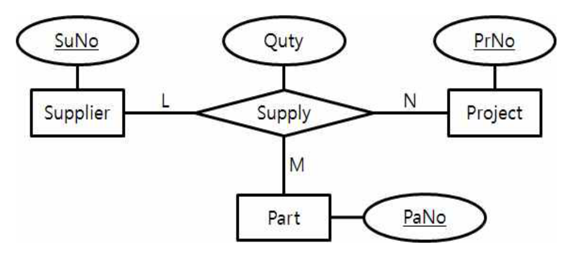

작성 기준: 업로드된 데이터베이스 강의자료(구환회기술사 Chapter1~7, 특강 및 출제 예상) 우선 근거, 외부지식은 보조적으로만 사용(강의자료 미수록 항목은 각 문항에 명시)
정답 출처: 2018년(제19회) 정보시스템 감리사 필기시험 문제 및 답안.pdf (원본 Bold 표시 정답 - 페이지 렌더 이미지 직접 대조 확인)
정답 신뢰도: 매우 높음 (stroke-text 자동추출 25/25 + 보기 영역 렌더 확대 육안 대조 25/25 일치, 계산·SQL·관계대수 문항은 별도 재검산)
특이 문항 없음: 전항정답·복수정답·「2개 선택」 문항이 하나도 없다. 25문항 모두 단일 정답이다.
기준 버전 주의: 본 회차는 2018년 시행분이다. Ajax 구성요소(61번), 데이터 품질 표준 ISO 8000(52번) 등은 이후 기술·표준 변화가 있으므로, 각 문항의 「관련 이론 정리」 말미에 현행(2025년 기준) 보충사항을 병기하였다.
| 번호 | 정답 | 번호 | 정답 | 번호 | 정답 |
|---|---|---|---|---|---|
| 51 | ② | 61 | ④ | 71 | ③ |
| 52 | ④ | 62 | ① | 72 | ② |
| 53 | ③ | 63 | ④ | 73 | ② |
| 54 | ③ | 64 | ① | 74 | ③ |
| 55 | ② | 65 | ④ | 75 | ① |
| 56 | ② | 66 | ② | ||
| 57 | ③ | 67 | ② | ||
| 58 | ② | 68 | ② | ||
| 59 | ④ | 69 | ④ | ||
| 60 | ② | 70 | ② |
2018년 제19회 데이터베이스는 설계·모델링 이론과 질의 최적화가 균형 있게 배치된 표준적인 회차다. 앞선 2019년(「2개 선택」 4문항)과 달리 특이 문항이 전혀 없어 난이도 체감은 상대적으로 낮다. 다만 계산·추론이 필요한 문항이 5개(53·56·59·65·70) 있어 시간 배분이 필요하다.
영역별 배분은 ① 설계·모델링 6문항(51·53·54·55·56·57), ② SQL·질의 최적화 7문항(59·62·63·64·65·66·73), ③ 트랜잭션·동시성 3문항(67·68·75), ④ 저장구조·인덱스 1문항(72), ⑤ DW·데이터마이닝 2문항(71·74), ⑥ 분산 데이터베이스 1문항(70), ⑦ 품질·무결성·기타 5문항(52·58·61·69) 이다.
이 회차의 특징 네 가지.
첫째, 설계 이론 비중이 높다. DB 설계 6단계 순서(51), 삼항 관계의 외래키 개수(53), 키 계층 관계(54), 스키마 vs 상태(55), 무손실 분해(56), ER→릴레이션 변환 규칙(57) 이 연속으로 나왔다. 개념적·논리적 설계를 체계적으로 정리해 두면 6문항을 확보할 수 있다.
둘째, 질의 최적화가 세 문항(65·66·73) 이다. 특히 65번은 OR 조건의 선택도를 직접 계산해야 하는 문항으로, 포함-배제 원리를 적용해야 한다. 66번(경험적 규칙)과 73번(옵티마이저 종류)은 개념 문항이다.
셋째, 관계대수 계산(59) 이 4개 보기의 속성 수·투플 수를 모두 따져야 하는 형태다. 중복 제거(집합 의미론) 를 놓치면 전부 틀린다.
넷째, 분산 DB의 세미조인 전송량(70) 이 출제되었다. 세미조인의 첫 전송 데이터가 무엇인지 정확히 알아야 하며, 계산 자체는 단순하다.
강의자료 커버리지는 설계·정규화·트랜잭션·SQL에서 양호하나, ISO 8000 데이터 품질(52)·Ajax 구성요소(61)·저장 프로시저(62)·내장 SQL(69)·확장성 해싱(72) 은 업로드된 자료에 직접 수록되어 있지 않아 외부지식으로 보완했다.
| 항목 | 내용 |
|---|---|
| 문서명 | 정보시스템 감리사 데이터베이스 기출문제 해설집 - 2018년 제19회 |
| 대상 문항 | Q51 ~ Q75 (데이터베이스) |
| 원본 출처 | 2018년(제19회) 정보시스템 감리사 필기시험 문제 및 답안.pdf (p.12~15) |
| 정답 확인 방법 | stroke-text(글리프 render mode) 자동추출 + 보기 영역 렌더 확대 육안 대조 (25/25 일치) |
| 특이 문항 | 없음 — 전항정답·복수정답·2개 선택 문항 모두 없음 |
| 그림 포함 문항 | 53번 개체-관계도(삼항 관계) — 이미지 + 서술 전사 병기 |
| 표·SQL 제시 문항 | 51·54·56·59·60·63·64·65·67·70번 — 이미지 대신 마크다운 표/코드블록으로 전사 |
| 근거 강의자료 | 구환회기술사 Chapter1(개요)·Chapter2(트랜잭션)·Chapter3(모델링)·Chapter4(SQL)·Chapter5(유형)·Chapter6(분석)·Chapter7(빅데이터), 데이터베이스 특강 및 출제 예상 |
| 강의자료 미수록(외부지식 보완) 항목 | ISO 8000 데이터 품질(52), Ajax 구성요소(61), 저장 프로시저(62), 내장 SQL·커서(69), 확장성 해싱(72), 세미조인 전송량(70) |
| 기준 버전 | 2018년 출제 당시 기준 + 현행(2025년) 보충사항 병기 |
다음과 같이 가 ~ 바에 데이터베이스 설계의 주요 과정들이 나열되어 있다. 데이터베이스 설계과정의 순서로 가장 적절한 것은?
| 기호 | 과정 |
|---|---|
| 가 | 논리적 설계 |
| 나 | 데이터베이스 튜닝 |
| 다 | 요구사항 수집 및 분석 |
| 라 | 물리적 설계 |
| 마 | 정규화 |
| 바 | 개념적 설계 |
① 다, 바, 마, 가, 나, 라
② 다, 바, 가, 마, 라, 나
③ 다, 가, 바, 마, 라, 나
④ 다, 바, 가, 라, 마, 나
정답 : ②번
정답 신뢰도 : 매우 높음 (원본 Bold 확인)
| 항목 | 내용 |
|---|---|
| 연도 | 2018년 (제19회) |
| 과목 | 데이터베이스 |
| 문항번호 | 51번 |
| 난이도 | 하 |
| 출제주제 | 데이터베이스 설계 단계의 순서 |
설계 단계·순서는 난이도 하위의 서비스 문항으로 배치된다. 형태는 ① 순서 나열(본 문항), ② 단계별 산출물 매칭, ③ 세부 활동의 소속 단계, ④ 3단계 스키마와의 대응이다. 정규화(논리) vs 역정규화(물리) 구분만 확실하면 확실히 득점한다.
| 연도 | 문항번호 | 핵심개념 |
|---|---|---|
| 2018 | 55 | 스키마 vs 데이터베이스 상태 |
| 2018 | 57 | ER → 릴레이션 변환 규칙 |
| 2019 | 52 | 정규화의 목적 |
요구사항 분석 → 개념적 설계(E-R) → 논리적 설계(릴레이션) → 정규화 → 물리적 설계(인덱스) → 구현 → 튜닝
정규화 = 논리적 설계 / 역정규화 = 물리적 설계 — 단계가 다르다
개념적 설계는 DBMS 독립적, 논리적 설계부터 DBMS 종속적
튜닝은 항상 가장 마지막(실데이터·부하 관찰 후)
데이터베이스 설계 표준 5단계
| 단계 | 산출물 | 본 문제 기호 |
|---|---|---|
| 1. 요구사항 수집 및 분석 | 요구사항 명세서 | 다 |
| 2. 개념적 설계 | E-R 다이어그램(DBMS 독립적) | 바 |
| 3. 논리적 설계 | 릴레이션 스키마(DBMS 종속적) | 가 |
| ↳ 정규화 | 이상 현상 제거된 스키마 | 마 |
| 4. 물리적 설계 | 인덱스·저장 구조·접근 경로 | 라 |
| 5. 구현 및 운영 | DDL 실행, 튜닝 | 나 |
순서: 다 → 바 → 가 → 마 → 라 → 나 → 정답 ②
각 단계의 위치 근거
(1) 다(요구사항 분석)이 첫 번째
무엇을 저장할지 모르면 설계를 시작할 수 없다. 네 보기 모두 '다'로 시작하므로 이 부분은 변별력이 없다.
(2) 바(개념적 설계)가 가(논리적 설계)보다 먼저
| 단계 | 관점 | DBMS 의존 |
|---|---|---|
| 개념적 설계 | 업무 관점의 개체·관계 | 독립적 |
| 논리적 설계 | 데이터 모델 관점(관계형 등) | 종속적 |
추상 수준이 높은 것에서 낮은 것으로 진행한다. → 보기 ③(다, 가, 바, …) 탈락
(3) 마(정규화)가 가(논리적 설계) 다음
정규화는 논리적 설계의 세부 활동이다. 릴레이션 스키마가 만들어져야 함수 종속성을 분석해 분해할 수 있다.
| 순서 | 이유 |
|---|---|
| 논리적 설계 → 정규화 | 릴레이션이 있어야 정규화 대상이 생김 |
| 정규화 → 물리적 설계 | 정규화된 스키마를 기준으로 인덱스·저장 구조 결정 |
→ 보기 ①(다, 바, 마, 가, …)은 정규화가 논리적 설계보다 앞서므로 탈락
→ 보기 ④(다, 바, 가, 라, 마, 나)는 정규화가 물리적 설계 뒤에 오므로 탈락
(4) 나(튜닝)가 마지막
튜닝은 실제 데이터와 부하를 관찰한 뒤 수행하는 활동이므로 구현·운영 단계에 속한다.
최종 판정표
| 보기 | 순서 | 문제점 |
|---|---|---|
| ① | 다-바-마-가-나-라 | 정규화가 논리적 설계보다 앞섬, 튜닝이 물리 설계보다 앞섬 |
| ② | 다-바-가-마-라-나 | 정확 |
| ③ | 다-가-바-마-라-나 | 논리적 설계가 개념적 설계보다 앞섬 |
| ④ | 다-바-가-라-마-나 | 정규화가 물리적 설계 뒤에 옴 |
두 곳이 틀렸다.
| 오류 | 내용 |
|---|---|
| 마(정규화) → 가(논리적 설계) | 정규화는 논리적 설계의 일부이므로 뒤에 와야 함 |
| 나(튜닝) → 라(물리적 설계) | 튜닝은 가장 마지막 |
가(논리적)와 바(개념적)의 순서가 뒤바뀌었다.
개념적 설계가 먼저인 이유: 개념 모델은 DBMS를 선택하기 전에 만든다. 업무 요건을 순수하게 표현한 뒤, 사용할 DBMS(관계형/문서형 등)에 맞춰 논리 모델로 변환한다. 순서를 뒤집으면 DBMS 종속적 판단이 업무 분석을 오염시킨다.
마(정규화)가 라(물리적 설계) 뒤에 왔다.
왜 문제인가: 물리적 설계는 인덱스·파티션·저장 구조를 결정하는 단계다. 아직 정규화되지 않은 스키마에 인덱스를 설계하면, 정규화로 테이블이 분해되는 순간 인덱스 설계를 전부 다시 해야 한다.
다만 역정규화(denormalization) 는 물리적 설계 단계에서 성능을 위해 수행한다. 정규화(논리)와 역정규화(물리)는 단계가 다르다는 점을 구분해야 한다.
소거 요령: 두 가지 규칙만 적용하면 된다.
1. 개념적(바) → 논리적(가) — 추상 수준이 높은 것부터 → ③ 탈락
2. 논리적(가) → 정규화(마) → 물리적(라) — 정규화는 논리와 물리 사이 → ①·④ 탈락②만 남는다.
데이터베이스 설계 5단계 상세
| 단계 | 주요 활동 | 산출물 | 특징 |
|---|---|---|---|
| 요구사항 분석 | 인터뷰, 문서 분석, 현행 시스템 조사 | 요구사항 명세서, 업무 프로세스 | 사용자 관점 |
| 개념적 설계 | 개체·속성·관계 도출, E-R 모델링 | E-R 다이어그램, 개념 스키마 | DBMS 독립적 |
| 논리적 설계 | E-R → 릴레이션 변환, 정규화, 뷰 설계 | 논리 스키마, 테이블 정의서 | DBMS 종속적 |
| 물리적 설계 | 인덱스·클러스터·파티션, 저장 구조, 접근 경로, 역정규화 | 물리 스키마, DDL | 성능 중심 |
| 구현 및 운영 | DDL 실행, 데이터 적재, 모니터링·튜닝 | 실제 DB, 운영 지침 | 지속적 개선 |
단계별 산출물 대응
요구사항 명세서
↓ 개념적 설계
E-R 다이어그램 (개체, 관계, 속성, 카디널리티, 참여제약)
↓ 논리적 설계 (매핑 규칙 적용)
릴레이션 스키마 (테이블, 컬럼, PK/FK)
↓ 정규화 (함수 종속성 분석)
정규화된 스키마 (1NF → 2NF → 3NF → BCNF)
↓ 물리적 설계
물리 스키마 (인덱스, 파티션, 테이블스페이스, 역정규화)
↓ 구현
실제 데이터베이스
↓ 운영
튜닝 (SQL, 인덱스, 파라미터)
개념적 vs 논리적 vs 물리적 설계 비교
| 구분 | 개념적 | 논리적 | 물리적 |
|---|---|---|---|
| 관점 | 업무 | 데이터 모델 | 저장·성능 |
| DBMS 의존 | 독립 | 종속(관계형/문서형) | 완전 종속(Oracle/MySQL) |
| 표현 | E-R 다이어그램 | 릴레이션 스키마 | DDL, 저장 파라미터 |
| 주요 활동 | 개체·관계 도출 | 정규화, 매핑 | 인덱스, 역정규화 |
| 관심사 | 무엇을 저장하나 | 어떻게 구조화하나 | 어떻게 저장·접근하나 |
ANSI/SPARC 3단계 스키마와의 대응
| 스키마 | 대상 | 설계 단계 |
|---|---|---|
| 외부 스키마(external) | 개별 사용자·응용의 뷰 | 논리적 설계(뷰 설계) |
| 개념 스키마(conceptual) | 전체 조직의 통합 관점 | 개념적·논리적 설계 |
| 내부 스키마(internal) | 물리적 저장 구조 | 물리적 설계 |
| 독립성 | 내용 |
|---|---|
| 논리적 데이터 독립성 | 개념 스키마 변경이 외부 스키마에 영향 없음 |
| 물리적 데이터 독립성 | 내부 스키마 변경이 개념 스키마에 영향 없음 |
설계 접근 방식
| 방식 | 내용 | 적합 |
|---|---|---|
| 하향식(top-down) | 전체 → 세부, E-R부터 | 신규 구축 |
| 상향식(bottom-up) | 세부 → 전체, 속성 통합 | 기존 시스템 통합 |
| 혼합식 | 두 방식 병행 | 대규모 프로젝트 |
| 내부-외부 확장 | 핵심부터 확장 | 단계적 구축 |
현행(2025년) 보충: 애자일·DevOps 환경에서는 스키마 마이그레이션 도구(Flyway, Liquibase)로 설계와 구현을 반복적으로 진행한다. 다만 단계의 논리적 선후 관계 자체는 변하지 않는다 — 요건 없이 개념 모델을 만들 수 없고, 개념 모델 없이 논리 모델을 만들 수 없다.
NoSQL 환경에서는 접근 패턴(query-driven design) 을 먼저 정의하고 스키마를 설계하는 방식이 쓰이지만, 이는 물리 설계를 앞당기는 것이지 요구사항 분석을 생략하는 것이 아니다.
강의자료 근거: Chapter3(모델링)에 데이터베이스 설계 단계가 수록되어 있다.
설계 단계 준수는 정보화 사업 감리의 기본 점검 항목이다.
| 점검 항목 | 확인 |
|---|---|
| 요구사항 추적성 | 요건 → 개체 → 테이블 매트릭스 존재 여부 |
| 개념 모델 존재 | E-R 다이어그램이 산출물로 관리되는가 |
| 정규화 수행 근거 | 함수 종속성 분석 문서 |
| 역정규화 근거 | 성능 테스트 결과 기반인가 |
| 단계 간 일관성 | 개념 → 논리 → 물리 모델이 동기화되어 있는가 |
감리에서는 ① 설계 단계별 산출물이 모두 존재하는가, ② 개념 모델과 물리 모델이 일치하는가(개념 모델만 만들고 방치하는 사례 다수), ③ 정규화 이후 역정규화가 근거 있게 적용되었는가, ④ 튜닝이 설계 결함을 덮는 수단으로 오용되지 않는가를 점검한다.
흔한 결함 1: 개념적 설계를 건너뛰고 바로 테이블을 만드는 사례다. 업무 개체가 정리되지 않은 채 화면 단위로 테이블을 만들면 중복 개체·누락 관계가 발생한다.
흔한 결함 2: 개념 모델(E-R)을 초기에 한 번 만들고 이후 변경 사항을 반영하지 않아, 최종 물리 모델과 전혀 다른 문서가 산출물로 제출되는 사례다. 모델 동기화 절차가 필요하다.
흔한 결함 3: 성능 문제를 설계 개선이 아닌 튜닝으로만 해결하려는 사례다. 정규화가 부족해 생긴 구조적 문제는 인덱스로 해결되지 않는다.
설계 순서 문항은 두 개의 고정 규칙으로 풀린다.
규칙 1 — 추상 수준 하강
요구사항 → 개념적 → 논리적 → 물리적 → 구현 → 운영
규칙 2 — 세부 활동의 소속
| 세부 활동 | 소속 단계 |
|---|---|
| E-R 모델링 | 개념적 설계 |
| 정규화 | 논리적 설계 |
| 뷰 설계 | 논리적 설계 |
| 인덱스 설계 | 물리적 설계 |
| 역정규화 | 물리적 설계 |
| 파티셔닝 | 물리적 설계 |
| 튜닝 | 운영 |
빈출 함정
| 함정 | 정답 |
|---|---|
| 정규화를 물리적 설계에 배치 | 논리적 설계 |
| 역정규화를 논리적 설계에 배치 | 물리적 설계 |
| 개념적/논리적 순서 뒤바꿈 | 개념적이 먼저 |
| 튜닝을 중간에 배치 | 가장 마지막 |
정규화와 역정규화의 단계가 다르다는 점이 가장 자주 출제되는 지점이다.
데이터베이스 구축 방법론은 데이터베이스를 구축할 때 필요한 공정에 대한 기준서이다. 그 중 품질활동과 관련된 다음 설명 중 가장 적절하지 않은 것은?
① 데이터 품질에 대한 가장 중요한 판단 요소는 해당 데이터가 업무에 도움이 되는가이다.
② 국제 데이터 품질 표준인 ISO 8000에서는 데이터 품질 기준을 크게 유효성과 활용성으로 구분한다.
③ 품질보증 활동에는 프로젝트를 수행하는 동안 오류가 발생하지 않도록 사전에 대비하는 활동까지 포함한다.
④ 데이터베이스 구축 공정이 모두 완료된 후 데이터 품질활동이 진행된다.
정답 : ④번
정답 신뢰도 : 매우 높음 (원본 Bold 확인)
| 항목 | 내용 |
|---|---|
| 연도 | 2018년 (제19회) |
| 과목 | 데이터베이스 |
| 문항번호 | 52번 |
| 난이도 | 중 |
| 출제주제 | 데이터베이스 구축 방법론의 품질활동 |
데이터 품질은 데이터베이스 과목에서 간헐 출제되는 관리 영역 문항이다. 순수 기술 문항이 아니라 품질관리 원칙을 묻는 형태이므로, 감리·사업관리 과목의 품질 지식과 연계된다. 형태는 ① 품질활동 정오(본 문항), ② 품질 특성 정의, ③ QA/QC 구분, ④ 데이터 거버넌스 조직·역할이다.
| 연도 | 문항번호 | 핵심개념 |
|---|---|---|
| 2018 | 51 | 데이터베이스 설계 단계 |
| 2020 | 51 | 데이터 관리·거버넌스 |
| 2022 | 52 | 데이터 품질 관리 |
데이터 품질활동은 요구사항부터 운영까지 전 생명주기 병행 — "구축 완료 후"는 오답
품질보증(QA) = 프로세스·예방·사전 / 품질통제(QC) = 산출물·검사·사후
데이터 품질의 최종 기준 = 사용 적합성(fitness for use, 업무에 도움이 되는가)
결함은 조기 발견할수록 저렴 — 요구사항 1 : 개발 10 : 운영 100
ISO 8000 = 국제 데이터 품질 표준, 유효성·활용성 축
품질 관리의 기본 원칙 — "품질은 검사로 만들어지지 않는다"
데이터 품질활동은 요구사항 정의 단계부터 운영까지 전 생명주기에 걸쳐 수행되어야 한다. 구축이 끝난 뒤에야 품질을 확인하면, 발견된 결함을 고치는 비용이 기하급수적으로 증가한다.
결함 발견 시점과 수정 비용(1:10:100 법칙)
| 발견 시점 | 상대 비용 |
|---|---|
| 요구사항 단계 | 1 |
| 설계·개발 단계 | 10 |
| 운영(구축 완료 후) | 100 |
단계별 데이터 품질활동
| 구축 단계 | 품질활동 |
|---|---|
| 요구사항 분석 | 데이터 요구사항 정의, 데이터 표준 수립 |
| 개념·논리 설계 | 모델 검토(리뷰), 표준 준수 점검, 정규화 검증 |
| 물리 설계 | 무결성 제약 설계 검토, 인덱스 적정성 |
| 구현 | DDL 표준 준수, 제약조건 구현 검증 |
| 데이터 전환·적재 | 데이터 프로파일링, 정제, 검증 |
| 운영 | 품질 지표 모니터링, 정기 진단 |
보기 ④의 "구축 공정이 모두 완료된 후" 는 위 활동 중 마지막 하나만 인정하는 셈이다. → 정답 ④
③과의 논리적 모순
보기 ③은 "품질보증 활동에는 프로젝트를 수행하는 동안 오류가 발생하지 않도록 사전에 대비하는 활동까지 포함한다" 고 서술한다.
| 보기 | 주장 |
|---|---|
| ③ | 품질활동은 수행 중에도, 사전 예방으로도 이뤄진다 |
| ④ | 품질활동은 완료 후에 진행된다 |
두 보기는 서로 모순되며, ③이 품질보증의 정의에 부합하므로 ④가 틀렸다.
데이터 품질 기준(6대 특성)
| 특성 | 내용 | 점검 예 |
|---|---|---|
| 정확성(accuracy) | 실제 값과 일치 | 주소가 실제 주소인가 |
| 완전성(completeness) | 누락 없음 | 필수 항목 NULL 비율 |
| 일관성(consistency) | 시스템 간 모순 없음 | 동일 고객명이 시스템마다 다름 |
| 적시성(timeliness) | 최신 상태 | 갱신 주기 준수 |
| 유일성(uniqueness) | 중복 없음 | 동일 고객 중복 등록 |
| 유효성(validity) | 정의된 규칙 준수 | 생년월일 형식·범위 |
데이터 품질 관리 프레임워크
| 구성 요소 | 내용 |
|---|---|
| 데이터 표준화 | 용어·도메인·코드 표준 |
| 데이터 모델 관리 | 표준 준수 모델링, 변경 관리 |
| 데이터 흐름 관리 | 인터페이스·전환 품질 |
| 데이터 값 관리 | 프로파일링, 정제, 검증 |
| 품질 조직·프로세스 | 데이터 관리자(DA), 거버넌스 |
데이터 프로파일링(profiling) 기법
| 기법 | 점검 대상 |
|---|---|
| 컬럼 분석 | NULL 비율, 값 분포, 최소·최대, 유일값 수 |
| 날짜 분석 | 형식 오류, 미래 날짜, 이상 범위 |
| 코드 분석 | 표준 코드 외 값 존재 여부 |
| 관계 분석 | 참조 무결성 위반(고아 레코드) |
| 중복 분석 | 유사 레코드 탐지 |
| 업무 규칙 분석 | 계산식·조건 위반 |
데이터 품질 성숙도 모형
| 수준 | 명칭 | 특징 |
|---|---|---|
| 1 | 도입 | 개인 역량 의존, 표준 없음 |
| 2 | 정형화 | 부분적 표준·절차 수립 |
| 3 | 통합 | 전사 표준·전담 조직 |
| 4 | 정량화 | 품질 지표 측정·관리 |
| 5 | 최적화 | 지속적 개선, 자동화 |
데이터 거버넌스 구성
| 요소 | 역할 |
|---|---|
| 데이터 관리자(DA) | 데이터 표준·모델 관리 |
| 데이터베이스 관리자(DBA) | 물리 구조·성능·보안 |
| 데이터 오너(owner) | 업무 데이터의 최종 책임 |
| 데이터 스튜어드(steward) | 품질 실무 담당 |
현행(2025년) 보충: 데이터 품질 관리는 데이터 거버넌스·마이데이터·AI 학습 데이터 확산과 함께 중요성이 커졌다.
변화 내용 데이터 관측성(observability) 파이프라인 품질을 실시간 모니터링 Data Contract 생산자-소비자 간 스키마·품질 계약 AI 학습 데이터 품질 편향·레이블 정확도가 새로운 품질 축 국내 제도 「데이터 산업진흥법」, 데이터 품질인증(DQC) 핵심 원칙(전 생명주기 품질활동)은 변하지 않는다.
강의자료 근거: 데이터 품질·ISO 8000은 강의자료에 미수록이다. 감리 및 사업관리 과목의 품질관리 영역과 겹치므로 함께 학습하는 것이 효율적이다.
데이터 품질은 DB 구축 사업 감리의 핵심 점검 영역이다.
| 단계 | 감리 점검 |
|---|---|
| 요구사항 | 데이터 표준·품질 목표가 정의되었는가 |
| 설계 | 모델 리뷰가 수행되고 표준 준수율이 측정되는가 |
| 전환 | 전환 전후 건수·금액 대사(reconciliation) 가 이뤄지는가 |
| 테스트 | 데이터 프로파일링 결과가 있는가 |
| 운영 | 품질 지표가 정기 측정되는가 |
감리에서는 ① 품질활동이 전 단계에 배치되었는가(마지막에만 몰려 있지 않은가), ② 품질 목표가 정량적으로 설정되었는가(예: 필수항목 완전성 99.9%), ③ 데이터 전환 검증 절차가 있는가, ④ 품질 책임 조직이 지정되었는가를 점검한다.
흔한 결함 1: 데이터 전환을 건수만 대사하고 값 검증을 하지 않아, 인코딩 오류로 한글이 깨진 채 이관된 사례다. 표본 값 대사와 프로파일링이 함께 필요하다.
흔한 결함 2: 품질활동을 오픈 직전 UAT 기간에만 배치해, 결함 발견 시 수정할 시간이 없어 그대로 오픈하는 사례다. 이것이 바로 보기 ④가 틀린 이유를 보여주는 현실 사례다.
흔한 결함 3: 데이터 표준(용어·도메인)을 수립했으나 모델링 단계에서 준수 여부를 점검하지 않아, 같은 의미의 컬럼이 CUST_NM/고객명/custName 으로 제각각인 사례다.
품질 문항은 "예방 중심" 원칙으로 판정한다.
참인 서술 (○)
| 항목 |
|---|
| 품질활동은 전 생명주기에 걸쳐 수행 |
| 품질보증(QA)은 예방, 품질통제(QC)는 발견 |
| 데이터 품질의 기준은 사용 적합성(fitness for use) |
| 결함은 조기 발견할수록 비용이 낮다 |
| 데이터 표준화가 품질의 기반 |
거짓인 서술 (✗) — 출제 단골
| 틀린 서술 | 실제 |
|---|---|
| 구축 완료 후 품질활동 시작 | 전 단계 병행(← 본 문항 ④) |
| 품질은 검사로 확보된다 | 예방이 핵심 |
| 품질보증 = 테스트 | QA는 프로세스, QC가 검사 |
| 품질 책임은 개발자에게만 | 오너·DA·스튜어드 체계 |
QA vs QC 구분 — 가장 자주 출제
QA = 프로세스 개선·예방·사전 / QC = 산출물 검사·발견·사후
데이터 품질의 최종 기준은 "사용 적합성(fitness for use)" 이다.
| 관점 | 내용 |
|---|---|
| 전통적 관점 | 정확성·완전성 등 내재적 속성 |
| 현대적 관점 | 사용자의 목적에 부합하는가(fitness for use) |
아무리 정확하고 완전한 데이터라도 업무에 쓸모가 없으면 품질이 높다고 할 수 없다. 예컨대 100% 정확하지만 3개월 전 데이터라면 실시간 의사결정에는 무가치하다.
ISO 8000은 데이터 품질에 관한 국제 표준 시리즈다.
| 구분 | 내용 |
|---|---|
| 유효성(validity) | 데이터가 정의된 규칙·형식·값 범위를 만족하는가 |
| 활용성(usability) | 데이터를 의도한 목적에 사용할 수 있는가 |
국내 데이터 품질관리 성숙도 모형(DQM3) 이나 한국데이터산업진흥원(K-DATA)의 데이터 품질진단 도 유사한 축(유효성·활용성)을 사용한다. 보기 ②는 국내 감리 실무에서 통용되는 서술이다.
품질보증(QA) vs 품질통제(QC) 의 구분이다.
| 구분 | 품질보증(QA) | 품질통제(QC) |
|---|---|---|
| 시점 | 사전·과정 중 | 사후 |
| 대상 | 프로세스 | 산출물 |
| 활동 | 표준 수립, 교육, 프로세스 감사, 리뷰 | 검사, 테스트, 측정 |
| 목적 | 결함 예방 | 결함 발견 |
| 비유 | 레시피를 잘 만든다 | 완성된 요리를 맛본다 |
품질보증은 "오류가 발생하지 않도록 사전에 대비하는" 활동을 핵심으로 한다. 보기 ③은 정확하다.
소거 요령: ①·②·③은 모두 품질관리의 정상적 원칙을 서술한다. ④만 "모두 완료된 후" 라는 사후 일괄 처리를 주장하는데, 이는 품질 관리의 기본 철학과 정반대다.
특히 ③과 ④가 직접 충돌하므로, 둘 중 하나는 반드시 틀렸다. ③이 QA의 교과서적 정의이므로 ④가 답이다.
다음의 개체-관계도는 어떤 공급자(Supplier) 가 어떤 프로젝트(Project) 에 어떤 부품(Part) 을 몇 개(Quty) 공급(Supply) 하는지를 나타내고 있다. 주어진 개체-관계도를 4개의 릴레이션으로 적절하게 변환 설계한 결과에 따라 해당 릴레이션들을 생성하기 위한 DDL 명령어에서 외래키 지정을 가장 많이 포함하는 릴레이션의 외래키 개수는?

(제시 도해 전사)
(SuNo) (Quty) (PrNo)
│ │ │
┌────┴─────┐ L ╱────────┴────────╲ N ┌─────┴────┐
│ Supplier │─────────< Supply >────────│ Project │
└──────────┘ ╲────────┬────────╱ └──────────┘
│ M
┌────┴────┐
│ Part │──(PaNo)
└─────────┘
| 요소 | 내용 |
|---|---|
| 개체 3개 | Supplier(키: SuNo), Part(키: PaNo), Project(키: PrNo) |
| 관계 | Supply — 삼항(ternary) 관계, 카디널리티 L : M : N |
| 관계 속성 | Quty(공급 수량) |
| 밑줄 | SuNo, PaNo, PrNo 는 각 개체의 기본키 |
① 1
② 2
③ 3
④ 4
정답 : ③번
정답 신뢰도 : 매우 높음 (원본 Bold 확인)
| 항목 | 내용 |
|---|---|
| 연도 | 2018년 (제19회) |
| 과목 | 데이터베이스 |
| 문항번호 | 53번 |
| 난이도 | 중 |
| 출제주제 | 삼항(ternary) 관계의 관계 모델 변환과 외래키 개수 |
E-R → 릴레이션 변환은 매 회차 출제되는 최빈 주제다. 특히 삼항 관계는 이항 관계보다 난이도가 높아 변별 문항으로 자주 배치된다. 형태는 ① 외래키 개수(본 문항), ② 테이블 개수 산출, ③ 기본키 구성, ④ 연결 함정 판정이다. "n항 → 별도 테이블 + FK n개" 만 기억하면 된다.
| 연도 | 문항번호 | 핵심개념 |
|---|---|---|
| 2018 | 57 | ER → 릴레이션 변환 규칙 |
| 2019 | 63 | ER → 테이블 개수 변환 |
| 2020 | 73 | E-R 매핑·전체 참여 |
n항 관계는 반드시 별도 릴레이션 — 참여 개체 n개의 키를 모두 외래키로 가진다
본 문항: 삼항 L:M:N → Supply(SuNo, PaNo, PrNo, Quty), FK 3개
관계 속성(Quty)은 일반 속성이지 외래키가 아니다
테이블 수 = 개체 3 + 삼항 관계 1 = 4개
삼항을 이항 3개로 분해하면 연결 함정(connection trap)으로 정보가 손실된다
변환 결과 — 4개의 릴레이션
| # | 릴레이션 | 속성 | 기본키 | 외래키 개수 |
|---|---|---|---|---|
| 1 | Supplier | SuNo, … | SuNo | 0 |
| 2 | Part | PaNo, … | PaNo | 0 |
| 3 | Project | PrNo, … | PrNo | 0 |
| 4 | Supply | SuNo, PaNo, PrNo, Quty | (SuNo, PaNo, PrNo) | 3 ★ |
외래키를 가장 많이 포함하는 릴레이션 = Supply, 외래키 3개 → 정답 ③
DDL로 확인
CREATE TABLE Supplier (
SuNo VARCHAR(10) PRIMARY KEY,
SName VARCHAR(50)
);
CREATE TABLE Part (
PaNo VARCHAR(10) PRIMARY KEY,
PName VARCHAR(50)
);
CREATE TABLE Project (
PrNo VARCHAR(10) PRIMARY KEY,
PrName VARCHAR(50)
);
CREATE TABLE Supply (
SuNo VARCHAR(10),
PaNo VARCHAR(10),
PrNo VARCHAR(10),
Quty INT, -- 관계 속성
PRIMARY KEY (SuNo, PaNo, PrNo), -- 세 키의 복합 PK
FOREIGN KEY (SuNo) REFERENCES Supplier(SuNo), -- ★ FK 1
FOREIGN KEY (PaNo) REFERENCES Part(PaNo), -- ★ FK 2
FOREIGN KEY (PrNo) REFERENCES Project(PrNo) -- ★ FK 3
);
Supply 테이블에만 FOREIGN KEY 절이 3개 나타난다. 나머지 세 테이블에는 외래키가 없다.
왜 삼항 관계는 별도 릴레이션이어야 하는가
Supply 인스턴스의 의미 : "공급자 S가 프로젝트 P에 부품 A를 100개 공급"
세 개체가 동시에 결정되어야 Quty(수량)가 확정된다.
→ Quty는 (SuNo, PaNo, PrNo) 세 값 모두에 종속
→ 어느 한 개체 테이블에도 넣을 수 없다
Supplier에 넣으면? 한 공급자가 여러 (부품, 프로젝트) 조합을 가짐 → 다중값 → 1NF 위반
Part에 넣으면? 동일
Project에 넣으면? 동일
∴ 별도 관계 릴레이션만이 유일한 해법
함수 종속으로 표현하면
$$(\text{SuNo},\ \text{PaNo},\ \text{PrNo}) \to \text{Quty}$$
세 속성의 조합이 결정자이므로, 셋을 모두 포함하는 릴레이션이 필요하다.
이항 1:N 관계로 착각한 경우다. 1:N이라면 N 측에 외래키 하나만 추가하면 되지만, 본 문제는 삼항 L:M:N 이다.
이항 M:N 관계로 착각한 경우다. M:N 관계 테이블은 양쪽 개체의 키 2개를 외래키로 가진다.
함정: 다이어그램에서 마름모에 연결된 선이 3개라는 점을 놓치면 이항 관계로 오독한다. Supplier — Supply — Project 만 보고 Part를 빠뜨리기 쉽다.
Quty까지 외래키로 세는 오류다.
| 속성 | 성격 |
|---|---|
| SuNo, PaNo, PrNo | 외래키(다른 릴레이션 참조) |
| Quty | 일반 속성(관계 속성, 참조 대상 없음) |
Quty는 어떤 릴레이션의 키도 참조하지 않으므로 외래키가 아니다.
소거 요령: 마름모에 연결된 선의 개수 = 관계의 차수(arity) 다.
연결 선 수 관계 관계 테이블의 FK 수 2 이항(binary) 2(M:N인 경우) 3 삼항(ternary) 3 4 사항(quaternary) 4 그림에서 Supply 마름모에 Supplier·Part·Project 세 개가 연결되어 있으므로 3이다.
n항 관계(n-ary relationship)의 변환 규칙
n항 관계는 항상 별도의 릴레이션으로 변환하며, 참여하는 n개 개체의 기본키를 모두 외래키로 포함한다.
| 관계 차수 | 별도 릴레이션 | 외래키 수 |
|---|---|---|
| 이항 1:1 | 불필요(FK 하나 추가) | 1 |
| 이항 1:N | 불필요(N측에 FK) | 1 |
| 이항 M:N | 필요 | 2 |
| 삼항 L:M:N | 필요 | 3 |
| n항 | 필요 | n |
관계 릴레이션의 기본키 결정
| 카디널리티 | 기본키 |
|---|---|
| L:M:N(본 문제) | 세 키 모두(SuNo, PaNo, PrNo) |
| 1:M:N | M·N 측 두 키(1 측은 결정됨) |
| 1:1:N | N 측 키 + 하나 |
본 문제는 L:M:N 이므로 세 키 전부가 복합 기본키다.
삼항 관계 vs 이항 관계 3개 — 중요한 구분
[삼항 관계] Supply(SuNo, PaNo, PrNo, Quty)
→ "공급자 S가 프로젝트 P에 부품 A를 공급한다"는 하나의 사실
[이항 관계 3개] SupplierPart(SuNo, PaNo)
PartProject(PaNo, PrNo)
SupplierProject(SuNo, PrNo)
→ "S가 A를 취급", "A가 P에 사용됨", "S가 P에 납품"이라는 세 개의 별개 사실
| 구분 | 표현 가능한 정보 |
|---|---|
| 삼항 관계 | 세 개체의 동시 조합 |
| 이항 관계 3개 | 각 쌍의 관계만 — 삼자 조합을 복원할 수 없다 |
반례: 이항 관계로 "S가 A를 취급", "A가 P에 쓰임", "S가 P에 납품"이 각각 성립해도, "S가 P에 A를 공급"했다고 단정할 수 없다. S는 P에 다른 부품 B를 납품했을 수 있다. 이를 연결 함정(connection trap) 이라 한다.
삼항 관계의 대안 설계
| 방식 | 내용 | 장단점 |
|---|---|---|
| 관계 릴레이션(표준) | Supply(SuNo,PaNo,PrNo,Quty) | 정확, 표준 |
| 집단화(aggregation) | 이항 관계를 개체로 승격 후 연결 | 준삼항 표현 |
| 연관 개체(associative entity) | Supply를 개체로 모델링 + 대리키 | 이력·속성 확장 용이 |
-- 연관 개체 방식 (이력 관리가 필요할 때)
CREATE TABLE Supply (
SupplyID INT PRIMARY KEY, -- 대리키
SuNo VARCHAR(10) NOT NULL,
PaNo VARCHAR(10) NOT NULL,
PrNo VARCHAR(10) NOT NULL,
Quty INT,
SupplyDate DATE,
UNIQUE (SuNo, PaNo, PrNo, SupplyDate), -- 자연키 대체
FOREIGN KEY (SuNo) REFERENCES Supplier(SuNo),
FOREIGN KEY (PaNo) REFERENCES Part(PaNo),
FOREIGN KEY (PrNo) REFERENCES Project(PrNo)
);
여전히 외래키는 3개다. 대리키를 써도 참조 관계 수는 변하지 않는다.
E-R → 관계 모델 매핑 7단계 (재확인)
| 단계 | 대상 | 방법 | 테이블 생성 |
|---|---|---|---|
| 1 | 정규 개체 | 테이블, 키 → PK | ○ |
| 2 | 약한 개체 | 소유 PK를 FK로, 복합 PK | ○ |
| 3 | 1:1 관계 | 전체 참여 측에 FK | ✗ |
| 4 | 1:N 관계 | N 측에 FK | ✗ |
| 5 | M:N 관계 | 별도 테이블, FK 2개 | ○ |
| 6 | 다중값 속성 | 별도 테이블 | ○ |
| 7 | n항 관계 | 별도 테이블, FK n개 | ○ |
본 문제의 테이블 개수 검산
$$3(\text{개체}) + 1(\text{삼항 관계}) = \mathbf{4}\ \text{릴레이션}$$
문제가 "4개의 릴레이션으로 변환"이라고 명시한 것과 일치한다. 다중값 속성이나 약한 개체가 없으므로 추가 테이블도 없다.
강의자료 근거: Chapter3(모델링)에 E-R 매핑 규칙과 n항 관계 처리가 수록되어 있다.
삼항 이상의 관계는 실무에서 자주 등장한다.
| 업무 | 삼항 관계 |
|---|---|
| 자재 공급 | 공급자 × 부품 × 프로젝트 |
| 강의 배정 | 교수 × 과목 × 학기 |
| 의료 처방 | 의사 × 환자 × 약품 |
| 판매 실적 | 영업사원 × 상품 × 지역 |
| 권한 부여 | 사용자 × 자원 × 권한유형 |
감리에서는 ① 삼항 관계를 이항 관계 여러 개로 잘못 분해하지 않았는가(연결 함정), ② 관계 테이블의 복합 PK가 업무 규칙과 일치하는가(중복 허용 여부), ③ 세 개의 외래키가 모두 물리적으로 선언되었는가, ④ 삼항 관계에 이력 요건이 있으면 시점 속성이 PK에 포함되었는가를 점검한다.
흔한 결함 1: 삼항 관계를 이항 관계 세 개로 분해해, "누가 어느 프로젝트에 어떤 부품을 공급했는지"를 정확히 복원할 수 없게 되는 사례다. 연결 함정의 전형이다.
흔한 결함 2: 관계 테이블의 PK를 (SuNo, PaNo, PrNo)로 잡았는데, 실제 업무에서는 같은 조합으로 여러 번 공급하는 경우가 있어 두 번째 공급 데이터를 넣을 수 없는 사례다. 공급일자를 PK에 포함하거나 대리키를 도입해야 한다.
흔한 결함 3: 외래키를 물리적으로 선언하지 않아, 존재하지 않는 부품번호로 공급 실적이 등록되는 사례다.
n항 관계 문항은 마름모에 붙은 선의 개수만 세면 된다.
판정 절차
| 단계 | 확인 |
|---|---|
| 1 | 마름모(관계)에 연결된 개체 수 = 관계 차수 n |
| 2 | n ≥ 2 이고 M:N 이상이면 → 별도 릴레이션 |
| 3 | 그 릴레이션의 외래키 수 = n |
| 4 | 관계 속성(Quty 등)은 일반 속성, FK 아님 |
테이블 개수·외래키 수 요약
| 구성 | 테이블 수 | 최대 FK 수 |
|---|---|---|
| 개체 3개 + 삼항 M:N:L 1개 | 4 | 3 |
| 개체 2개 + 이항 M:N 1개 | 3 | 2 |
| 개체 2개 + 이항 1:N 1개 | 2 | 1 |
감점 포인트
| 실수 | 예방 |
|---|---|
| 삼항을 이항으로 오독 | 마름모의 연결 선을 모두 확인 |
| 관계 속성을 FK로 셈 | Quty는 참조 대상이 없음 |
| 개체 테이블에 FK가 있다고 판단 | 개체는 FK 0개(다른 관계가 없다면) |
| 복합 PK와 FK를 혼동 | PK는 하나(복합), FK는 3개 |
본 문항의 핵심 한 줄: "삼항 관계 릴레이션은 세 개체의 키를 모두 외래키로 가진다."
다음은 키에 관한 설명이다. 맞는 설명의 개수는?
| 기호 | 설명 |
|---|---|
| 가 | 수퍼 키는 후보 키도 된다. |
| 나 | 후보 키는 수퍼 키도 된다. |
| 다 | 기본 키는 후보 키도 된다. |
| 라 | 기본 키는 수퍼 키도 된다. |
① 1개
② 2개
③ 3개
④ 4개
정답 : ③번
정답 신뢰도 : 매우 높음 (원본 Bold 확인)
| 항목 | 내용 |
|---|---|
| 연도 | 2018년 (제19회) |
| 과목 | 데이터베이스 |
| 문항번호 | 54번 |
| 난이도 | 하 |
| 출제주제 | 키의 종류와 포함 관계(수퍼키·후보키·기본키) |
키의 종류·포함 관계는 난이도 하위의 서비스 문항이다. 형태는 ① 맞는 설명 개수(본 문항), ② 키 정의 매칭, ③ 주어진 FD에서 후보 키 도출(난이도 상승), ④ 기본 키 선정 기준이다. 포함 관계 도식만 확실하면 ①·②·④는 즉답이 가능하다.
| 연도 | 문항번호 | 핵심개념 |
|---|---|---|
| 2018 | 51 | 데이터베이스 설계 단계 |
| 2018 | 56 | 무손실 조인 분해 |
| 2020 | 58 | 후보키 폐포 계산 |
기본키 ⊆ 후보키 ⊆ 수퍼키 — 좁은 개념 → 넓은 개념은 항상 참
수퍼키 = 유일성만 / 후보키 = 유일성 + 최소성 / 기본키 = 후보키 중 선택 1개
"수퍼키는 후보키다"는 거짓 — 불필요한 속성이 붙은 수퍼키가 존재
대체키 = 기본키가 아닌 후보키 → UNIQUE 제약으로 구현(NOT NULL 별도 필요)
본 문항: 가(✗) · 나(○) · 다(○) · 라(○) → 3개
키의 포함 관계
┌───────────────────────────────────┐
│ 수퍼 키(super key) │ 유일성만 만족
│ ┌─────────────────────────────┐ │
│ │ 후보 키(candidate key) │ │ 유일성 + 최소성
│ │ ┌───────────────────────┐ │ │
│ │ │ 기본 키(primary key) │ │ │ 후보키 중 선택된 1개
│ │ └───────────────────────┘ │ │
│ │ (나머지 = 대체키) │ │
│ └─────────────────────────────┘ │
└───────────────────────────────────┘
$$\text{기본키} \subseteq \text{후보키} \subseteq \text{수퍼키}$$
정의 비교
| 키 | 정의 | 유일성 | 최소성 |
|---|---|---|---|
| 수퍼 키 | 튜플을 유일하게 식별하는 속성 집합 | ○ | ✗(불필요) |
| 후보 키 | 최소성을 만족하는 수퍼 키 | ○ | ○ |
| 기본 키 | 후보 키 중 설계자가 선택한 하나 | ○ | ○ |
| 대체 키 | 기본 키로 선택되지 않은 후보 키 | ○ | ○ |
| 외래 키 | 다른 릴레이션의 기본 키를 참조 | — | — |
각 설명 판정
가. "수퍼 키는 후보 키도 된다" — 거짓 ✗
수퍼 키는 유일성만 만족하면 되므로, 불필요한 속성이 포함될 수 있다. 후보 키가 되려면 최소성까지 만족해야 한다.
반례
학생(학번, 주민번호, 이름, 학과)
후보 키 : {학번}, {주민번호}
수퍼 키 예시:
{학번} → 후보 키 ○ (최소)
{학번, 이름} → 수퍼 키 ○, 후보 키 ✗ (이름이 불필요)
{학번, 이름, 학과} → 수퍼 키 ○, 후보 키 ✗
{학번, 주민번호, 이름} → 수퍼 키 ○, 후보 키 ✗
{학번, 이름} 은 튜플을 유일하게 식별하므로 수퍼 키지만, 학번만으로도 충분하므로 최소성을 위반해 후보 키가 아니다. → 거짓
나. "후보 키는 수퍼 키도 된다" — 참 ✔
후보 키는 정의상 "최소성을 만족하는 수퍼 키" 다. 따라서 모든 후보 키는 수퍼 키다.
$$\text{후보키} \subseteq \text{수퍼키}$$
→ 참
다. "기본 키는 후보 키도 된다" — 참 ✔
기본 키는 후보 키 중에서 선택한 것이다. 선택되었다고 해서 후보 키의 성질을 잃지 않는다.
$$\text{기본키} \in \text{후보키 집합}$$
→ 참
라. "기본 키는 수퍼 키도 된다" — 참 ✔
이행적으로 성립한다.
$$\text{기본키} \subseteq \text{후보키} \subseteq \text{수퍼키} \;\Longrightarrow\; \text{기본키} \subseteq \text{수퍼키}$$
→ 참
최종 판정표
| 기호 | 설명 | 방향 | 판정 |
|---|---|---|---|
| 가 | 수퍼 키 → 후보 키 | 넓은 → 좁은 | ✗ 거짓 |
| 나 | 후보 키 → 수퍼 키 | 좁은 → 넓은 | ○ 참 |
| 다 | 기본 키 → 후보 키 | 좁은 → 넓은 | ○ 참 |
| 라 | 기본 키 → 수퍼 키 | 좁은 → 넓은 | ○ 참 |
맞는 설명 = 나, 다, 라 = 3개 → 정답 ③
참인 설명을 과소평가한 경우다. 나·다·라는 모두 포함 관계상 자명하게 참이다.
특히 라(기본키 → 수퍼키) 를 놓치기 쉽다. 기본키와 수퍼키가 개념적으로 멀어 보이지만, 이행 관계로 반드시 성립한다.
가까지 참으로 본 경우다. 가장 흔한 오답이다.
왜 '가'가 틀렸는가
| 명제 | 참/거짓 | 이유 |
|---|---|---|
| 모든 후보키는 수퍼키다 | 참 | 정의상 포함 |
| 모든 수퍼키는 후보키다 | 거짓 | 최소성 미충족 수퍼키 존재 |
집합 관계의 비대칭성: A ⊆ B 라고 해서 B ⊆ A 인 것은 아니다. 후보키 ⊆ 수퍼키이지만 그 역은 성립하지 않는다.
소거 요령: 화살표 방향만 보면 된다.
방향 판정 좁은 개념 → 넓은 개념 항상 참 넓은 개념 → 좁은 개념 거짓(예외 존재)
- 가: 수퍼(넓음) → 후보(좁음) → 거짓
- 나: 후보(좁음) → 수퍼(넓음) → 참
- 다: 기본(좁음) → 후보(넓음) → 참
- 라: 기본(좁음) → 수퍼(넓음) → 참
거짓이 하나뿐이므로 3개 → ③
키의 종류 총정리
| 키 | 정의 | 특징 |
|---|---|---|
| 수퍼 키(super key) | 유일성을 만족하는 속성 집합 | 최소성 불필요, 가장 넓은 개념 |
| 후보 키(candidate key) | 유일성 + 최소성 | 여러 개 존재 가능 |
| 기본 키(primary key) | 후보 키 중 선택된 하나 | NOT NULL + UNIQUE, 릴레이션당 1개 |
| 대체 키(alternate key) | 기본 키가 아닌 나머지 후보 키 | UNIQUE 제약으로 구현 |
| 외래 키(foreign key) | 다른 릴레이션의 기본 키를 참조 | NULL 허용 가능 |
| 복합 키(composite key) | 2개 이상 속성으로 구성된 키 | 후보키·기본키 모두 가능 |
| 대리 키(surrogate key) | 인위적으로 생성한 키(일련번호) | 자연키가 부적합할 때 |
| 자연 키(natural key) | 업무적 의미를 갖는 키 | 주민번호, 사번 |
유일성과 최소성
| 성질 | 정의 | 검증 방법 |
|---|---|---|
| 유일성(uniqueness) | 어떤 두 튜플도 같은 키 값을 갖지 않음 | 폐포가 전체 속성인가 |
| 최소성(minimality/irreducibility) | 어떤 속성을 제거해도 유일성이 깨짐 | 진부분집합이 수퍼키가 아닌가 |
후보 키 판정 절차
속성 집합 X가 후보 키인가?
1) X⁺ = 전체 속성 집합 U 인가? → 아니면 수퍼키도 아님
2) X의 모든 진부분집합 Y에 대해
Y⁺ ≠ U 인가? → 하나라도 U면 최소성 위반
둘 다 만족 → X는 후보 키
1)만 만족 → X는 수퍼 키(후보 키 아님)
예시로 확인
R(A, B, C, D), FD : {A → B, B → C, C → D}
A⁺ = {A, B, C, D} = U → A는 수퍼키
A의 진부분집합은 ∅뿐 → 최소성 ○
∴ A는 후보 키
{A,B}⁺ = U → 수퍼키
{A}⁺ = U (진부분집합이 수퍼키) → 최소성 ✗
∴ {A,B}는 수퍼키이지만 후보 키가 아님 ← '가'의 반례
개체 무결성(entity integrity)
| 규칙 | 내용 |
|---|---|
| NOT NULL | 기본 키 구성 속성은 NULL 불가 |
| UNIQUE | 중복 불가 |
| 불변성 권장 | 기본 키 값은 변경하지 않는 것이 원칙 |
기본 키 선정 기준
| 기준 | 내용 |
|---|---|
| 최소성 | 속성 수가 적을수록 좋음 |
| 불변성 | 값이 변하지 않아야 함 |
| NULL 불가 | 항상 값이 존재 |
| 단순성 | 짧고 단순한 자료형 |
| 비업무성 | 업무 의미가 없으면 변경 위험 감소 |
자연키 vs 대리키
구분 자연키 대리키 예 주민번호, 사업자번호 일련번호, UUID 장점 업무적 의미, 추가 컬럼 불필요 불변, 짧음, 개인정보 회피 단점 변경 가능성, 길이, 개인정보 업무 의미 없음, 조인 시 추가 확인 개인정보보호법 강화로 주민번호를 기본키로 쓰지 못하게 되면서, 대리키 사용이 실무 표준이 되었다.
UNIQUE 제약과 NULL
| 제약 | NULL |
|---|---|
| PRIMARY KEY | 불가 |
| UNIQUE(대체 키) | 대부분 DBMS에서 여러 NULL 허용 |
대체 키를 UNIQUE로 구현할 때, 업무상 필수라면 NOT NULL을 함께 걸어야 한다. UNIQUE만으로는 NULL이 여러 개 들어갈 수 있다.
강의자료 근거: Chapter1(개요)·Chapter3(모델링)에 키의 종류와 무결성 제약이 수록되어 있다.
키 설계는 데이터 모델의 근간이다.
| 상황 | 권장 |
|---|---|
| 개인정보가 자연키 | 대리키 사용(주민번호 → 회원번호) |
| 변경 가능성 있는 자연키 | 대리키 + 자연키에 UNIQUE |
| 복합키가 4개 이상 속성 | 대리키 도입 검토 |
| 코드 테이블 | 자연키(코드값) 무방 |
| 분산 환경 | UUID·ULID 등 전역 유일 키 |
감리에서는 ① 기본 키가 불변·최소·NOT NULL 요건을 만족하는가, ② 대체 키(후보 키)에 UNIQUE 제약이 걸려 있는가, ③ 개인정보를 기본 키로 사용하고 있지 않은가, ④ 복합 키가 과도하게 길어 성능·조인 부담을 유발하지 않는가를 점검한다.
흔한 결함 1: 후보 키가 여러 개인데 기본 키만 제약을 걸고 대체 키에는 UNIQUE를 걸지 않아, 이메일·사업자번호 등이 중복 등록되는 사례다. 대체 키에는 반드시 UNIQUE를 선언해야 한다.
흔한 결함 2: 기본 키를 변경 가능한 업무 값(예: 사원의 사번이 조직 개편으로 변경)으로 잡아, PK 변경 시 모든 참조 테이블을 연쇄 수정해야 하는 사례다.
흔한 결함 3: 5개 속성의 복합 키를 그대로 여러 자식 테이블에 전파해, 자식 테이블마다 5개 컬럼이 중복되고 조인이 복잡해지는 사례다. 대리키 도입이 해법이다.
키 개념 문항은 포함 관계 도식 하나로 전부 풀린다.
핵심 도식
$$\boxed{\text{기본키} \subseteq \text{후보키} \subseteq \text{수퍼키}}$$
판정 규칙
| 서술 방향 | 판정 |
|---|---|
| 좁은 개념 → 넓은 개념 | 항상 참 |
| 넓은 개념 → 좁은 개념 | 거짓 |
참인 명제 (○)
| 명제 |
|---|
| 후보키는 수퍼키다 |
| 기본키는 후보키다 |
| 기본키는 수퍼키다 |
| 대체키는 후보키다 |
| 후보키는 최소성을 만족한다 |
거짓인 명제 (✗) — 출제 단골
| 틀린 명제 | 이유 |
|---|---|
| 수퍼키는 후보키다 | 최소성 미충족 수퍼키 존재(← 본 문항 '가') |
| 후보키는 기본키다 | 대체키도 후보키 |
| 기본키는 여러 개일 수 있다 | 릴레이션당 1개 |
| 수퍼키는 최소성을 만족한다 | 유일성만 요구 |
| 외래키는 후보키다 | 참조 속성일 뿐 |
빠른 검산: 릴레이션에 속성이 n개이고 후보 키가 하나(단일 속성)라면, 그 속성을 포함하는 모든 부분집합이 수퍼 키다.
$$|\text{수퍼키}| = 2^{n-1}, \qquad |\text{후보키}| = 1$$
수퍼 키가 후보 키보다 압도적으로 많다는 사실 자체가 '가'가 거짓임을 보여준다.
데이터베이스에 대한 구조를 데이터베이스 스키마(schema) 라 하고, 어떤 특정 시점의 데이터베이스에 존재하는 데이터를 데이터베이스 상태(state) 라고 할 때, 사용자가 자주 변경하게 되는 것은?
① 데이터베이스 스키마
② 데이터베이스 상태
③ 데이터베이스 스키마와 데이터베이스 상태 모두
④ 데이터베이스 스키마와 데이터베이스 상태 모두 아님
정답 : ②번
정답 신뢰도 : 매우 높음 (원본 Bold 확인)
| 항목 | 내용 |
|---|---|
| 연도 | 2018년 (제19회) |
| 과목 | 데이터베이스 |
| 문항번호 | 55번 |
| 난이도 | 하 |
| 출제주제 | 데이터베이스 스키마(schema)와 상태(state/instance)의 구분 |
스키마/인스턴스는 난이도 하위의 기본 개념 문항이다. 형태는 ① 변경 빈도 판정(본 문항), ② 내포/외연 용어 매칭, ③ 3단계 스키마 구조, ④ 데이터 독립성 종류, ⑤ 차수/카디널리티 구분이다. 대비표 하나로 전부 대응된다.
| 연도 | 문항번호 | 핵심개념 |
|---|---|---|
| 2018 | 51 | 데이터베이스 설계 단계 |
| 2018 | 54 | 키의 종류·포함 관계 |
| 2019 | 69 | DB 특징·동시성 제어 |
스키마 = 구조·틀 = 내포(intension) = 정적 = DDL = DBA가 가끔 변경
상태(인스턴스) = 데이터 = 외연(extension) = 동적 = DML = 사용자가 자주 변경
3단계 스키마 = 외부(여러 개) · 개념(1개) · 내부(1개)
논리적 독립성 = 개념↔외부 / 물리적 독립성 = 내부↔개념
차수(degree)는 스키마 성질(불변), 카디널리티는 상태 성질(가변)
스키마 vs 상태(인스턴스)
| 구분 | 스키마(schema) | 상태(state) / 인스턴스 |
|---|---|---|
| 정의 | 데이터베이스의 구조·제약조건 | 특정 시점의 실제 데이터 |
| 별칭 | 내포(intension), 메타데이터 | 외연(extension), 어커런스 |
| 변경 빈도 | 거의 변하지 않음(정적) | 수시로 변함(동적) |
| 변경 주체 | DBA·설계자 | 일반 사용자·응용프로그램 |
| 변경 수단 | DDL(CREATE/ALTER/DROP) | DML(INSERT/UPDATE/DELETE) |
| 저장 위치 | 데이터 사전(카탈로그) | 데이터 파일 |
| 비유 | 표의 머리글(양식) | 표에 채워진 값 |
구체적 예시
[스키마 — 구조 정의, 거의 안 바뀜]
학생(학번 INT PK, 이름 VARCHAR(20), 학과 VARCHAR(30), 학년 INT)
[상태 — 시점마다 달라짐]
2018-03-01 시점 2018-09-01 시점
┌──────┬──────┬──────┐ ┌──────┬──────┬──────┐
│ 1001 │ 김철수│ 컴공 │ │ 1001 │ 김철수│ 컴공 │
│ 1002 │ 이영희│ 전자 │ │ 1002 │ 이영희│ 전자 │
└──────┴──────┴──────┘ │ 1003 │ 박민수│ 컴공 │ ← 신입생 추가
└──────┴──────┴──────┘
★ 스키마는 그대로, 상태만 변경됨
사용자가 자주 하는 작업
| 작업 | 대상 | 예 |
|---|---|---|
| 데이터 입력 | 상태 | 신규 회원 등록 |
| 데이터 수정 | 상태 | 주소 변경 |
| 데이터 삭제 | 상태 | 탈퇴 처리 |
| 컬럼 추가 | 스키마 | DBA가 수행, 드묾 |
| 테이블 생성 | 스키마 | 설계 시점, 드묾 |
사용자가 자주 변경하는 것은 "상태" → 정답 ②
스키마는 정적(static) 이다. 한 번 설계·구현되면 업무 요건이 바뀌지 않는 한 유지된다.
| 스키마 변경 사유 | 빈도 |
|---|---|
| 신규 업무 추가로 테이블 생성 | 드묾 |
| 컬럼 추가·자료형 변경 | 드묾(변경 관리 절차 필요) |
| 인덱스 추가 | 가끔 |
스키마 변경은 위험하다: 컬럼 삭제·자료형 변경은 기존 응용프로그램을 깨뜨릴 수 있고, 대용량 테이블의
ALTER는 장시간 락을 유발한다. 그래서 엄격한 변경 관리 절차를 거친다.
스키마도 아주 가끔은 바뀌지만, 문제는 "자주 변경하게 되는 것" 을 묻는다. 일반 사용자는 스키마를 변경할 권한조차 없는 것이 정상이다.
권한 관점: 일반 사용자에게는 보통
SELECT/INSERT/UPDATE/DELETE(DML) 권한만 부여하고,CREATE/ALTER/DROP(DDL) 권한은 DBA에게만 준다. 즉 사용자는 스키마를 바꿀 수 없다.
데이터베이스는 끊임없이 갱신되는 시스템이다. "계속적인 변화(continuous evolution)"는 데이터베이스의 4대 특징 중 하나다. 상태가 전혀 바뀌지 않는다면 데이터베이스를 쓸 이유가 없다.
소거 요령: "자주" 라는 단어가 핵심이다.
- DML(INSERT/UPDATE/DELETE) = 상태 변경 = 매일 수천~수백만 건
- DDL(CREATE/ALTER/DROP) = 스키마 변경 = 몇 달에 한 번빈도 차이가 압도적이므로 ②가 명확하다.
ANSI/SPARC 3단계 스키마 구조
| 스키마 | 관점 | 내용 |
|---|---|---|
| 외부 스키마(external) | 개별 사용자·응용 | 각자에게 필요한 부분 뷰, 여러 개 존재 |
| 개념 스키마(conceptual) | 조직 전체 | 통합된 논리 구조, 하나만 존재 |
| 내부 스키마(internal) | 물리적 저장 | 저장 구조, 인덱스, 접근 경로, 하나만 존재 |
사용자A뷰 사용자B뷰 사용자C뷰 ← 외부 스키마 (여러 개)
│ │ │
└──────────┼──────────┘
│ ★ 논리적 데이터 독립성
개념 스키마 ← 하나
│
│ ★ 물리적 데이터 독립성
내부 스키마 ← 하나
│
저장 장치
데이터 독립성
| 독립성 | 내용 | 보장 사항 |
|---|---|---|
| 논리적 데이터 독립성 | 개념 스키마가 바뀌어도 외부 스키마·응용에 영향 없음 | 컬럼 추가 시 기존 응용 무영향 |
| 물리적 데이터 독립성 | 내부 스키마가 바뀌어도 개념 스키마에 영향 없음 | 인덱스 추가·저장 위치 변경이 SQL에 무영향 |
물리적 독립성이 상대적으로 달성하기 쉽다. 인덱스를 추가해도 SQL은 그대로다. 반면 논리적 독립성은 컬럼 삭제·테이블 분해 시 뷰로 흡수해야 하므로 완전 달성이 어렵다.
데이터 사전(data dictionary) / 시스템 카탈로그
| 항목 | 내용 |
|---|---|
| 저장 대상 | 스키마 정보(메타데이터) |
| 예 | 테이블·컬럼 정의, 제약조건, 인덱스, 사용자 권한, 통계 정보 |
| 갱신 | DDL 실행 시 DBMS가 자동 갱신 |
| 사용자 접근 | 조회만 가능, 직접 수정 불가 |
-- 표준 정보 스키마 조회
SELECT table_name, column_name, data_type
FROM information_schema.columns
WHERE table_name = 'STUDENT';
-- Oracle
SELECT * FROM USER_TAB_COLUMNS WHERE TABLE_NAME = 'STUDENT';
메타데이터의 계층
| 계층 | 예 |
|---|---|
| 데이터 | 1001, 김철수, 컴공 |
| 스키마(메타데이터) | 학번 INT, 이름 VARCHAR(20) |
| 메타-스키마 | 시스템 카탈로그 테이블의 구조 |
관련 용어 정리
| 용어 | 대응 |
|---|---|
| 내포(intension) | 스키마(구조) |
| 외연(extension) | 상태·인스턴스(데이터) |
| 어커런스(occurrence) | 인스턴스 |
| 디그리(degree) | 릴레이션의 속성 수 — 스키마 성질(거의 불변) |
| 카디널리티(cardinality) | 릴레이션의 튜플 수 — 상태 성질(수시로 변함) |
차수 vs 카디널리티도 같은 대비를 보인다. 차수는 스키마 속성이라 잘 안 바뀌고, 카디널리티는 상태 속성이라 계속 바뀐다. 시험에서 함께 출제되는 경우가 많다.
DDL / DML / DCL / TCL
| 분류 | 명령 | 변경 대상 |
|---|---|---|
| DDL(정의) | CREATE, ALTER, DROP, TRUNCATE | 스키마 |
| DML(조작) | SELECT, INSERT, UPDATE, DELETE | 상태 |
| DCL(제어) | GRANT, REVOKE | 권한(스키마 부속) |
| TCL(트랜잭션) | COMMIT, ROLLBACK, SAVEPOINT | 상태 확정·취소 |
현행(2025년) 보충: 스키마리스(schema-less) NoSQL에서는 스키마가 고정되지 않아 문서마다 다른 구조를 가질 수 있다. 다만 이는 DBMS가 스키마를 강제하지 않는다는 뜻이지 스키마 개념이 사라진 것이 아니다.
방식 스키마 위치 Schema-on-Write(RDBMS) 저장 시점에 DBMS가 검증 Schema-on-Read(NoSQL·데이터 레이크) 읽는 시점에 애플리케이션이 해석 Schema-on-Read에서도 애플리케이션은 구조를 알고 있어야 하므로, 스키마 관리 책임이 DBMS에서 애플리케이션으로 이동한 것뿐이다.
강의자료 근거: Chapter1(개요)에 스키마·인스턴스·3단계 스키마 구조·데이터 독립성이 수록되어 있다.
스키마와 상태의 구분은 운영 관리의 기본이다.
| 관리 대상 | 절차 |
|---|---|
| 스키마 변경 | 변경 관리(CR) 승인 → 영향도 분석 → 개발/스테이징 검증 → 운영 반영 |
| 데이터 변경(상태) | 응용프로그램 기능으로 수행 |
| 운영 DB 직접 DML | 예외 승인 필요, 이력 기록 |
| 스키마 형상 관리 | DDL 스크립트를 버전 관리(Flyway, Liquibase) |
감리에서는 ① 스키마 변경에 대한 승인·이력 관리 절차가 있는가, ② 개발자가 운영 DB의 DDL 권한을 갖고 있지 않은가, ③ DDL 스크립트가 형상 관리되는가, ④ 스키마 변경 시 영향도 분석(응용·인터페이스)이 수행되는가를 점검한다.
흔한 결함 1: 개발자가 운영 DB에 직접 ALTER TABLE 을 수행해, 개발·스테이징 환경과 스키마가 불일치하게 되는 사례다. DDL은 반드시 스크립트로 형상 관리하고 환경별로 동일하게 적용해야 한다.
흔한 결함 2: 대용량 테이블에 컬럼을 추가하면서 DEFAULT 값을 지정해 전체 행이 갱신되고, 테이블 락이 수십 분 지속되어 서비스가 중단된 사례다. 온라인 DDL 지원 여부와 작업 시간대를 사전 검토해야 한다.
스키마/인스턴스 문항은 정적 vs 동적 대비로 판정한다.
대비표 — 통째로 암기
| 축 | 스키마 | 상태(인스턴스) |
|---|---|---|
| 성격 | 정적(static) | 동적(dynamic) |
| 용어 | 내포(intension) | 외연(extension) |
| 변경 언어 | DDL | DML |
| 변경 주체 | DBA | 일반 사용자 |
| 저장 위치 | 시스템 카탈로그 | 데이터 파일 |
| 대응 개념 | 차수(degree) | 카디널리티(cardinality) |
| 변경 빈도 | 드묾 | 잦음 |
3단계 스키마 암기
외부(사용자 뷰, 여러 개) — 개념(조직 전체, 1개) — 내부(물리 저장, 1개)
논리적 독립성 = 개념 ↔ 외부 / 물리적 독립성 = 내부 ↔ 개념
빈출 변형
| 유형 | 대비 |
|---|---|
| 자주 변경되는 것(본 문항) | 상태 |
| 시스템 카탈로그에 저장되는 것 | 스키마 |
| 내포/외연 매칭 | 스키마=내포, 상태=외연 |
| 차수/카디널리티 | 차수=스키마, 카디널리티=상태 |
| 3단계 스키마 개수 | 외부 N개, 개념·내부 각 1개 |
릴레이션 R을 정규화하기 위하여 함수적 종속성을 이용하여 R1, R2로 분해하였을 때 무손실 조인분해(lossless-Join decomposition) 에 해당되는 것은?
(릴레이션) R(A, B, C, D)
(함수적 종속성) (A, B) → C, C → D, D → A
① R1(A, B), R2(B, C, D)
② R1(A, B, C), R2(C, D)
③ R1(A, B, D), R2(C, D)
④ R1(A, B), R2(A, C, D)
정답 : ②번
정답 신뢰도 : 매우 높음 (원본 Bold 확인)
| 항목 | 내용 |
|---|---|
| 연도 | 2018년 (제19회) |
| 과목 | 데이터베이스 |
| 문항번호 | 56번 |
| 난이도 | 상 |
| 출제주제 | 무손실 조인 분해(lossless-join decomposition) 판정 |
무손실 분해는 정규화 영역의 대표 계산 문항이다. 형태는 ① 분해 후보 중 무손실 고르기(본 문항), ② 무손실 여부 판정, ③ 종속성 보존 동시 판정, ④ 체이스 알고리즘 적용이다. "공통 속성의 폐포가 한쪽을 덮는가" 단 하나의 기준으로 대부분 해결된다.
| 연도 | 문항번호 | 핵심개념 |
|---|---|---|
| 2018 | 54 | 키의 종류·포함 관계 |
| 2019 | 66 | BCNF 분해·외래키 |
| 2020 | 65 | BCNF 판정 |
무손실 조건: 공통 속성(R1 ∩ R2)이 R1 또는 R2 중 한쪽의 슈퍼키
(R1 ∩ R2)⁺ ⊇ R1 또는 (R1 ∩ R2)⁺ ⊇ R2 — 둘 중 하나만 만족하면 된다
공통 속성이 FD의 결정자(좌변)가 아니면 폐포가 자기 자신뿐 → 즉시 손실
손실 분해 = 가짜 투플(spurious tuple) 발생 — 투플이 사라지는 게 아니라 늘어난다
본 문항: ② 공통 {C}, C→D 로 R2(C,D) 커버 → 무손실
무손실 조인 분해의 판정 정리
R을 R1, R2로 분해할 때, 다음 중 하나라도 성립하면 무손실 조인 분해다.
$$(R_1 \cap R_2) \to R_1 \qquad \text{또는} \qquad (R_1 \cap R_2) \to R_2$$
즉 공통 속성이 R1의 슈퍼키이거나 R2의 슈퍼키여야 한다.
주어진 함수 종속성
$$F = {\ AB \to C,\quad C \to D,\quad D \to A\ }$$
① R1(A, B), R2(B, C, D)
| 항목 | 값 |
|---|---|
| 공통 속성 | R1 ∩ R2 = {B} |
| B⁺ | B만으로는 아무 종속도 적용 불가 → {B} |
| R1(A,B)의 슈퍼키? | {B} ⊉ {A,B} → ✗ |
| R2(B,C,D)의 슈퍼키? | {B} ⊉ {B,C,D} → ✗ |
→ 손실 분해 ✗
② R1(A, B, C), R2(C, D) — 정답 ✔
| 항목 | 값 |
|---|---|
| 공통 속성 | R1 ∩ R2 = {C} |
| C⁺ | C → D 적용 → {C,D} → D → A 적용 → {A, C, D} |
| R1(A,B,C)의 슈퍼키? | C⁺ = {A,C,D} ⊉ {A,B,C} (B 없음) → ✗ |
| R2(C,D)의 슈퍼키? | C⁺ ⊇ {C,D} → ○ |
공통 속성 C가 R2(C, D)의 슈퍼키(사실상 기본키)이므로 무손실 분해다.
$$C \to D \;\Longrightarrow\; (R_1 \cap R_2) \to R_2$$
→ 무손실 분해 ✔ 정답 ②
③ R1(A, B, D), R2(C, D)
| 항목 | 값 |
|---|---|
| 공통 속성 | R1 ∩ R2 = {D} |
| D⁺ | D → A 적용 → {A, D} |
| R1(A,B,D)의 슈퍼키? | {A,D} ⊉ {A,B,D} (B 없음) → ✗ |
| R2(C,D)의 슈퍼키? | {A,D} ⊉ {C,D} (C 없음) → ✗ |
→ 손실 분해 ✗
④ R1(A, B), R2(A, C, D)
| 항목 | 값 |
|---|---|
| 공통 속성 | R1 ∩ R2 = {A} |
| A⁺ | A만으로 적용 가능한 종속 없음 → {A} |
| R1(A,B)의 슈퍼키? | {A} ⊉ {A,B} → ✗ |
| R2(A,C,D)의 슈퍼키? | {A} ⊉ {A,C,D} → ✗ |
→ 손실 분해 ✗
최종 판정표
| 보기 | R1 | R2 | 공통 속성 | 폐포 | 슈퍼키? | 판정 |
|---|---|---|---|---|---|---|
| ① | (A,B) | (B,C,D) | {B} | {B} | 양쪽 다 ✗ | 손실 |
| ② | (A,B,C) | (C,D) | {C} | {A,C,D} | R2의 슈퍼키 ○ | 무손실 ✔ |
| ③ | (A,B,D) | (C,D) | {D} | {A,D} | 양쪽 다 ✗ | 손실 |
| ④ | (A,B) | (A,C,D) | {A} | {A} | 양쪽 다 ✗ | 손실 |
손실 분해의 실제 확인 — 보기 ④로 검증
R (A, B, C, D)
┌────┬────┬────┬────┐
│ a1 │ b1 │ c1 │ d1 │
│ a1 │ b2 │ c2 │ d2 │ ★ D → A 를 만족 (d1→a1, d2→a1)
└────┴────┴────┴────┘
R1(A,B) R2(A,C,D)
┌────┬────┐ ┌────┬────┬────┐
│ a1 │ b1 │ │ a1 │ c1 │ d1 │
│ a1 │ b2 │ │ a1 │ c2 │ d2 │
└────┴────┘ └────┴────┴────┘
R1 ⋈ R2 (공통 속성 A로 조인)
┌────┬────┬────┬────┐
│ a1 │ b1 │ c1 │ d1 │ ← 원본에 있음
│ a1 │ b1 │ c2 │ d2 │ ← ★ 원본에 없던 가짜 투플(spurious tuple)
│ a1 │ b2 │ c1 │ d1 │ ← ★ 가짜 투플
│ a1 │ b2 │ c2 │ d2 │ ← 원본에 있음
└────┴────┴────┴────┘
원본 2개 → 조인 후 4개 : 정보가 "손실"된 것이 아니라 "왜곡"되었다
"손실(lossy)"의 정확한 의미: 투플이 사라지는 것이 아니라, 원본에 없던 가짜 투플(spurious tuple)이 생겨 원본을 정확히 복원할 수 없게 되는 것이다. 조인 결과는 항상 원본을 포함하되 더 커진다($R \subseteq R_1 \bowtie R_2$).
B는 어떤 함수 종속의 결정자도 아니다. B⁺ = {B} 이므로 양쪽 어디에서도 슈퍼키가 될 수 없다.
주어진 FD를 보면 B는 항상 AB의 일부로만 등장하고 단독으로 무언가를 결정하지 않는다.
D → A 가 있어 D⁺ = {A, D} 이지만, 이것으로는 부족하다.
| 검사 | 결과 |
|---|---|
| R1(A,B,D) | B가 D⁺에 없음 → 슈퍼키 아님 |
| R2(C,D) | C가 D⁺에 없음 → 슈퍼키 아님 |
아깝게 실패하는 사례다. 만약 R2가 (A, D) 였다면 D → A 로 무손실이 되었을 것이다.
A는 결정자로 등장하지 않는다. FD의 좌변은 AB, C, D 뿐이며 A 단독은 없다. A⁺ = {A} 이므로 슈퍼키가 될 수 없다.
소거 요령: 공통 속성의 폐포만 구하면 된다.
보기 공통 속성 X X⁺ 판정 ① B {B} 아무것도 결정 못 함 → ✗ ② C {A,C,D} C→D 로 R2(C,D) 커버 → ○ ③ D {A,D} C도 B도 못 얻음 → ✗ ④ A {A} 아무것도 결정 못 함 → ✗ 폐포가 자기 자신뿐인 ①·④는 즉시 탈락한다. 남은 ②·③ 중 C의 폐포가 R2 전체를 덮는 ②가 답이다.
더 빠른 판단: FD의 좌변(결정자)에 등장하는 속성은 AB, C, D 다. 공통 속성이 결정자여야 슈퍼키가 될 가능성이 있으므로, B나 A 단독이 공통 속성인 ①·④는 볼 것도 없이 탈락이다.
무손실 조인 분해 판정 정리(Heath's theorem)
R을 R1, R2로 분해할 때, (R1 ∩ R2) → R1 또는 (R1 ∩ R2) → R2 가 F⁺에 속하면 무손실이다.
| 조건 | 의미 |
|---|---|
| (R1 ∩ R2) → R1 | 공통 속성이 R1의 슈퍼키 |
| (R1 ∩ R2) → R2 | 공통 속성이 R2의 슈퍼키 |
| 둘 다 아님 | 손실 분해 |
직관적 이해
공통 속성 X가 R2의 슈퍼키라는 것은
→ R2에서 X 값 하나당 투플이 정확히 하나
→ 조인 시 R1의 각 투플이 R2의 투플 하나와만 매칭
→ 투플이 증식하지 않음 → 무손실
공통 속성 X가 양쪽 다 슈퍼키가 아니면
→ 양쪽 모두 X 값 하나에 여러 투플
→ 조인 시 m × n 으로 증식 → 가짜 투플 발생 → 손실
본 문제 ②의 검증(실제 데이터)
R R1(A,B,C) R2(C,D)
┌────┬────┬────┬────┐ ┌────┬────┬────┐ ┌────┬────┐
│ a1 │ b1 │ c1 │ d1 │ │ a1 │ b1 │ c1 │ │ c1 │ d1 │
│ a1 │ b2 │ c2 │ d2 │ │ a1 │ b2 │ c2 │ │ c2 │ d2 │
└────┴────┴────┴────┘ └────┴────┴────┘ └────┴────┘
★ C가 R2의 키이므로 C값당 1행
R1 ⋈_C R2
┌────┬────┬────┬────┐
│ a1 │ b1 │ c1 │ d1 │ ← 원본 그대로
│ a1 │ b2 │ c2 │ d2 │ ← 원본 그대로
└────┴────┴────┴────┘ ✓ 정확히 복원 = 무손실
무손실 vs 종속성 보존 — 두 가지 독립 성질
| 성질 | 정의 | 3NF | BCNF |
|---|---|---|---|
| 무손실 조인 | 조인으로 원본 복원 가능 | 항상 보장 | 항상 보장 |
| 종속성 보존 | 모든 FD를 개별 릴레이션에서 검증 가능 | 항상 보장 | 보장 안 됨 |
본 문제 ②의 종속성 보존 검토
| FD | 검증 가능? |
|---|---|
| C → D | R2(C,D)에서 ○ |
| AB → C | R1(A,B,C)에서 ○ |
| D → A | R1에 D 없음, R2에 A 없음 → ✗ |
②는 무손실이지만 종속성은 보존되지 않는다. 두 성질이 독립적임을 보여주는 사례다. 문제가 묻는 것은 무손실 여부뿐이므로 답에는 영향이 없다.
후보 키 확인(참고)
$$F = {AB \to C,\ C \to D,\ D \to A}$$
| 속성 집합 | 폐포 | 슈퍼키? |
|---|---|---|
| AB | {A,B} → C → {A,B,C} → D → {A,B,C,D} | ○ 후보키 |
| BC | {B,C} → D → {B,C,D} → A → {A,B,C,D} | ○ 후보키 |
| BD | {B,D} → A → {A,B,D} → (AB→C) → {A,B,C,D} | ○ 후보키 |
| C | {C,D,A} | ✗ (B 없음) |
| D | {D,A} | ✗ |
후보 키 = {AB, BC, BD} — B는 모든 후보 키에 포함된다(어떤 FD의 우변에도 B가 없으므로).
3개 이상으로 분해할 때의 무손실 판정 — 체이스(chase) 알고리즘
| 단계 | 내용 |
|---|---|
| 1 | 행 = 각 릴레이션, 열 = 각 속성인 행렬 작성 |
| 2 | Rᵢ에 속성 A가 있으면 aⱼ, 없으면 bᵢⱼ 로 채움 |
| 3 | FD를 반복 적용해 기호를 통일 |
| 4 | 모든 값이 a인 행이 생기면 무손실 |
2개 분해에서는 Heath 정리(공통 속성 슈퍼키 판정) 로 충분하다.
강의자료 근거: Chapter3(모델링)에 정규화·무손실 분해·종속성 보존이 수록되어 있다.
무손실 분해는 정규화 수행의 필수 전제다.
| 점검 항목 | 확인 |
|---|---|
| 분해 시 공통 속성이 한쪽의 키인가 | PK-FK 관계가 성립하는가 |
| 조인 결과 건수가 원본과 같은가 | 검증 SQL로 대사 |
| 가짜 투플 발생 여부 | 조인 후 건수 증가 확인 |
| FK 제약 선언 | 물리적으로 보장 |
검증 SQL 예시
-- 분해 전후 건수 대사
SELECT COUNT(*) FROM R; -- 원본
SELECT COUNT(*) FROM R1 JOIN R2 USING (C); -- 재조인 결과
-- 두 값이 같아야 무손실
감리에서는 ① 테이블 분해 시 공통 속성이 참조되는 쪽의 기본 키인가, ② PK-FK 관계가 물리적으로 선언되었는가, ③ 분해 후 원본 복원 검증이 수행되었는가, ④ 종속성이 보존되지 않는 경우 대체 검증 수단이 있는가를 점검한다.
흔한 결함 1: 성능을 위해 테이블을 임의 기준으로 수직 분할하면서 공통 속성을 기본 키가 아닌 컬럼으로 잡아, 재조인 시 행이 증식하는 사례다. 수직 분할의 공통 속성은 반드시 기본 키여야 한다.
흔한 결함 2: 마스터 테이블을 분할하면서 PK를 한쪽에만 두고 다른 쪽에는 순번만 넣어, 두 테이블을 정확히 매칭할 수 없게 되는 사례다.
무손실 분해 문항은 3단계 기계적 절차로 풀린다.
풀이 절차
| 단계 | 작업 |
|---|---|
| 1 | 공통 속성 X = R1 ∩ R2 를 구한다 |
| 2 | X⁺(폐포)를 계산한다 |
| 3 | X⁺ ⊇ R1 또는 X⁺ ⊇ R2 이면 무손실 |
시간 단축 요령
| 요령 | 이유 |
|---|---|
| 공통 속성이 FD의 결정자(좌변)에 없으면 즉시 탈락 | 폐포가 자기 자신뿐 |
| 작은 쪽 릴레이션부터 검사 | 커버하기 쉬움 |
| 폐포는 연쇄 적용 필수 | C→D→A 처럼 이어짐 |
본 문항 30초 풀이
FD 결정자 = { AB, C, D }
① 공통 {B} → B는 결정자 아님 → 탈락
④ 공통 {A} → A 단독은 결정자 아님 → 탈락
③ 공통 {D} → D⁺={A,D} : R1(A,B,D)에 B 없음, R2(C,D)에 C 없음 → 탈락
② 공통 {C} → C⁺={A,C,D} ⊇ R2(C,D) ✓ → 정답
감점 포인트
| 실수 | 예방 |
|---|---|
| 폐포 연쇄 적용 누락 | C→D 후 D→A도 적용 |
| 양쪽 모두 검사해야 함을 잊음 | R1 또는 R2 중 하나면 충분 |
| 무손실과 종속성 보존 혼동 | 문제가 묻는 것만 판정 |
| 공통 속성 계산 실수 | 교집합을 정확히 |
개체-관계도로부터 관계형 데이터베이스를 설계하는 과정에 대한 설명 중 가장 적절하지 않은 것은?
① 소유(owner) 엔터티 타입 E를 갖는 약한(weak) 엔터티 타입 W의 경우, W의 모든 속성과 E에 해당하는 릴레이션의 기본키를 외래키로 가지는 릴레이션으로 설계한다.
② 이진 1:1 관계에 참여하는 엔터티 타입 S와 T의 경우, S의 기본키에 대한 외래키를 T에 추가하여 릴레이션을 설계하며, 이때 완전 참여여부를 고려할 필요가 있다.
③ 이진 M:N 관계 타입이면서 관계 인스턴스가 많지 않은 경우에는 1:N 관계처럼 하나의 릴레이션에만 외래키를 포함시킬 수 있다.
④ 엔터티 타입 S의 속성 A가 다치 속성값을 갖는 경우, S에 해당하는 릴레이션의 기본키와 A를 속성으로 갖는 별도의 릴레이션으로 설계한다.
정답 : ③번
정답 신뢰도 : 매우 높음 (원본 Bold 확인)
| 항목 | 내용 |
|---|---|
| 연도 | 2018년 (제19회) |
| 과목 | 데이터베이스 |
| 문항번호 | 57번 |
| 난이도 | 중 |
| 출제주제 | 개체-관계도 → 관계형 데이터베이스 변환 규칙 |
E-R 매핑 규칙은 매 회차 1~2문항이 나오는 최빈 주제다. 형태는 ① 변환 규칙 정오(본 문항), ② 테이블 개수 산출, ③ 외래키 개수(같은 회차 53번), ④ FK 배치 위치 판정이다. 7단계 매핑 규칙표를 통째로 외우면 모든 형태에 대응된다.
| 연도 | 문항번호 | 핵심개념 |
|---|---|---|
| 2018 | 53 | 삼항 관계 외래키 개수 |
| 2019 | 63 | ER → 테이블 개수 변환 |
| 2020 | 73 | E-R 매핑·전체 참여 |
M:N은 인스턴스 수와 무관하게 반드시 별도 릴레이션 — 조건부 예외 없음
1:1 → 전체 참여 측에 FK + UNIQUE / 1:N → N 측에 FK / M:N·n항 → 별도 테이블
약한 개체 = 소유 개체 PK를 FK로 포함, (소유PK + 부분키)가 복합 PK, ON DELETE CASCADE
다중값 속성(이중 타원) = 별도 테이블 / 복합 속성 = 여러 컬럼으로 분해
관계 속성은 M:N이면 관계 테이블, 1:N이면 N 측에
M:N 관계를 한쪽 릴레이션에 흡수할 수 없는 이유
학생 ─── M ───< 수강 >─── N ─── 과목
[잘못된 시도 1] 학생 테이블에 과목번호를 외래키로 추가
학생(학번, 이름, 과목번호)
→ 한 학생이 3과목을 수강하면 과목번호가 3개 필요
→ 다중값 속성 → 1NF 위반 ✗
[잘못된 시도 2] 과목 테이블에 학번을 외래키로 추가
과목(과목번호, 과목명, 학번)
→ 한 과목에 50명이 수강하면 학번이 50개 필요
→ 다중값 속성 → 1NF 위반 ✗
[올바른 설계] 별도 관계 릴레이션
수강(학번, 과목번호, 성적)
PRIMARY KEY (학번, 과목번호)
→ 각 조합이 하나의 행 → 1NF 만족 ✓
"관계 인스턴스가 많지 않은 경우"라는 예외가 성립하지 않는 이유
| 상황 | 결과 |
|---|---|
| 한 학생이 과목을 2개만 수강해도 | 과목번호 컬럼에 값이 2개 필요 → 1NF 위반 |
| 한 학생이 정확히 1개만 수강한다면 | 그것은 M:N이 아니라 1:N |
핵심: M:N이라는 사실 자체가 "한쪽에 여러 개가 대응한다" 는 의미다. 인스턴스가 적다고 해서 이 성질이 사라지지 않는다. 관계 타입의 카디널리티는 데이터 양이 아니라 업무 규칙으로 결정된다.
대안적 편법과 그 문제점
| 편법 | 문제 |
|---|---|
과목번호1, 과목번호2, 과목번호3 컬럼 반복 |
반복 그룹, 개수 제한, NULL 다수, 검색 불가 |
과목번호 에 콤마 구분 문자열 |
1NF 위반, 인덱스·조인·집계 불가 |
| 관계 속성(성적)을 어디에 둘 것인가 | 어느 개체에도 넣을 수 없음 |
관계 속성의 존재는 별도 릴레이션이 필수임을 결정적으로 보여준다. '성적'은 (학생, 과목) 조합에 대해서만 정의되므로 학생 테이블에도 과목 테이블에도 넣을 수 없다.
→ ③이 가장 적절하지 않은 설명. 정답 ③
E-R → 관계 모델 매핑 7단계 (표준 알고리즘)
| 단계 | 대상 | 방법 | 새 테이블 |
|---|---|---|---|
| 1 | 정규 개체 | 테이블 생성, 키 속성 → PK | ○ |
| 2 | 약한 개체 | 소유 PK를 FK로 포함, (소유PK + 부분키) = PK | ○ |
| 3 | 1:1 관계 | 전체 참여 측에 FK(+ UNIQUE) | ✗ |
| 4 | 1:N 관계 | N 측에 FK | ✗ |
| 5 | M:N 관계 | 별도 테이블, 양쪽 PK를 복합 PK로 + 관계 속성 | ○ |
| 6 | 다중값 속성 | 별도 테이블(개체 PK + 값) | ○ |
| 7 | n항 관계 | 별도 테이블, 참여 개체 n개의 PK 모두 포함 | ○ |
카디널리티별 FK 배치 규칙
| 관계 | FK 위치 | 별도 테이블 |
|---|---|---|
| 1:1 | 전체 참여 측(NULL 최소화) | ✗ |
| 1:N | N 측(다수 쪽) | ✗ |
| M:N | 관계 테이블에 양쪽 PK | ○ 필수 |
| n항 | 관계 테이블에 n개 PK | ○ 필수 |
암기법: "1:N은 N 쪽에, M:N은 새 테이블에"
약한 개체 vs 정규 개체
| 구분 | 정규 개체(strong) | 약한 개체(weak) |
|---|---|---|
| 표기 | 사각형 | 이중 사각형 |
| 관계 표기 | 마름모 | 이중 마름모(식별 관계) |
| 키 | 자체 기본키 | 부분키(점선 밑줄)만 |
| 기본키 구성 | 자기 속성만 | 소유 PK + 부분키 |
| 존재 | 독립적 | 소유 개체에 종속 |
| 삭제 정책 | RESTRICT 등 | CASCADE |
| 예 | 사원, 부서 | 부양가족, 주문상세 |
복합 속성 vs 다중값 속성 — 최다 혼동
| 구분 | 복합 속성 | 다중값 속성 |
|---|---|---|
| 표기 | 타원 안에 하위 타원 | 이중 타원 |
| 예 | 주소 = 시 + 구 + 번지 | 전화번호 여러 개 |
| 변환 | 여러 컬럼으로 분해 | 별도 테이블 |
| 새 테이블 | ✗ | ○ |
M:N 관계 테이블의 기본키 설계
| 방식 | PK | 적용 |
|---|---|---|
| 복합 PK | (학번, 과목번호) | 중복 참여 불가, 표준 |
| 대리키 + UNIQUE | ID + UNIQUE(학번,과목번호) | ORM 친화 |
| 시점 포함 | (학번, 과목번호, 학기) | 재수강 등 이력 필요 시 |
요건 확인 필수: "같은 학생이 같은 과목을 여러 학기에 수강할 수 있는가"에 따라 PK 구성이 달라진다.
관계 속성(relationship attribute)의 배치
| 관계 유형 | 관계 속성 위치 |
|---|---|
| 1:1 | FK를 둔 릴레이션 |
| 1:N | N 측 릴레이션(FK와 함께) |
| M:N | 관계 테이블 |
예: 수강 관계의 '성적'은 수강 테이블에, 근무 관계의 '입사일'은 사원 테이블(N 측)에 둔다.
강의자료 근거: Chapter3(모델링)에 E-R 매핑 규칙이 상세히 수록되어 있다.
E-R 매핑 규칙 준수는 논리→물리 모델 전환 감리의 핵심이다.
| 점검 항목 | 결함 예시 |
|---|---|
| M:N을 관계 테이블로 변환 | 콤마 구분 문자열로 저장 |
| 약한 개체의 복합 PK | 소유 PK 누락 → 어느 사원의 가족인지 불명 |
| 1:1의 UNIQUE 제약 | 누락 시 1:N으로 변질 |
| 다중값 속성 분리 | 반복 컬럼(전화1, 전화2, 전화3) |
| 관계 속성의 위치 | 잘못된 테이블에 배치 |
감리에서는 ① 개념 모델의 모든 관계가 규칙대로 변환되었는가, ② 1NF를 위반하는 다중값 저장이 없는가, ③ M:N 관계 테이블의 PK가 업무 규칙과 일치하는가, ④ 약한 개체의 삭제 정책이 CASCADE로 설정되었는가를 점검한다.
흔한 결함 1: M:N 관계를 권한코드 컬럼에 "R,W,X" 형태의 문자열로 저장해, 특정 권한 보유자 검색이 LIKE '%W%' 로만 가능하고 인덱스를 쓸 수 없는 사례다.
흔한 결함 2: 주문-주문상세를 설계하면서 주문상세를 약한 개체로 보지 않고 독립 PK(상세ID)만 부여해, 주문 삭제 시 상세가 고아로 남는 사례다. 약한 개체는 (주문번호, 상세순번) 복합 PK + CASCADE 가 정석이다.
흔한 결함 3: 1:1 관계에서 UNIQUE 제약을 빠뜨려, 한 사원이 여러 부서의 관리자로 등록되는 사례다.
E-R 매핑 문항은 카디널리티별 규칙표로 판정한다.
핵심 규칙 4개
| 규칙 | 내용 |
|---|---|
| 1 | M:N은 예외 없이 별도 테이블 |
| 2 | 1:N은 N 측에 FK |
| 3 | 1:1은 전체 참여 측에 FK + UNIQUE |
| 4 | 다중값 속성·약한 개체·n항 관계는 별도 테이블 |
오답 패턴 — 출제 단골
| 틀린 서술 | 실제 |
|---|---|
| M:N도 경우에 따라 한쪽에 FK | 항상 별도 테이블(← 본 문항 ③) |
| 1:N에서 1 측에 FK | N 측 |
| 다중값 속성을 컬럼 반복으로 | 별도 테이블 |
| 약한 개체에 독립 PK만 부여 | 소유 PK 포함 복합 PK |
| 1:1에 UNIQUE 불필요 | 필수 |
완화형 서술 경계
"~한 경우에는 ~할 수도 있다", "인스턴스가 적으면", "성능을 위해 생략 가능하다" 같은 조건부 예외 서술은 매핑 규칙 문항에서 대부분 오답이다. 매핑 규칙은 데이터 양이 아니라 관계의 구조로 결정된다.
약한 개체(weak entity) 는 자신만의 기본키가 없고 소유 개체에 의존한다.
사원(사번, 이름) ─── 1 ═══◇ 부양 ◇═══ N ─── [부양가족](이름, 관계, 생년월일)
↑ 이중 사각형 = 약한 개체
부분키(점선 밑줄) = 이름
변환 결과
CREATE TABLE 부양가족 (
사번 VARCHAR(10), -- ★ 소유 개체의 PK를 FK로
이름 VARCHAR(50), -- 부분키(partial key)
관계 VARCHAR(20),
생년월일 DATE,
PRIMARY KEY (사번, 이름), -- ★ 소유PK + 부분키 = 복합 PK
FOREIGN KEY (사번) REFERENCES 사원(사번)
ON DELETE CASCADE -- 존재 종속
);
| 규칙 | 내용 |
|---|---|
| W의 모든 속성 포함 | ○ (이름, 관계, 생년월일) |
| E의 기본키를 외래키로 | ○ (사번) |
| 기본키 | (소유 PK + 부분키) 복합 |
| 삭제 정책 | CASCADE(존재 종속이므로) |
보기 ①의 서술과 정확히 일치한다. 옳음.
1:1 관계는 어느 한쪽에 외래키를 추가한다. 이때 어느 쪽에 둘 것인지가 중요하다.
| 배치 기준 | 결과 |
|---|---|
| 전체(완전) 참여하는 쪽에 FK | NULL이 발생하지 않음 ← 권장 |
| 부분 참여하는 쪽에 FK | 참여하지 않는 행마다 NULL |
부서 ═══◇ 관리 ◇─── 사원
↑ 이중선(전체 참여) 단일선(부분 참여)
"모든 부서에 관리자가 있다" "관리자가 아닌 사원도 있다"
→ 부서 테이블에 관리자사번(FK) 추가 : NULL 0개 ✓
→ 사원 테이블에 관리부서(FK) 추가 : 대부분 NULL ✗
CREATE TABLE 부서 (
부서번호 VARCHAR(10) PRIMARY KEY,
부서명 VARCHAR(50),
관리자사번 VARCHAR(10) NOT NULL UNIQUE, -- 전체참여 → NOT NULL, 1:1 → UNIQUE
FOREIGN KEY (관리자사번) REFERENCES 사원(사번)
);
"완전 참여여부를 고려할 필요가 있다"는 서술은 정확하다. 옳음.
1:1에서 UNIQUE가 필수인 이유: UNIQUE가 없으면 한 사원이 여러 부서를 관리할 수 있게 되어 1:N으로 변질된다.
다치(다중값) 속성 은 별도 릴레이션으로 분리한다.
사원(사번, 이름, ((전화번호))) ← 이중 타원 = 다중값
→ 사원(사번, 이름)
사원전화(사번, 전화번호) ← 별도 릴레이션
PRIMARY KEY (사번, 전화번호)
CREATE TABLE 사원전화 (
사번 VARCHAR(10),
전화번호 VARCHAR(20),
PRIMARY KEY (사번, 전화번호), -- 개체 PK + 값 = 복합 PK
FOREIGN KEY (사번) REFERENCES 사원(사번)
);
| 규칙 | 내용 |
|---|---|
| S의 기본키 포함 | ○ (사번) |
| 속성 A 포함 | ○ (전화번호) |
| 기본키 | (개체 PK + 값) 복합 |
보기 ④의 서술과 정확히 일치한다. 옳음.
소거 요령: ①·②·④는 모두 표준 매핑 규칙을 정확히 서술한다. ③만 "~한 경우에는 ~할 수 있다" 는 조건부 예외를 주장하는데, 매핑 규칙에 그런 예외는 없다.
시험에서 "경우에 따라 ~해도 된다" 는 완화형 서술은 대부분 오답이다.
트리거(trigger) 와 주장(assertion) 에 대한 일반적인 설명 중 가장 적절하지 않은 것은?
① 트리거는 명시된 이벤트가 발생할 때마다 DBMS가 자동적으로 수행하는 프로시저로 사용자가 정의한다.
② 트리거는 주장보다 더 비절차적이다.
③ 주장은 트리거보다 더 일반적인 무결성 제약조건이다.
④ 도메인 제약조건과 참조무결성 제약조건은 주장의 특별한 유형이다.
정답 : ②번
정답 신뢰도 : 매우 높음 (원본 Bold 확인)
| 항목 | 내용 |
|---|---|
| 연도 | 2018년 (제19회) |
| 과목 | 데이터베이스 |
| 문항번호 | 58번 |
| 난이도 | 중 |
| 출제주제 | 트리거(trigger)와 주장(assertion)의 비교 |
트리거·주장은 무결성 영역에서 간헐 출제된다. 형태는 ① 트리거 vs 주장 비교(본 문항), ② 트리거 구성 요소(ECA), ③ 행/문장 트리거 구분, ④ 무결성 제약 계층이다. "선언적 vs 절차적" 대비 하나가 핵심이며, 이 개념은 SQL 전반(선언적 언어)과도 연결된다.
| 연도 | 문항번호 | 핵심개념 |
|---|---|---|
| 2018 | 62 | 저장 프로시저 |
| 2018 | 63 | 뷰를 통한 삽입 제약 |
| 2019 | 51 | 참조 무결성·참조 액션 |
주장(assertion) = 비절차적(선언적) · 더 일반적 / 트리거 = 절차적 · 이벤트 기반
선언적 = "무엇이 참이어야 하는가"만 / 절차적 = "언제 무엇을 어떻게 하라"
도메인·참조 무결성은 주장의 특별한 유형(주장이 가장 포괄적)
트리거 = ECA(Event-Condition-Action), BEFORE/AFTER × 행/문장
ASSERTION은 SQL 표준에 있으나 상용 DBMS는 대부분 미구현 — 트리거로 대체
주장과 트리거의 본질적 차이
| 구분 | 주장(assertion) | 트리거(trigger) |
|---|---|---|
| 성격 | 선언적·비절차적(declarative) | 절차적(procedural) |
| 기술 내용 | "항상 참이어야 할 조건" | "이벤트 발생 시 실행할 동작" |
| 이벤트 지정 | 불필요(항상 검사) | 필수(INSERT/UPDATE/DELETE) |
| 실행 시점 | DBMS가 알아서 판단 | BEFORE/AFTER 명시 |
| 위반 시 동작 | 자동 거부 | 개발자가 작성한 대로 |
| 표현력 | 조건 검사만 | 조건 + 임의의 동작 |
구문 비교
-- 주장(assertion) : 조건만 선언 — 비절차적
CREATE ASSERTION 급여상한
CHECK (NOT EXISTS (
SELECT 1 FROM 사원 e JOIN 부서 d ON e.부서번호 = d.부서번호
WHERE e.급여 > d.예산));
-- "사원 급여가 부서 예산을 넘는 경우가 존재해서는 안 된다" — 이것이 전부
-- 언제 검사할지, 위반 시 무엇을 할지는 DBMS가 결정
-- 트리거(trigger) : 이벤트 + 절차 — 절차적
CREATE TRIGGER 급여검사
BEFORE INSERT OR UPDATE ON 사원 -- ★ 언제(이벤트) 명시
FOR EACH ROW -- ★ 어떤 단위로 명시
BEGIN -- ★ 무엇을 할지 절차 기술
IF :NEW.급여 > (SELECT 예산 FROM 부서 WHERE 부서번호 = :NEW.부서번호) THEN
RAISE_APPLICATION_ERROR(-20001, '급여가 예산 초과');
END IF;
END;
핵심 대비
| 항목 | 주장 | 트리거 |
|---|---|---|
| "언제"를 명시하는가 | 아니오 | 예(BEFORE/AFTER, 이벤트) |
| "어떻게"를 명시하는가 | 아니오 | 예(BEGIN…END 블록) |
| "무엇이 참인가"만 말하는가 | 예 | 아니오 |
비절차적(선언적)이란 "무엇을(what)"만 말하고 "어떻게(how)"는 시스템에 맡기는 것이다. 이 기준에서 주장이 훨씬 비절차적이다.
→ 보기 ②의 "트리거는 주장보다 더 비절차적이다"는 정반대. 정답 ②
무결성 제약조건의 계층
| 유형 | 대상 | 선언 방법 |
|---|---|---|
| 도메인 제약 | 속성값 범위·형식 | CHECK, 자료형 |
| 개체 무결성 | 기본키 NULL·중복 금지 | PRIMARY KEY |
| 참조 무결성 | 외래키 값 존재 | FOREIGN KEY |
| 사용자 정의 무결성 | 업무 규칙 | CHECK, ASSERTION, 트리거 |
트리거의 분류
| 기준 | 종류 |
|---|---|
| 시점 | BEFORE / AFTER / INSTEAD OF(뷰용) |
| 이벤트 | INSERT / UPDATE / DELETE (조합 가능) |
| 단위 | 행 트리거(FOR EACH ROW) / 문장 트리거(기본) |
| 대상 | 테이블 / 뷰 / 스키마 / 데이터베이스 |
행 트리거 vs 문장 트리거
| 구분 | 행 트리거 | 문장 트리거 |
|---|---|---|
| 실행 횟수 | 영향받는 행마다 | 문장당 1회 |
:NEW/:OLD 참조 |
가능 | 불가 |
| 용도 | 값 검증·이력 기록 | 감사 로그, 권한 검사 |
| 성능 | 대량 DML에서 부담 | 가벼움 |
트리거의 용도
| 용도 | 예 |
|---|---|
| 복잡한 무결성 검사 | 여러 테이블 조건 |
| 이력 관리(감사) | 변경 전후 값을 이력 테이블에 기록 |
| 파생 컬럼 자동 계산 | 합계·건수 갱신 |
| 연쇄 처리 | 관련 테이블 자동 갱신 |
| 알림·큐 적재 | 이벤트 발행 |
트리거의 위험성
| 위험 | 내용 |
|---|---|
| 연쇄 발동 | 트리거가 다른 트리거를 유발 → 무한 루프 가능 |
| 디버깅 곤란 | 코드에 보이지 않는 곳에서 동작 |
| 성능 저하 | 행 트리거는 대량 DML에서 치명적 |
| 변이 테이블 오류 | 트리거 내에서 자기 테이블 조회 불가(Oracle mutating table) |
| 이식성 | DBMS마다 문법이 크게 다름 |
감리 관점: 트리거는 "숨은 로직" 이므로 문서화가 필수다. 트리거 목록·발동 조건·처리 내용이 설계서에 없으면 유지보수 시 예측 불가능한 동작의 원인이 된다.
ASSERTION의 현실 — 중요
| 항목 | 내용 |
|---|---|
| SQL 표준 | SQL-92부터 정의됨 |
| 실제 지원 | 대부분의 상용 DBMS가 미구현 |
| 미구현 이유 | 모든 DML마다 전체 검사 → 성능 부담이 과도 |
| 대체 수단 | 트리거, 애플리케이션 검증, 구체화 뷰 + CHECK |
시험 주의: 주장은 개념적으로는 가장 강력하고 선언적이지만, 실무에서는 거의 쓰이지 않는다. 시험은 표준상의 개념적 성격을 묻는 것이므로, "주장 = 선언적·일반적" 으로 답한다.
선언적 vs 절차적 — 일반 개념
| 구분 | 선언적(declarative) | 절차적(procedural) |
|---|---|---|
| 기술 | 무엇을(what) | 어떻게(how) |
| 예 | SQL, 제약조건, 주장 | PL/SQL, 트리거, C |
| 최적화 | 시스템이 수행 | 개발자가 책임 |
| 장점 | 간결, 유지보수 용이 | 세밀한 제어 |
SQL 자체가 선언적 언어다.
SELECT는 "무엇을 원하는지"만 쓰고, "어떻게 찾을지"는 옵티마이저가 결정한다. 주장은 이 선언적 정신을 무결성 제약에 확장한 것이고, 트리거는 절차적 프로그래밍을 DB에 끌어들인 것이다.현행(2025년) 보충: PostgreSQL·Oracle·MySQL 모두 ASSERTION을 지원하지 않는다. 대신
대안 내용 CHECK + 부속질의 PostgreSQL 등 일부에서 제한적 트리거 가장 일반적인 대체 애플리케이션 검증 성능은 좋으나 우회 가능 구체화 뷰 + CHECK Oracle의 우회 기법 강의자료 근거: Chapter4(SQL)에 무결성 제약·트리거가 수록되어 있다.
트리거 사용은 감리에서 신중히 평가되는 영역이다.
| 상황 | 권장 |
|---|---|
| 단순 값 범위 검사 | CHECK 제약(트리거 불필요) |
| 참조 무결성 | FOREIGN KEY(트리거 불필요) |
| 변경 이력 기록 | 트리거 적합 |
| 여러 테이블 걸친 복잡 규칙 | 트리거 또는 애플리케이션 |
| 대량 배치 처리 | 트리거 비활성화 후 일괄 검증 |
감리에서는 ① 선언적 제약으로 가능한 것을 트리거로 구현하고 있지 않은가, ② 트리거 목록과 로직이 문서화되었는가, ③ 트리거 간 연쇄·순환 발동 위험이 검토되었는가, ④ 대량 DML 시 트리거 성능 영향이 측정되었는가, ⑤ 트리거 내 예외 처리가 적절한가를 점검한다.
흔한 결함 1: 단순한 NOT NULL·CHECK 로 될 검증을 행 트리거로 구현해, 100만 건 배치 시 트리거가 100만 번 실행되어 처리 시간이 수십 배 늘어난 사례다.
흔한 결함 2: A 테이블 트리거가 B를 갱신하고, B 트리거가 다시 A를 갱신해 순환 발동이 일어나는 사례다. DBMS의 최대 재귀 깊이에 걸려 오류가 나거나, 최악의 경우 데이터가 반복 갱신된다.
흔한 결함 3: 트리거가 산출물 문서에 없어, 운영 중 원인 불명의 데이터 변경을 추적하는 데 수일이 소요된 사례다.
트리거/주장 문항은 절차성의 방향만 정확히 잡으면 된다.
핵심 대비표
| 항목 | 주장(assertion) | 트리거(trigger) |
|---|---|---|
| 절차성 | 비절차적(선언적) | 절차적 |
| 일반성 | 더 일반적 | 덜 일반적 |
| 이벤트 명시 | 불필요 | 필수 |
| 위반 시 동작 | 자동 거부 | 개발자 작성 |
| 실제 DBMS 지원 | 거의 없음 | 널리 지원 |
참인 서술 (○)
| 항목 |
|---|
| 주장이 트리거보다 비절차적(선언적) |
| 주장이 더 일반적인 무결성 제약 |
| 도메인·참조 무결성은 주장의 특수 유형 |
| 트리거는 이벤트 기반 자동 실행 프로시저 |
| 트리거는 BEFORE/AFTER, 행/문장 단위 구분 |
거짓인 서술 (✗) — 출제 단골
| 틀린 서술 | 실제 |
|---|---|
| 트리거가 더 비절차적 | 주장이 비절차적(← 본 문항 ②) |
| 트리거가 더 일반적 | 주장이 더 일반적 |
| 주장은 이벤트를 명시한다 | 명시하지 않음 |
| 트리거는 사용자가 호출한다 | 자동 실행 |
한 줄 정리: "주장 = 선언적·일반적 / 트리거 = 절차적·이벤트 기반"
트리거의 표준 정의와 일치한다.
| 요소 | 내용 |
|---|---|
| 명시된 이벤트 | INSERT / UPDATE / DELETE (일부 DBMS는 DDL·로그온도) |
| DBMS가 자동 수행 | 사용자가 호출하지 않아도 실행 |
| 프로시저 | 절차적 코드 블록 |
| 사용자가 정의 | CREATE TRIGGER 로 개발자가 작성 |
ECA 모델: 트리거는 Event-Condition-Action 구조를 갖는다.
- Event: 언제 발동하는가 (AFTER INSERT ON 주문)
- Condition: 어떤 조건일 때 (WHEN (NEW.금액 > 1000000))
- Action: 무엇을 하는가 (BEGIN … END)
표현 범위(일반성) 관점에서 주장이 더 넓다.
| 제약 | 적용 범위 |
|---|---|
| NOT NULL | 하나의 컬럼 |
| UNIQUE / PK | 하나의 테이블 내 컬럼 집합 |
| CHECK | 대부분 하나의 행(표준상 부속질의 가능하나 미구현) |
| FOREIGN KEY | 두 테이블 간 |
| ASSERTION | 여러 테이블에 걸친 임의의 조건 ← 가장 일반적 |
┌──────────────────────────────────────┐
│ ASSERTION │ ← 가장 일반적
│ ┌────────────────────────────────┐ │
│ │ FOREIGN KEY (참조 무결성) │ │
│ ├────────────────────────────────┤ │
│ │ CHECK / DOMAIN (도메인 제약) │ │
│ ├────────────────────────────────┤ │
│ │ NOT NULL, UNIQUE, PK │ │
│ └────────────────────────────────┘ │
└──────────────────────────────────────┘
주장은 SQL 술어로 표현 가능한 어떤 조건이든 기술할 수 있으므로, 다른 제약조건들을 모두 포괄한다.
③의 논리적 귀결이다. 주장이 가장 일반적이므로, 구체적 제약들은 주장의 특수 사례로 볼 수 있다.
주장으로 표현한 예
-- 참조 무결성을 주장으로 표현
CREATE ASSERTION 사원부서참조
CHECK (NOT EXISTS (
SELECT 1 FROM 사원 e
WHERE e.부서번호 IS NOT NULL
AND NOT EXISTS (SELECT 1 FROM 부서 d WHERE d.부서번호 = e.부서번호)));
-- ≡ FOREIGN KEY (부서번호) REFERENCES 부서(부서번호)
-- 도메인 제약을 주장으로 표현
CREATE ASSERTION 급여범위
CHECK (NOT EXISTS (SELECT 1 FROM 사원 WHERE 급여 < 0 OR 급여 > 100000000));
-- ≡ CHECK (급여 BETWEEN 0 AND 100000000)
실무에서는 반대로 한다: 표현 가능하다고 해서 모두 주장으로 쓰지는 않는다. 전용 제약(FK, CHECK)이 훨씬 효율적이기 때문이다. 주장은 전용 제약으로 표현할 수 없는 복잡한 규칙에만 쓴다.
소거 요령: ①·③·④는 서로 일관된 체계를 이룬다.
- ③ 주장이 더 일반적 → ④ 다른 제약은 주장의 특수 사례
- ① 트리거는 이벤트 기반 프로시저②만 "트리거가 더 비절차적" 이라고 하는데, ①에서 트리거를 "프로시저"라고 정의했으므로 ①과 ② 사이에 모순이 생긴다. 프로시저는 절차적이다.
다음은 가상의 릴레이션 R(A, B, C) 과 S(C, D, E) 이다. 관계 대수식 계산 결과에서 속성의 개수와 투플의 개수가 맞는 것은? (단, σ : 실렉트, π : 프로젝트, ⋈ : 자연조인)
R(A, B, C)
| A | B | C |
|---|---|---|
| a1 | b1 | c1 |
| a2 | b1 | c1 |
| a3 | b1 | c2 |
| a4 | b2 | c3 |
S(C, D, E)
| C | D | E |
|---|---|---|
| c1 | d2 | e1 |
| c1 | d1 | e2 |
| c2 | d3 | e3 |
① σ_{B=b1 ∧ C=c1}(R) ⇒ (속성 : 2, 투플 : 2)
② π_{B,C}( σ_{B=b1 ∨ C=c1}(R) ) ⇒ (속성 : 2, 투플 : 3)
③ π_{B,C}( (π_{B,C}( σ_{B=b1 ∨ C=c1}(R) )) ⋈_{R.C=S.C} S(C, D, E) ) ⇒ (속성 : 2, 투플 : 3)
④ π_{B,C}( R(A, B, C) ⋈_{R.C=S.C} S(C, D, E) ) ⇒ (속성 : 2, 투플 : 2)
정답 : ④번
정답 신뢰도 : 매우 높음 (원본 Bold 확인)
| 항목 | 내용 |
|---|---|
| 연도 | 2018년 (제19회) |
| 과목 | 데이터베이스 |
| 문항번호 | 59번 |
| 난이도 | 상 |
| 출제주제 | 관계대수 연산 결과의 속성 수(차수)와 투플 수 |
관계대수 결과 계산은 매 회차 출제되는 최빈 계산 문항이다. 형태는 ① 속성·투플 수 판정(본 문항), ② 결과 릴레이션 직접 나열, ③ 등가 관계대수식 찾기, ④ SQL ↔ 관계대수 변환이다. σ/π의 역할 구분과 중복 제거 두 가지가 핵심이며, 두 함정이 거의 모든 문항에 배치된다.
| 연도 | 문항번호 | 핵심개념 |
|---|---|---|
| 2018 | 66 | 질의 최적화 경험적 규칙 |
| 2019 | 58 | 관계대수 연산 판정(디비전) |
| 2020 | 61 | 조인 차수·카디널리티 |
σ(실렉트) = 행만 자름 → 속성 수 불변 / π(프로젝트) = 열을 자름 + 중복 제거
관계대수는 집합 의미론 — π 이후 반드시 중복을 제거한다(SQL의 DISTINCT)
자연조인 차수 = d_R + d_S − 공통 / 동등조인·카티션 곱 = d_R + d_S
최종 π_{B,C} 결과는 "서로 다른 (B,C) 조합 수"를 넘을 수 없다 — 검산에 활용
본 문항: ① 속성 3(보기 2, 오답) · ②③ 투플 2(보기 3, 오답) · ④ (2, 2) 정답
연산의 기본 성질
| 연산 | 속성 수 | 투플 수 |
|---|---|---|
| σ(실렉트) | 변화 없음(원본 그대로) | 감소 또는 유지 |
| π(프로젝트) | 지정한 속성 수 | 감소 또는 유지(중복 제거) |
| ⋈(자연조인) | d_R + d_S − 공통 | 매칭 조합 수 |
① σ_{B=b1 ∧ C=c1}(R) — 틀림
조건: B가 b1이고 동시에 C가 c1
| 튜플 | B | C | B=b1 ∧ C=c1 |
|---|---|---|---|
| (a1,b1,c1) | b1 | c1 | 참 ○ |
| (a2,b1,c1) | b1 | c1 | 참 ○ |
| (a3,b1,c2) | b1 | c2 | 거짓 |
| (a4,b2,c3) | b2 | c3 | 거짓 |
결과
┌────┬────┬────┐
│ a1 │ b1 │ c1 │
│ a2 │ b1 │ c1 │
└────┴────┴────┘
| 항목 | 실제 | 보기 | 판정 |
|---|---|---|---|
| 속성 수 | 3(A, B, C) | 2 | ✗ |
| 투플 수 | 2 | 2 | ○ |
σ는 행만 거를 뿐 열을 줄이지 않는다. 투플 수는 맞지만 속성 수가 틀렸다. → ✗
② π_{B,C}( σ_{B=b1 ∨ C=c1}(R) ) — 틀림
1단계 — σ (OR 조건)
| 튜플 | B=b1 | C=c1 | OR |
|---|---|---|---|
| (a1,b1,c1) | ○ | ○ | 참 |
| (a2,b1,c1) | ○ | ○ | 참 |
| (a3,b1,c2) | ○ | ✗ | 참 |
| (a4,b2,c3) | ✗ | ✗ | 거짓 |
3개 튜플 선택 → (a1,b1,c1), (a2,b1,c1), (a3,b1,c2)
2단계 — π_{B,C}
투영 전 (B,C) 중복 제거 후
(b1, c1) (b1, c1)
(b1, c1) ──────▶
(b1, c2) (b1, c2)
★ 2개
| 항목 | 실제 | 보기 | 판정 |
|---|---|---|---|
| 속성 수 | 2(B, C) | 2 | ○ |
| 투플 수 | 2(중복 제거) | 3 | ✗ |
관계대수는 집합 의미론이므로 π 이후 중복이 제거된다. → ✗
함정: σ 결과가 3개이므로 π 이후에도 3개일 것이라 생각하기 쉽다. 그러나 (b1,c1)이 두 번 나오므로 하나로 합쳐진다.
③ π_{B,C}( (π_{B,C}(σ_{B=b1 ∨ C=c1}(R))) ⋈_{R.C=S.C} S ) — 틀림
1단계 — 내부 π (②의 결과)
$${(b1, c1),\ (b1, c2)}$$
2단계 — S와 조인 (C 기준)
| 좌변 튜플 | C | S에서 매칭 | 조인 결과 수 |
|---|---|---|---|
| (b1, c1) | c1 | (c1,d2,e1), (c1,d1,e2) | 2 |
| (b1, c2) | c2 | (c2,d3,e3) | 1 |
| 합계 | 3 |
조인 결과(3행)
(b1, c1, c1, d2, e1)
(b1, c1, c1, d1, e2)
(b1, c2, c2, d3, e3)
3단계 — 외부 π_{B,C}
투영 (B,C) 중복 제거 후
(b1, c1) (b1, c1)
(b1, c1) ──────▶
(b1, c2) (b1, c2)
★ 2개
| 항목 | 실제 | 보기 | 판정 |
|---|---|---|---|
| 속성 수 | 2 | 2 | ○ |
| 투플 수 | 2 | 3 | ✗ |
조인으로 3행이 되었지만, 최종 π_{B,C} 에서 다시 2개로 축소된다. → ✗
핵심: D, E 속성이 투영에서 제외되는 순간, 조인으로 늘어난 행들이 다시 합쳐진다.
④ π_{B,C}( R ⋈_{R.C=S.C} S ) — 옳음 ✔
1단계 — R과 S의 조인 (C 기준)
| R 튜플 | C | S 매칭 수 | 조인 행 수 |
|---|---|---|---|
| (a1,b1,c1) | c1 | 2(d2e1, d1e2) | 2 |
| (a2,b1,c1) | c1 | 2 | 2 |
| (a3,b1,c2) | c2 | 1(d3e3) | 1 |
| (a4,b2,c3) | c3 | 0 | 0 |
| 합계 | 5 |
조인 결과(5행)
(a1, b1, c1, d2, e1)
(a1, b1, c1, d1, e2)
(a2, b1, c1, d2, e1)
(a2, b1, c1, d1, e2)
(a3, b1, c2, d3, e3)
2단계 — π_{B,C}
투영 (B,C) 중복 제거 후
(b1, c1) ┐
(b1, c1) │
(b1, c1) ├──────▶ (b1, c1)
(b1, c1) ┘
(b1, c2) ─────────▶ (b1, c2)
★ 2개
| 항목 | 실제 | 보기 | 판정 |
|---|---|---|---|
| 속성 수 | 2(B, C) | 2 | ○ |
| 투플 수 | 2 | 2 | ○ |
둘 다 일치 → 정답 ④
주의: (a4, b2, c3)은 S에 c3이 없어 조인에서 탈락한다. 만약 남았다면 (b2, c3)이 추가되어 3개가 되었을 것이다.
최종 판정표
| 보기 | 연산 | 실제 속성 | 실제 투플 | 보기 값 | 판정 |
|---|---|---|---|---|---|
| ① | σ_{B=b1 ∧ C=c1}(R) | 3 | 2 | (2, 2) | ✗ 속성 |
| ② | π_{B,C}(σ_{∨}(R)) | 2 | 2 | (2, 3) | ✗ 투플 |
| ③ | π(π ⋈ S) | 2 | 2 | (2, 3) | ✗ 투플 |
| ④ | π_{B,C}(R ⋈ S) | 2 | 2 | (2, 2) | ○ 정답 |
속성 수 오류다. σ는 선택(행 필터) 연산이므로 속성은 그대로 3개(A, B, C)다. 투플 수 2는 맞다.
σ와 π의 역할 구분이 이 문항의 첫 번째 관문이다.
- σ = 가로줄(행)을 자른다 → 속성 수 불변
- π = 세로줄(열)을 자른다 → 속성 수 변경 + 중복 제거
투플 수 오류다. σ 결과 3행에서 (b1,c1)이 중복되어 π 후 2행이 된다.
투플 수 오류다. 조인으로 3행이 되지만 최종 투영에서 다시 2행으로 축소된다.
②와 ③은 같은 함정(중복 제거 누락) 을 공유한다. 실제로 두 보기의 최종 결과는 모두 {(b1,c1), (b1,c2)}로 동일하다.
소거 요령: π_{B,C} 가 적용된 보기(②·③·④)의 최종 결과는 모두 같다.
R에서 나올 수 있는 (B,C) 조합 = {(b1,c1), (b1,c2), (b2,c3)}
②: σ가 (b2,c3)을 걸러냄 → {(b1,c1),(b1,c2)} = 2개
③: 동일 → 2개
④: 조인이 (b2,c3)을 걸러냄(S에 c3 없음) → 2개
모두 2개이므로, "투플 : 2"라고 쓴 ④만 정답이다. ②·③은 3이라고 했으므로 자동 탈락.
그다음 ①만 확인하면 되는데, σ는 속성을 줄이지 않으므로 3이다 → 탈락.
관계대수 기본 연산의 결과 크기
| 연산 | 기호 | 속성 수(차수) | 투플 수(카디널리티) |
|---|---|---|---|
| 실렉트 | σ_c(R) | d_R (불변) | ≤ |R| |
| 프로젝트 | π_L(R) | |L| | ≤ |R|(중복 제거) |
| 합집합 | R ∪ S | d_R (= d_S) | ≤ |R|+|S| |
| 차집합 | R − S | d_R | ≤ |R| |
| 교집합 | R ∩ S | d_R | ≤ min(|R\ |
| 카티션 곱 | R × S | d_R + d_S | |R| × |S| |
| 자연조인 | R ⋈ S | d_R + d_S − 공통 | 매칭 조합 |
| 동등조인 | R ⋈_θ S | d_R + d_S | 매칭 조합 |
| 디비전 | R ÷ S | d_R − d_S | ≤ |R| |
집합 의미론(set semantics) vs 다중집합 의미론(bag semantics)
| 구분 | 관계대수 | SQL |
|---|---|---|
| 중복 | 자동 제거(집합) | 유지(다중집합) |
| 프로젝트 | π = SELECT DISTINCT |
SELECT (중복 유지) |
| 합집합 | ∪ = UNION |
UNION ALL 은 중복 유지 |
-- 관계대수 π_{B,C}(R) 에 정확히 대응하는 SQL
SELECT DISTINCT B, C FROM R; -- ★ DISTINCT 필수
-- DISTINCT 없으면 다중집합 (관계대수와 다름)
SELECT B, C FROM R; -- 4행 (중복 포함)
시험의 핵심 함정: 관계대수 문항에서 중복 제거를 잊으면 대부분 틀린다. π 연산이 나오면 반드시 중복을 제거해야 한다.
본 문제의 전체 연산 결과 정리
| 연산 | 속성 수 | 투플 수 |
|---|---|---|
| R | 3 | 4 |
| S | 3 | 3 |
| R × S | 6 | 12 |
| R ⋈_{C} S(동등조인) | 6 | 5 |
| R ⋈ S(자연조인) | 5 | 5 |
| σ_{B=b1}(R) | 3 | 3 |
| σ_{B=b1 ∧ C=c1}(R) | 3 | 2 |
| σ_{B=b1 ∨ C=c1}(R) | 3 | 3 |
| π_{B,C}(R) | 2 | 3 |
| π_{B,C}(R ⋈ S) | 2 | 2 |
| π_B(R) | 1 | 2(b1, b2) |
연산 순서와 최적화
π_{B,C}( R ⋈_C S ) 와 π_{B,C}( π_{B,C}(R) ⋈_C S )
| 관점 | 내용 |
|---|---|
| 결과 | 동일(둘 다 {(b1,c1),(b1,c2)}) |
| 효율 | 후자가 유리 — 조인 전에 열을 줄여 중간 결과 축소 |
| 최적화 규칙 | 프로젝트를 조인보다 먼저 밀어내기(push down projection) |
③과 ④의 관계: 두 식은 논리적으로 동등하며, ③이 최적화된 형태다. 실제로 옵티마이저가 ④를 ③처럼 변환한다. 두 보기의 실제 결과가 같은(2개) 이유가 여기에 있다.
질의 최적화의 경험적 규칙(heuristic) — 같은 회차 66번과 연결
| 규칙 | 내용 |
|---|---|
| 실렉트 먼저(push down selection) | 가능한 한 일찍 행을 줄인다 |
| 프로젝트 먼저(push down projection) | 가능한 한 일찍 열을 줄인다 |
| 카티션 곱 + 실렉트 → 조인 | 조인으로 결합 |
| 가장 제한적인 실렉트를 먼저 | 중간 결과 최소화 |
강의자료 근거: Chapter1(개요)의 관계대수, Chapter4(SQL)의 질의 최적화에 수록되어 있다.
관계대수의 성질은 SQL 결과 예측과 성능 튜닝에 직결된다.
| 상황 | 관계대수 대응 |
|---|---|
SELECT DISTINCT 남용 |
π의 중복 제거 비용(정렬·해싱) |
| 불필요한 컬럼 조회 | π를 늦게 적용 → 중간 결과 비대 |
| 조인 후 필터링 | σ를 늦게 적용 → 조인 대상 과다 |
| 조인 순서 최적화 | 결과가 작은 조인부터 |
감리에서는 ① SELECT * 남용으로 불필요한 컬럼을 전송하지 않는가, ② 필터 조건이 조인 이전에 적용되도록 작성되었는가, ③ DISTINCT 가 설계 결함(조인 중복)을 덮는 데 쓰이지 않는가, ④ 실행계획의 중간 결과 크기가 합리적인가를 점검한다.
흔한 결함: 조인 시 중복 행이 생기는 것을 DISTINCT 로 덮는 사례다. 근본 원인은 조인 조건 누락이나 M:N 관계의 부적절한 조인인데, DISTINCT 로 가리면 정렬 비용만 추가되고 원인은 남는다. 특히 집계와 함께 쓰면 값이 왜곡될 수 있다.
관계대수 결과 계산은 3가지 규칙으로 기계적으로 풀린다.
규칙 1 — 속성 수(차수)
| 연산 | 속성 수 |
|---|---|
| σ | 원본 그대로 |
| π_L | L의 개수 |
| × / 동등조인 | d_R + d_S |
| 자연조인 | d_R + d_S − 공통 속성 수 |
규칙 2 — 투플 수
| 연산 | 투플 수 |
|---|---|
| σ | 조건 만족 행 수 |
| π | 투영 후 중복 제거한 행 수 ★ |
| 조인 | 매칭 조합 수(키값별 mᵢ×nᵢ 합) |
규칙 3 — 계산 순서
괄호 안쪽부터, σ → 조인 → π 순으로 전개한다.
감점 포인트 3가지
| 실수 | 예방 |
|---|---|
| σ가 속성을 줄인다고 착각 | σ는 행만 자른다(← 본 문항 ①) |
| π 후 중복 제거를 잊음 | 관계대수는 집합 의미론(← ②·③) |
| 조인 매칭 수 계산 실수 | 키값별로 표를 그려 곱셈 |
빠른 검산
π_{B,C} 가 최종 연산이면, 결과 투플 수는 "R에 존재하는 서로 다른 (B,C) 조합 수"를 넘을 수 없다.
본 문제: R의 (B,C) 조합 = {(b1,c1), (b1,c2), (b2,c3)} = 최대 3개. 조인이나 σ가 일부를 걸러내면 2개가 된다. 3을 초과하는 답은 애초에 불가능하다.
함수적 종속성 집합 F : {A → B, C → B, BA → C} 가 주어졌을 때, 다음 중 F에 대한 최소 커버(minimal cover) 는 무엇인가?
| 기호 | 함수 종속 |
|---|---|
| 가 | A → C |
| 나 | B → C |
| 다 | AC → B |
| 라 | C → B |
① 가, 나
② 가, 라
③ 나, 다
④ 다, 라
정답 : ②번
정답 신뢰도 : 매우 높음 (원본 Bold 확인)
BA → C 에서 B가 불필요 → A → C 로 축소 가능A → B 는 A → C → B 로 유도되므로 제거| 항목 | 내용 |
|---|---|
| 연도 | 2018년 (제19회) |
| 과목 | 데이터베이스 |
| 문항번호 | 60번 |
| 난이도 | 상 |
| 출제주제 | 최소 커버(minimal cover / canonical cover) 도출 |
최소 커버는 정규화 영역의 고난도 문항이다. 형태는 ① 최소 커버 고르기(본 문항), ② 불필요 속성 판정, ③ 중복 FD 판정, ④ 최소 커버로 3NF 합성이다. 폐포 계산이 모든 유형의 출발점이며, 좌변 축소와 중복 제거 두 단계를 빠뜨리지 않는 것이 관건이다.
| 연도 | 문항번호 | 핵심개념 |
|---|---|---|
| 2018 | 54 | 키의 종류·포함 관계 |
| 2018 | 56 | 무손실 조인 분해 |
| 2019 | 66 | BCNF 분해·외래키 |
최소 커버 3조건: ① 우변 단일 속성 ② 좌변 불필요 속성 제거 ③ 중복 FD 제거
좌변 축소 판정: (X − B)⁺ 에 우변이 포함되면 B는 불필요
중복 판정: 그 FD를 빼고 X⁺ 를 구했을 때 우변이 포함되면 중복
최소 커버는 유일하지 않다 — 검사 순서에 따라 달라질 수 있으나 F⁺는 동일
본 문항: AB→C 에서 B 제거(A→C), A→B 는 A→C→B 이행으로 중복 → {A→C, C→B} = 가, 라
최소 커버(minimal cover)의 3가지 조건
| 조건 | 내용 |
|---|---|
| 1. 우변 단일 속성 | 모든 FD의 우변이 속성 하나 |
| 2. 좌변 최소화(extraneous attribute 제거) | 좌변에서 어떤 속성도 제거할 수 없음 |
| 3. 중복 FD 제거 | 어떤 FD도 나머지로부터 유도되지 않음 |
주어진 F
$$F = {\ A \to B,\quad C \to B,\quad BA \to C\ }$$
1단계 — 우변을 단일 속성으로 분해
이미 모든 우변이 단일 속성이다.
$$F = {\ A \to B,\quad C \to B,\quad AB \to C\ }$$
2단계 — 좌변의 불필요 속성(extraneous attribute) 제거
AB → C 검사
좌변에 A와 B 두 속성이 있다. 각각을 빼 보고도 여전히 C를 유도할 수 있는지 확인한다.
(가) B를 제거하고 A → C 가 성립하는가?
F 전체를 기준으로 A의 폐포를 구한다.
A⁺ 계산 (F = {A→B, C→B, AB→C} 사용)
시작 : {A}
A → B : {A, B}
AB → C : {A, B, C} ← A와 B가 모두 있으므로 적용 가능
더 이상 없음
∴ A⁺ = {A, B, C}
C ∈ A⁺ 이므로 A → C 가 F로부터 유도된다. → B는 불필요한 속성(extraneous)
$$AB \to C \;\Longrightarrow\; A \to C$$
(나) A를 제거하고 B → C 가 성립하는가?
B⁺ 계산
시작 : {B}
A→B : 좌변 A가 없어 적용 불가
C→B : 좌변 C가 없어 적용 불가
AB→C : 좌변에 A가 없어 적용 불가
∴ B⁺ = {B}
C ∉ B⁺ 이므로 B → C 는 성립하지 않는다. → A는 필수 속성
결과
$$F' = {\ A \to B,\quad C \to B,\quad A \to C\ }$$
3단계 — 중복 함수 종속 제거
각 FD를 하나씩 빼 보고, 나머지만으로 유도되는지 확인한다.
(가) A → B 를 제거해도 되는가?
F'' = {C → B, A → C} 만으로 A⁺ 계산
시작 : {A}
A → C : {A, C}
C → B : {A, C, B} ← C가 생겼으므로 적용 가능
∴ A⁺ = {A, B, C}
B ∈ A⁺ 이므로 A → B 는 나머지로부터 유도된다 → 제거 가능 ✓
이행 규칙(transitivity): $A \to C$ 와 $C \to B$ 로부터 $A \to B$ 가 자동으로 유도된다.
(나) C → B 를 제거해도 되는가?
F'' = {A → C} 만으로 C⁺ 계산
시작 : {C}
A→C : 좌변 A가 없어 적용 불가
∴ C⁺ = {C}
B ∉ C⁺ 이므로 제거 불가 → 필수 ✓
(다) A → C 를 제거해도 되는가?
F'' = {A → B, C → B} 만으로 A⁺ 계산
시작 : {A}
A → B : {A, B}
C → B : 좌변 C가 없어 적용 불가
∴ A⁺ = {A, B}
C ∉ A⁺ 이므로 제거 불가 → 필수 ✓
최소 커버 도출 결과
$$F_{\min} = {\ \mathbf{A \to C},\quad \mathbf{C \to B}\ } = {\ \mathbf{가},\ \mathbf{라}\ }$$
→ 정답 ②
검증 — 원래 F와 동등한가
| 원래 FD | 최소 커버에서 유도 |
|---|---|
| A → B | A → C → B (이행) ✓ |
| C → B | 직접 포함 ✓ |
| AB → C | A → C 이므로 AB → C도 성립(증가 규칙) ✓ |
세 FD가 모두 유도되므로 F⁺ = F_min⁺ 이다. ✓
역방향 검증
| 최소 커버 FD | 원래 F에서 유도 |
|---|---|
| A → C | A → B, 따라서 A → AB, AB → C ⟹ A → C ✓ |
| C → B | 직접 포함 ✓ |
양방향 동등성 확인 완료. ✓
B → C 가 원래 F에서 유도되지 않는다.
F 기준 B⁺ = {B} → C를 포함하지 않음
F에 없는 종속을 추가한 것이므로 동등하지 않다. 또한 B를 결정할 방법이 사라져 F⁺를 재현하지 못한다.
A → B나C → B중 어느 것도 없으므로, B를 우변으로 갖는 FD가 하나도 없다. 원래 F에는 B를 결정하는 FD가 두 개나 있었다.
두 FD 모두 문제가 있다.
| FD | 문제 |
|---|---|
| B → C | F에서 유도되지 않음(B⁺ = {B}) |
| AC → B | 유도되기는 하나, 좌변에 불필요 속성 존재 |
AC → B 의 좌변 검사
A⁺ = {A, B, C} → B 포함 → A → B 성립 → C는 불필요 속성
C⁺ = {C, B} → B 포함 → C → B 성립 → A는 불필요 속성
좌변의 A와 C가 각각 불필요하므로 최소 커버의 조건 2를 위반한다.
AC → B 가 C → B 로부터 유도된다(증가 규칙).
$$C \to B \;\Longrightarrow\; AC \to B$$
중복 FD가 포함되어 조건 3을 위반한다. 또한 A를 좌변으로 하는 FD가 없어 A → C 를 유도할 수 없다.
소거 요령: 두 단계로 빠르게 걸러진다.
1)
B → C가 들어간 보기(①·③) 탈락
- F에서 B⁺ = {B} 이므로 B는 아무것도 결정하지 못한다. F에 없는 종속이다.2) 좌변이 2개 이상인 FD가 들어간 보기(③·④) 탈락
- 최소 커버는 좌변을 최대한 축소한 형태다.AC → B처럼 좌변이 두 개면 축소 여지를 의심해야 한다.
- 실제로C → B로 축소되므로AC → B는 최소 커버에 올 수 없다.②만 남는다.
최소 커버(minimal cover) 알고리즘
입력 : 함수 종속 집합 F
출력 : 최소 커버 F_min
1단계) 우변 분해
X → A₁A₂…Aₙ 를 X → A₁, X → A₂, …, X → Aₙ 으로 분해
2단계) 좌변 불필요 속성 제거
각 FD X → A 에 대해, X의 각 속성 B에 대해
(X − B)⁺ 를 F 기준으로 계산
A ∈ (X − B)⁺ 이면 B는 불필요 → 제거
3단계) 중복 FD 제거
각 FD X → A 에 대해
F − {X → A} 기준으로 X⁺ 계산
A ∈ X⁺ 이면 이 FD는 중복 → 제거
※ 2단계와 3단계의 순서, 검사 순서에 따라
서로 다른 최소 커버가 나올 수 있다(유일하지 않음)
본 문제 적용 요약
| 단계 | 작업 | 결과 |
|---|---|---|
| 1 | 우변 분해 | 이미 단일 → 변화 없음 |
| 2 | AB → C 에서 B 제거 | A → C |
| 3 | A → B 제거(A→C→B 이행) | {A → C, C → B} |
함수 종속의 추론 규칙(암스트롱 공리)
| 규칙 | 내용 |
|---|---|
| 반사(reflexivity) | Y ⊆ X 이면 X → Y |
| 증가(augmentation) | X → Y 이면 XZ → YZ |
| 이행(transitivity) | X → Y, Y → Z 이면 X → Z |
유도 규칙(공리에서 파생)
| 규칙 | 내용 |
|---|---|
| 합집합(union) | X→Y, X→Z ⟹ X → YZ |
| 분해(decomposition) | X → YZ ⟹ X→Y, X→Z |
| 의사이행(pseudo-transitivity) | X→Y, WY→Z ⟹ WX → Z |
본 문제에서 사용한 규칙
- 좌변 축소: A → B 와 AB → C 로부터 A → C (합집합 + 이행)
- 중복 제거: A → C 와 C → B 로부터 A → B (이행)
폐포(closure) 계산 알고리즘
X⁺ ← X
repeat
for each Y → Z in F
if Y ⊆ X⁺ then X⁺ ← X⁺ ∪ Z
until 변화 없음
본 문제의 주요 폐포
| 속성 집합 | 폐포(F 기준) |
|---|---|
| A | {A, B, C} |
| B | {B} |
| C | {B, C} |
| AB | {A, B, C} |
| AC | {A, B, C} |
A⁺ = {A,B,C} = 전체 속성이므로 A가 유일한 후보 키다.
최소 커버의 유일성 — 중요
| 성질 | 내용 |
|---|---|
| 존재성 | 모든 F에 대해 최소 커버가 존재 |
| 유일성 | 보장되지 않음 — 검사 순서에 따라 달라질 수 있음 |
| 동등성 | 어떤 최소 커버든 F⁺와 동등 |
예시:
F = {A → B, B → A}는 그 자체가 최소 커버이며, 다른 형태는 없다. 그러나F = {A → B, B → C, A → C}는 A → C 를 제거한 {A→B, B→C} 가 최소 커버다. 만약 검사 순서를 바꿔 A → B 를 먼저 제거하려 하면 실패한다(B를 얻을 수 없음). 순서에 따라 결과가 달라질 수 있는 예는 더 복잡한 F에서 나타난다.
최소 커버의 용도
| 용도 | 내용 |
|---|---|
| 3NF 합성 알고리즘 | 최소 커버의 각 FD마다 릴레이션 생성 |
| 종속성 보존 검증 | 최소 집합으로 검사 |
| 제약조건 최적화 | 중복 검사 제거 |
3NF 합성 알고리즘 적용(참고)
최소 커버 = {A → C, C → B}
각 FD마다 릴레이션 생성
R1(A, C) ← A → C
R2(C, B) ← C → B
후보 키 A가 어느 릴레이션에 포함되는가?
R1(A, C)에 A 포함 ✓ → 추가 릴레이션 불필요
결과: R1(A, C), R2(C, B) ← 3NF, 무손실, 종속성 보존
강의자료 근거: Chapter3(모델링)에 함수 종속·암스트롱 공리·폐포·최소 커버가 수록되어 있다.
최소 커버는 정규화 자동화와 제약 최적화에 쓰인다.
| 활용 | 내용 |
|---|---|
| 3NF 합성 | 최소 커버 → 릴레이션 자동 생성 |
| 중복 제약 제거 | 유도 가능한 CHECK·인덱스 제거 |
| 업무 규칙 정리 | 중복·모순 규칙 발견 |
| 데이터 모델 검증 | 종속성 명세의 최소성 확인 |
감리에서는 ① 업무 규칙 명세에 중복·모순이 없는가, ② 유도 가능한 제약을 중복 선언해 성능을 낭비하지 않는가, ③ 정규화 근거로 사용된 함수 종속 목록이 문서화되었는가를 점검한다.
흔한 결함: 같은 의미의 제약을 CHECK 제약과 트리거로 이중 구현해, DML마다 두 번 검사되고 둘 중 하나만 수정되어 규칙이 어긋나는 사례다. 최소 커버 개념을 적용해 중복 규칙을 정리해야 한다.
최소 커버 문항은 2단계 축소 절차로 푼다.
절차 요약
| 단계 | 작업 | 판정 기준 |
|---|---|---|
| 1 | 우변을 단일 속성으로 | — |
| 2 | 좌변 축소 | (X−B)⁺ 에 우변이 있으면 B 제거 |
| 3 | 중복 제거 | 나머지로 X⁺ 계산해 우변이 있으면 FD 제거 |
보기 소거 요령
| 확인 | 판정 |
|---|---|
| 원래 F에서 유도 안 되는 FD가 있는가 | 즉시 탈락 |
| 좌변이 2개 이상인 FD가 있는가 | 축소 가능성 의심 |
| 다른 FD로 유도되는 FD가 있는가 | 중복 → 탈락 |
본 문항 30초 풀이
F = {A→B, C→B, AB→C}
핵심 관찰 : A⁺ = {A,B,C} (A→B 후 AB→C)
B⁺ = {B} ← B는 아무것도 결정 못 함!
① 가,나 = {A→C, B→C} → B→C 는 F에 없음(B⁺={B}) → 탈락
③ 나,다 = {B→C, AC→B} → B→C 없음 + 좌변 미축소 → 탈락
④ 다,라 = {AC→B, C→B} → AC→B 는 C→B 로부터 유도(중복) → 탈락
② 가,라 = {A→C, C→B} → 정답
감점 포인트
| 실수 | 예방 |
|---|---|
| 폐포 계산 시 연쇄 적용 누락 | A→B 후 AB→C도 적용 |
| 좌변 축소를 건너뜀 | AB → C 를 그대로 둠 |
| 중복 FD를 남김 | 이행 관계 확인 |
| F에 없는 FD를 포함 | 양방향 동등성 검증 |
웹 사이트 개발 기술 중 Ajax(Asynchronous JavaScript and XML) 는 대화식 웹 애플리케이션의 제작을 위해 여러 기술을 조합하여 이용할 수 있는 웹 개발 기법이다. Ajax 기술을 구성하는 요소에 관한 설명 중 가장 적절하지 않은 것은?
① 표현 정보를 위한 HTML(또는 XHTML)과 CSS
② 동적인 화면 출력 및 표시 정보와의 상호작용을 위한 DOM과 자바스크립트
③ 웹 서버와 비동기적으로 데이터를 교환하고 조작하기 위한 XML과 XSLT
④ 컨텐츠 배급과 수집에 관한 RSS 포맷
정답 : ④번
정답 신뢰도 : 매우 높음 (원본 Bold 확인)
| 항목 | 내용 |
|---|---|
| 연도 | 2018년 (제19회) |
| 과목 | 데이터베이스 |
| 문항번호 | 61번 |
| 난이도 | 중 |
| 출제주제 | Ajax(Asynchronous JavaScript and XML)의 구성 요소 |
웹 기술은 데이터베이스 과목에서 간헐 출제되는 주변 영역 문항이다. 데이터베이스와 직접 관련은 없으나 웹-DB 연동 맥락에서 배치된다. 형태는 ① 구성 요소 정오(본 문항), ② 동작 원리, ③ 관련 기술 구분(REST/SOAP), ④ 웹 3계층 구조다. 약어를 풀어 보는 것이 가장 확실한 대비법이다.
| 연도 | 문항번호 | 핵심개념 |
|---|---|---|
| 2018 | 62 | 저장 프로시저 |
| 2018 | 69 | 내장 SQL·커서 |
| 2021 | 61 | 웹-DB 연동 기술 |
Ajax = Asynchronous JavaScript and XML — 약어 자체가 구성 요소를 알려 준다
4대 구성: ① HTML/CSS(표현) ② DOM/JavaScript(동적 조작) ③ XML/XSLT(데이터) ④ XMLHttpRequest(비동기 통신)
RSS는 콘텐츠 배급 포맷 — XML 기반이라는 공통점만 있을 뿐 Ajax와 무관
XML을 쓴다고 다 Ajax가 아니다 — SOAP·RSS·RDF도 모두 XML 기반
현행은 XML 대신 JSON, XHR 대신 Fetch API를 사용(시험은 원 정의 기준)
Ajax의 표준 구성 요소 (Jesse James Garrett, 2005)
| 역할 | 기술 | 보기 |
|---|---|---|
| 표현(presentation) | HTML/XHTML + CSS | ① |
| 동적 표시·상호작용 | DOM + JavaScript | ② |
| 데이터 교환·조작 | XML + XSLT | ③ |
| 비동기 통신 | XMLHttpRequest(XHR) | (보기에 없음) |
| 결합·제어 | JavaScript | ② 에 포함 |
보기 ④의 RSS는 이 목록에 포함되지 않는다. → 정답 ④
RSS란 무엇인가
| 항목 | 내용 |
|---|---|
| 정식 명칭 | RSS(Rich Site Summary / Really Simple Syndication) |
| 목적 | 콘텐츠 배급(syndication) — 뉴스·블로그 갱신 알림 |
| 형식 | XML 기반 문서 포맷 |
| 사용 방식 | 구독자가 주기적으로 폴링(pull) |
| 관련 표준 | Atom(경쟁 표준) |
<!-- RSS 문서 예시 -->
<rss version="2.0">
<channel>
<title>감리사 소식</title>
<item>
<title>2018년 시험 공고</title>
<link>http://example.com/notice/1</link>
<pubDate>Mon, 01 Jan 2018 00:00:00 GMT</pubDate>
</item>
</channel>
</rss>
Ajax와 RSS의 차이
| 구분 | Ajax | RSS |
|---|---|---|
| 성격 | 통신 기법(브라우저 내부 동작) | 데이터 포맷(문서 형식) |
| 목적 | 페이지 갱신 없이 서버와 통신 | 콘텐츠 배급·구독 |
| 실행 위치 | 브라우저 JavaScript | RSS 리더·집계 서비스 |
| 공통점 | XML을 다룬다(초기 Ajax) | XML 기반 |
함정 구조: RSS가 XML 기반이라는 점 때문에, "XML을 쓰니까 Ajax와 관련 있겠지"라고 착각하기 쉽다. 그러나 XML은 매우 광범위하게 쓰이는 범용 형식이며, XML을 쓴다고 모두 Ajax 구성 요소인 것은 아니다.
Ajax의 동작 원리
[전통적 방식 — 동기]
사용자 클릭 → 서버 요청 → 전체 페이지 응답 → 화면 전체 새로고침
(그 동안 사용자는 대기, 화면 깜빡임)
[Ajax 방식 — 비동기]
사용자 클릭 → JavaScript가 XHR로 요청 → 필요한 데이터만 응답
↓
사용자는 계속 작업 가능 DOM 조작으로 일부만 갱신
XMLHttpRequest(XHR) 기본 사용
var xhr = new XMLHttpRequest();
xhr.open('GET', '/api/user/1', true); // true = 비동기
xhr.onreadystatechange = function() {
if (xhr.readyState === 4 && xhr.status === 200) {
var data = JSON.parse(xhr.responseText);
document.getElementById('name').textContent = data.name; // DOM 조작
}
};
xhr.send();
| readyState | 의미 |
|---|---|
| 0 | UNSENT (open 전) |
| 1 | OPENED |
| 2 | HEADERS_RECEIVED |
| 3 | LOADING |
| 4 | DONE (완료) |
Ajax의 장단점
| 장점 | 단점 |
|---|---|
| 페이지 새로고침 없음 → UX 향상 | 뒤로가기 버튼 동작 문제 |
| 필요한 데이터만 전송 → 트래픽 감소 | 북마크·URL 공유 어려움 |
| 서버 부하 감소 | 검색엔진 최적화(SEO) 불리 |
| 비동기 → 사용자 대기 없음 | 동일 출처 정책(SOP) 제약 |
| 부분 갱신으로 반응성 향상 | 브라우저 호환성(과거), 디버깅 복잡 |
동일 출처 정책(Same-Origin Policy): 보안상 다른 도메인으로의 XHR 요청이 차단된다. 해결책으로 CORS(Cross-Origin Resource Sharing) 헤더나 과거의 JSONP 기법을 쓴다.
Ajax 관련 기술 스택 정리
| 계층 | 기술 |
|---|---|
| 표현 | HTML, XHTML, CSS |
| 문서 모델 | DOM |
| 스크립트 | JavaScript(ECMAScript) |
| 통신 | XMLHttpRequest, Fetch API |
| 데이터 형식 | XML, JSON, HTML 조각, 텍스트 |
| 변환 | XSLT, 템플릿 엔진 |
RSS 및 관련 기술 (비교용)
| 기술 | 용도 |
|---|---|
| RSS | 콘텐츠 배급(뉴스 피드) |
| Atom | RSS 대체 표준, 더 엄격한 명세 |
| RDF | 메타데이터 기술 |
| SOAP | XML 기반 원격 프로시저 호출(웹서비스) |
| REST | HTTP 기반 아키텍처 스타일 |
| WSDL/UDDI | 웹서비스 명세·검색 |
모두 XML 기반이지만 목적이 전혀 다르다. 시험에서는 "XML을 쓴다"는 공통점으로 묶으려는 함정이 자주 등장한다.
현행(2025년) 보충: Ajax 기술 스택은 2005년 이후 크게 변화했다.
항목 2005년(원 정의) 현행 데이터 형식 XML JSON(압도적) 통신 API XMLHttpRequest Fetch API, axios 변환 XSLT 템플릿·프레임워크(React, Vue) 비동기 처리 콜백 Promise, async/await 아키텍처 부분 갱신 SPA(Single Page Application)
// 현행 방식 — Fetch API + async/await + JSON
const res = await fetch('/api/user/1');
const data = await res.json();
document.getElementById('name').textContent = data.name;
이름은 "Ajax"(XML)이지만 실제로는 JSON을 쓴다는 점이 아이러니한 부분이다. 다만 시험은 원 정의를 기준으로 출제되므로 XML/XSLT를 구성 요소로 인정한다.
강의자료 근거: Ajax·웹 개발 기술은 강의자료에 미수록이다. 소프트웨어공학 과목의 웹 아키텍처 영역과 겹친다.
Ajax는 모든 현대 웹 애플리케이션의 기본이다.
| 기능 | Ajax 활용 |
|---|---|
| 자동완성 검색 | 입력할 때마다 서버 조회 |
| 무한 스크롤 | 스크롤 시 다음 데이터 로드 |
| 실시간 유효성 검사 | 아이디 중복 확인 |
| 부분 화면 갱신 | 게시판 댓글 등록 |
| 대시보드 갱신 | 주기적 데이터 폴링 |
감리에서는 ① Ajax 요청에 대한 인증·권한 검사가 서버 측에서 수행되는가(클라이언트 검증만으로는 우회 가능), ② CSRF 토큰이 적용되었는가, ③ 에러 응답 처리와 타임아웃이 구현되었는가, ④ 과도한 폴링으로 서버 부하를 유발하지 않는가, ⑤ 개인정보가 응답에 불필요하게 포함되지 않는가를 점검한다.
흔한 결함 1: Ajax API 엔드포인트에 인증 검사를 누락해, URL만 알면 누구나 직접 호출해 데이터를 조회할 수 있는 사례다. 화면에서는 접근이 막혀 있어도 API는 열려 있는 전형적 취약점이다.
흔한 결함 2: 실시간 알림을 위해 1초 간격 폴링을 구현해, 동시 사용자 1,000명 기준 초당 1,000회 요청이 발생하는 사례다. WebSocket 또는 SSE(Server-Sent Events) 로 전환하거나 폴링 주기를 늘려야 한다.
흔한 결함 3: Ajax 응답에 필요 이상의 개인정보(주민번호, 전체 주소 등)를 포함해, 브라우저 개발자 도구로 쉽게 노출되는 사례다.
Ajax 문항은 약어 풀이와 4대 구성 요소로 판정한다.
Ajax 구성 요소 4가지 (○)
| 계층 | 기술 |
|---|---|
| 표현 | HTML/XHTML + CSS |
| 동적 조작 | DOM + JavaScript |
| 데이터 교환 | XML(+ XSLT) / 현행은 JSON |
| 비동기 통신 | XMLHttpRequest |
Ajax가 아닌 것 (✗) — 출제 단골
| 기술 | 실제 용도 |
|---|---|
| RSS / Atom | 콘텐츠 배급(← 본 문항 ④) |
| SOAP / WSDL / UDDI | 웹서비스 프로토콜·명세 |
| RDF / OWL | 시맨틱 웹 메타데이터 |
| Flash / Silverlight | 플러그인 기반 RIA |
| CGI / Servlet | 서버 측 처리 |
판정 요령: 보기의 설명 문구를 보라. Ajax 구성 요소는 모두 "표현", "동적 화면", "비동기 데이터 교환" 처럼 브라우저 내부 동작을 서술한다. ④는 "컨텐츠 배급과 수집" 이라는 완전히 다른 목적을 말한다.
혼동 방지
| 개념 | 성격 |
|---|---|
| Ajax | 기법(technique) — 여러 기술의 조합 |
| RSS | 포맷(format) — 문서 형식 |
| REST | 아키텍처 스타일 |
| SOAP | 프로토콜 |
표현 계층(presentation layer) 을 담당한다.
| 기술 | 역할 |
|---|---|
| HTML/XHTML | 문서의 구조·의미 정의 |
| CSS | 시각적 표현(레이아웃, 색상, 폰트) |
Ajax로 받아온 데이터를 화면에 표시하는 최종 단계가 HTML/CSS다.
Ajax의 핵심 엔진이다.
| 기술 | 역할 |
|---|---|
| DOM(Document Object Model) | HTML 문서를 객체 트리로 표현 → 프로그램으로 조작 가능 |
| JavaScript | XHR 호출, 응답 처리, DOM 조작 을 수행 |
// DOM 조작으로 화면 부분 갱신 — 페이지 새로고침 없음
document.getElementById('result').innerHTML = data.message;
DOM이 없으면 Ajax가 무의미하다. 데이터를 받아와도 화면을 부분 갱신할 방법이 없기 때문이다.
데이터 교환 형식과 변환을 담당한다.
| 기술 | 역할 |
|---|---|
| XML | 서버-클라이언트 간 데이터 교환 형식 |
| XSLT(XSL Transformations) | XML을 HTML 등으로 변환 |
Garrett의 원 정의에 명시적으로 포함된 항목이다. 다만 현재는 XML 대신 JSON이 압도적으로 쓰인다(아래 현행 보충 참조).
소거 요령: Ajax의 약어를 풀어 보면 답이 보인다.
Asynchronous JavaScript and Xml
- 비동기(Asynchronous) → XMLHttpRequest
- JavaScript → 보기 ②
- XML → 보기 ③
- 표현 → 보기 ①RSS는 어디에도 대응하지 않는다. 게다가 ④의 설명 "컨텐츠 배급과 수집" 은 Ajax의 목적(비동기 통신)과 전혀 다른 목적을 서술한다.
저장 프로시저(stored procedure) 의 설명 중 가장 적절하지 않은 것은?
① 응용프로그램의 필요한 기능을 클라이언트의 버퍼에 저장하여 빠르게 실행할 목적으로 사용한다.
② 저장 프로시저에 포함된 SQL 명령들은 최적화되어 있기 때문에 빠르게 동작한다.
③ 저장 프로시저의 액세스 권한을 별도로 지정할 수 있기 때문에 높은 보안성을 제공할 수 있다.
④ 저장 프로시저의 정의 단계에서 필요에 따라 입력 매개 변수, 출력 매개 변수 및 지역 변수를 정의할 수 있다.
정답 : ①번
정답 신뢰도 : 매우 높음 (원본 Bold 확인)
| 항목 | 내용 |
|---|---|
| 연도 | 2018년 (제19회) |
| 과목 | 데이터베이스 |
| 문항번호 | 62번 |
| 난이도 | 하 |
| 출제주제 | 저장 프로시저(stored procedure)의 특성 |
저장 프로시저는 SQL 영역의 주변 문항으로 간헐 출제된다. 형태는 ① 특성 정오(본 문항), ② 프로시저/함수/트리거 구분, ③ 매개변수 모드, ④ 장단점 비교다. "서버에 저장" 이라는 한 가지 사실로 대부분의 오답을 걸러낼 수 있다.
| 연도 | 문항번호 | 핵심개념 |
|---|---|---|
| 2018 | 58 | 트리거와 주장 |
| 2018 | 69 | 내장 SQL·커서 |
| 2021 | 62 | 저장 프로시저·함수 |
저장 프로시저는 "데이터베이스 서버"에 저장·실행 — 클라이언트가 아니다
이점 3가지: ① 네트워크 왕복 감소 ② 사전 컴파일(하드 파싱 회피) ③ EXECUTE 권한만 부여해 보안 강화
IN / OUT / IN OUT 매개변수 + 지역변수 + 예외 처리 지원
프로시저 = 호출 실행 / 함수 = RETURN 필수·SQL 내 사용 / 트리거 = 이벤트 자동 실행
저장 프로시저라도 동적 SQL을 문자열로 조립하면 SQL 인젝션에 취약
저장 프로시저의 정의
저장 프로시저란 데이터베이스 서버에 컴파일된 형태로 저장되어, 이름으로 호출하면 실행되는 SQL 및 절차적 명령의 집합이다.
| 항목 | 내용 |
|---|---|
| 저장 위치 | 데이터베이스 서버(시스템 카탈로그) |
| 실행 위치 | 데이터베이스 서버 |
| 호출 주체 | 클라이언트 응용프로그램 |
| 언어 | PL/SQL(Oracle), T-SQL(SQL Server), PL/pgSQL(PostgreSQL) |
보기 ①의 "클라이언트의 버퍼에 저장" 은 명백히 틀렸다. → 정답 ①
클라이언트 저장 vs 서버 저장 — 성능 차이
[저장 프로시저 없음 — 클라이언트가 SQL을 여러 번 전송]
클라이언트 서버
│ ── SQL 1 ────────────────▶ │
│ ◀────────── 결과 1 ──────── │
│ ── SQL 2 ────────────────▶ │ ★ 네트워크 왕복 N회
│ ◀────────── 결과 2 ──────── │
│ ── SQL 3 ────────────────▶ │
│ ◀────────── 결과 3 ──────── │
[저장 프로시저 사용 — 한 번 호출로 서버에서 전부 실행]
클라이언트 서버
│ ── CALL proc(x) ─────────▶ │ SQL 1, 2, 3 을 서버 내부에서 실행
│ ◀────────── 최종 결과 ───── │ ★ 네트워크 왕복 1회
저장 프로시저의 성능 이점은 "서버에 있기 때문" 이다. 클라이언트에 저장한다면 네트워크 왕복이 그대로 발생해 이점이 사라진다.
저장 프로시저의 장단점
| 장점 | 단점 |
|---|---|
| 네트워크 트래픽 감소(왕복 1회) | DBMS 종속적(이식성 낮음) |
| 사전 컴파일로 실행 속도 향상 | 버전 관리·형상 관리 어려움 |
| 보안성(권한 분리, 인젝션 방어) | 디버깅 도구 빈약 |
| 재사용성·중앙 관리 | 비즈니스 로직 분산(App vs DB) |
| 트랜잭션 일괄 처리 | DB 서버 부하 집중 |
| 응용 변경 없이 로직 수정 가능 | 대규모 로직 시 유지보수 난도 상승 |
저장 프로시저 vs 함수 vs 트리거 vs 패키지
| 구분 | 프로시저 | 함수 | 트리거 | 패키지 |
|---|---|---|---|---|
| 반환값 | OUT 매개변수 | RETURN 값 필수 | 없음 | — |
| 호출 | CALL, EXECUTE |
SQL 문 내에서 사용 가능 | 자동 실행 | 묶음 관리 |
| DML 수행 | 가능 | 제한적(DBMS별) | 가능 | — |
| 주 용도 | 업무 처리 | 값 계산 | 무결성·이력 | 모듈화 |
-- 함수는 SQL 안에서 사용 가능
SELECT 사번, 급여계산(사번) AS 예상급여 FROM 사원;
-- 프로시저는 불가 — 별도 호출
EXECUTE 급여인상('E001', 10, :result);
동적 SQL vs 정적 SQL
| 구분 | 정적 SQL | 동적 SQL |
|---|---|---|
| 작성 시점 | 컴파일 시 확정 | 실행 시 문자열 조립 |
| 성능 | 빠름(사전 최적화) | 느림(매번 파싱) |
| 유연성 | 낮음 | 높음 |
| SQL 인젝션 | 안전 | 위험 ← 주의 |
저장 프로시저 안에서도 동적 SQL(
EXECUTE IMMEDIATE)을 쓰면 SQL 인젝션이 발생할 수 있다. "저장 프로시저를 쓰면 무조건 안전하다"는 것은 오해다. 반드시 바인드 변수를 사용해야 한다.
-- 위험 : 문자열 연결
EXECUTE IMMEDIATE 'SELECT * FROM 사원 WHERE 이름 = ''' || p_이름 || '''';
-- 안전 : 바인드 변수
EXECUTE IMMEDIATE 'SELECT * FROM 사원 WHERE 이름 = :1' USING p_이름;
비즈니스 로직 배치 논쟁
| 위치 | 장점 | 단점 |
|---|---|---|
| 애플리케이션 | 이식성, 버전 관리, 테스트 용이, 수평 확장 | 네트워크 왕복 증가 |
| 데이터베이스(SP) | 성능, 데이터 근접, 일관성 | DB 종속, 확장 어려움 |
현행(2025년) 경향: 마이크로서비스·클라우드 환경에서는 비즈니스 로직을 애플리케이션에 두는 것이 주류다. 이유는
이유 내용 DB 이식성 클라우드 DB 전환 시 SP 재작성 부담 수평 확장 애플리케이션은 쉽게 스케일아웃, DB는 어렵다 CI/CD·형상관리 SP는 Git 기반 파이프라인에 통합이 번거로움 테스트 자동화 단위 테스트 도구가 애플리케이션 쪽에 풍부 다만 대량 데이터 일괄 처리(배치) 는 여전히 저장 프로시저가 유리하다. 데이터를 네트워크로 끌어오지 않고 서버에서 처리하기 때문이다.
저장 프로시저의 형상 관리
| 과제 | 대응 |
|---|---|
| 소스 버전 관리 | DDL 스크립트를 Git에 저장 |
| 배포 자동화 | Flyway·Liquibase 마이그레이션 |
| 환경 간 동기화 | 개발/스테이징/운영 동일 스크립트 적용 |
| 변경 이력 | 스크립트 커밋 로그 |
강의자료 근거: 저장 프로시저는 강의자료에 미수록에 가깝다(Chapter4 SQL의 주변 주제). 보충 학습이 필요하다.
저장 프로시저 사용은 감리에서 균형 있게 평가된다.
| 상황 | 적합성 |
|---|---|
| 대량 배치 처리 | 적합(네트워크 왕복 최소화) |
| 복잡한 데이터 검증·집계 | 적합 |
| 레거시 통합 | 적합 |
| 핵심 업무 로직 전체 | 신중(DB 종속, 유지보수) |
| 화면 단위 CRUD | 부적합(과도한 SP 남발) |
감리에서는 ① 저장 프로시저 소스가 형상 관리되는가, ② 비즈니스 로직이 애플리케이션과 DB에 중복 구현되지 않았는가, ③ 동적 SQL 사용 시 바인드 변수를 쓰는가(SQL 인젝션), ④ 예외 처리와 트랜잭션 제어가 적절한가, ⑤ 프로시저 실행 권한이 최소 권한 원칙에 따라 부여되었는가를 점검한다.
흔한 결함 1: 저장 프로시저 소스를 DB에만 존재시키고 형상 관리하지 않아, 운영 중 누가 언제 수정했는지 추적할 수 없고 롤백도 불가능한 사례다.
흔한 결함 2: 프로시저 내부에서 문자열 연결로 동적 SQL을 만들어 SQL 인젝션 취약점이 생긴 사례다. "저장 프로시저는 안전하다"는 통념 때문에 점검에서 누락되기 쉽다.
흔한 결함 3: 같은 검증 로직이 애플리케이션과 저장 프로시저에 이중 구현되어, 한쪽만 수정되면서 동작이 어긋나는 사례다.
저장 프로시저 문항은 "어디에 저장되는가" 로 대부분 판정된다.
참인 서술 (○)
| 항목 |
|---|
| 데이터베이스 서버에 저장·실행 |
| 사전 컴파일로 실행 속도 향상 |
| 네트워크 트래픽 감소 |
| EXECUTE 권한만 부여해 보안 강화 |
| IN / OUT / IN OUT 매개변수와 지역변수 사용 |
| 예외 처리·제어문 등 절차적 구문 지원 |
거짓인 서술 (✗) — 출제 단골
| 틀린 서술 | 실제 |
|---|---|
| 클라이언트에 저장 | DB 서버에 저장(← 본 문항 ①) |
| 반환값이 반드시 있다 | 함수의 특징 |
| SQL 문 안에서 직접 호출 가능 | 함수만 가능 |
| DBMS 간 이식성이 높다 | 낮다(문법 상이) |
| 자동으로 실행된다 | 트리거의 특징 |
프로시저 vs 함수 vs 트리거 — 3자 구분
프로시저 = 호출로 실행, OUT 매개변수 / 함수 = RETURN 값 필수, SQL 내 사용 가능 / 트리거 = 이벤트로 자동 실행, 반환값 없음
저장 프로시저는 최초 실행 시 파싱·최적화된 실행계획이 캐시된다.
| 단계 | 일반 SQL | 저장 프로시저 |
|---|---|---|
| 구문 분석(parse) | 매번 | 최초 1회 |
| 의미 검사 | 매번 | 최초 1회 |
| 최적화(실행계획 수립) | 매번(캐시 미스 시) | 최초 1회 |
| 실행 | 매번 | 매번 |
하드 파싱 회피: SQL 문장을 매번 새로 보내면 하드 파싱(hard parse) 비용이 발생한다. 저장 프로시저는 컴파일된 계획을 재사용하므로 이 비용이 없다.
주의 — 바인드 변수 피킹: 캐시된 계획이 항상 최적인 것은 아니다. 첫 실행의 인자값 기준으로 계획이 고착되면, 데이터 분포가 다른 인자에서는 오히려 느려질 수 있다(bind peeking 문제). 현대 DBMS는 적응적 커서 공유로 완화한다.
테이블 권한 없이 프로시저 실행 권한만 부여할 수 있다.
-- 사용자에게 테이블 직접 접근 권한은 주지 않음
-- GRANT SELECT ON 급여 TO 일반사용자; ← 하지 않음
-- 프로시저 실행 권한만 부여
GRANT EXECUTE ON 급여조회_프로시저 TO 일반사용자;
| 효과 | 내용 |
|---|---|
| 최소 권한 원칙 | 필요한 작업만 허용 |
| 접근 경로 통제 | 정해진 로직으로만 데이터 접근 |
| SQL 인젝션 방어 | 매개변수 바인딩으로 입력 분리 |
| 감사 용이 | 프로시저 호출 이력만 추적 |
정의자 권한(definer's rights): 프로시저는 기본적으로 작성자의 권한으로 실행되므로, 호출자가 테이블 권한이 없어도 프로시저 내부에서는 접근이 가능하다. 이것이 보안 격리의 핵심 메커니즘이다.
절차적 프로그래밍 요소를 모두 지원한다.
CREATE PROCEDURE 급여인상 (
p_사번 IN VARCHAR2, -- ★ 입력 매개변수
p_비율 IN NUMBER,
p_신급여 OUT NUMBER -- ★ 출력 매개변수
) AS
v_현급여 NUMBER; -- ★ 지역 변수
BEGIN
SELECT 급여 INTO v_현급여 FROM 사원 WHERE 사번 = p_사번;
p_신급여 := v_현급여 * (1 + p_비율/100);
UPDATE 사원 SET 급여 = p_신급여 WHERE 사번 = p_사번;
COMMIT;
EXCEPTION
WHEN NO_DATA_FOUND THEN
RAISE_APPLICATION_ERROR(-20001, '사원 없음');
END;
| 매개변수 모드 | 방향 |
|---|---|
| IN | 호출자 → 프로시저 (기본) |
| OUT | 프로시저 → 호출자 |
| IN OUT | 양방향 |
소거 요령: "저장(stored)"이라는 이름 자체가 답을 알려 준다.
- 저장 프로시저 = DB 서버에 저장된 프로시저
- 보기 ①은 "클라이언트의 버퍼에 저장" 이라고 했으므로 이름과 모순게다가 ②·③·④는 모두 "서버에 있기 때문에 얻는 이점"(사전 최적화, 권한 분리, 매개변수)을 서술한다. ①만 위치를 다르게 말한다.
다음과 같은 SQL문을 연속적으로 실행하여 STUDENT 테이블을 생성한 다음, 2개의 투플을 삽입하고, CSTUDENT 뷰를 생성하였다. CSTUDENT 뷰에 데이터를 삽입하는 SQL문 중 삽입이 되지 않는 것은?
CREATE TABLE STUDENT (
SNO INT NOT NULL,
NAME VARCHAR(10),
YEAR INT,
DEPT VARCHAR(10),
PRIMARY KEY (SNO)
);
INSERT INTO STUDENT VALUES (1001, 'KIM', 4, 'COMPUTER');
INSERT INTO STUDENT VALUES (1002, 'LEE', 4, 'COMPUTER');
CREATE VIEW CSTUDENT (SNO, NAME, YEAR)
AS SELECT SNO, NAME, YEAR
FROM STUDENT
WHERE DEPT = 'COMPUTER';
① INSERT INTO CSTUDENT VALUES (1003, 'PARK', 3);
② INSERT INTO CSTUDENT (SNO, NAME) VALUES (1003, 'PARK');
③ INSERT INTO CSTUDENT (SNO, YEAR) VALUES (1003, 3);
④ INSERT INTO CSTUDENT (NAME, YEAR) VALUES ('PARK', 3);
정답 : ④번
정답 신뢰도 : 매우 높음 (원본 Bold 확인)
NOT NULL + PRIMARY KEY| 항목 | 내용 |
|---|---|
| 연도 | 2018년 (제19회) |
| 과목 | 데이터베이스 |
| 문항번호 | 63번 |
| 난이도 | 중 |
| 출제주제 | 뷰를 통한 삽입과 기본 테이블의 제약조건 |
뷰를 통한 DML은 SQL 영역의 단골 문항이다. 형태는 ① 삽입 성공·실패 판정(본 문항), ② 갱신 가능 뷰 조건, ③ WITH CHECK OPTION 동작, ④ 삽입 후 조회 결과 예측이다. "PK가 지정되었는가" 라는 단순 기준으로 대부분 풀리므로 확실한 득점 문항이다.
| 연도 | 문항번호 | 핵심개념 |
|---|---|---|
| 2018 | 58 | 트리거와 주장(무결성) |
| 2019 | 53 | 뷰를 이용한 보안 |
| 2019 | 60 | 참여 제약 → NULL 판정 |
뷰를 통한 삽입 = 기본 테이블에 대한 삽입 — 기본 테이블의 모든 제약이 적용된다
PK 컬럼(NOT NULL)을 지정하지 않으면 반드시 실패 — 개체 무결성 위반
뷰에 포함되지 않은 컬럼은 NULL 또는 DEFAULT로 채워진다
뷰에 없는 컬럼이 NOT NULL이고 기본값이 없으면 → 모든 삽입 불가
WITH CHECK OPTION이 없으면 뷰 조건을 위반하는 삽입도 성공(단, 조회되지 않음)
뷰를 통한 삽입의 동작
INSERT INTO CSTUDENT (…) VALUES (…)
│
▼ 뷰 정의에 따라 변환
INSERT INTO STUDENT (SNO, NAME, YEAR) VALUES (…)
│
▼ 기본 테이블의 제약조건 검사
SNO NOT NULL / PRIMARY KEY 확인
뷰는 데이터를 저장하지 않는 가상 릴레이션이므로, 뷰에 대한 INSERT는 기본 테이블 STUDENT에 대한 INSERT로 변환된다. 따라서 STUDENT의 모든 제약조건이 그대로 적용된다.
STUDENT의 제약조건
| 컬럼 | 제약 |
|---|---|
| SNO | INT NOT NULL, PRIMARY KEY |
| NAME | VARCHAR(10) — 제약 없음(NULL 허용) |
| YEAR | INT — 제약 없음(NULL 허용) |
| DEPT | VARCHAR(10) — 제약 없음, 뷰에 포함되지 않음 |
보기별 검증
① INSERT INTO CSTUDENT VALUES (1003, 'PARK', 3); — 삽입 성공
컬럼 목록을 생략하면 뷰 정의 순서(SNO, NAME, YEAR) 대로 대응된다.
| 컬럼 | 값 |
|---|---|
| SNO | 1003 ✓ |
| NAME | 'PARK' |
| YEAR | 3 |
| DEPT | NULL(뷰에 없어 지정 불가) |
기본 테이블 결과: (1003, 'PARK', 3, NULL)
SNO에 값이 있으므로 삽입 성공. ✓
주의: DEPT가 NULL이 되므로, 삽입 후 이 행은 뷰에서 보이지 않는다(뷰 조건
DEPT = 'COMPUTER'불만족). 그러나 삽입 자체는 성공한다. 문제는 "삽입이 되지 않는 것"을 묻고 있으므로 ①은 답이 아니다.
② INSERT INTO CSTUDENT (SNO, NAME) VALUES (1003, 'PARK'); — 삽입 성공
| 컬럼 | 값 |
|---|---|
| SNO | 1003 ✓ |
| NAME | 'PARK' |
| YEAR | NULL(미지정, NULL 허용) |
| DEPT | NULL |
기본 테이블 결과: (1003, 'PARK', NULL, NULL)
SNO에 값이 있고, YEAR는 NULL 허용이므로 성공. ✓
③ INSERT INTO CSTUDENT (SNO, YEAR) VALUES (1003, 3); — 삽입 성공
| 컬럼 | 값 |
|---|---|
| SNO | 1003 ✓ |
| NAME | NULL(미지정, NULL 허용) |
| YEAR | 3 |
| DEPT | NULL |
기본 테이블 결과: (1003, NULL, 3, NULL)
SNO에 값이 있으므로 성공. ✓
④ INSERT INTO CSTUDENT (NAME, YEAR) VALUES ('PARK', 3); — 삽입 실패 (정답)
| 컬럼 | 값 |
|---|---|
| SNO | NULL ← 지정하지 않음! |
| NAME | 'PARK' |
| YEAR | 3 |
| DEPT | NULL |
변환된 문장
INSERT INTO STUDENT (NAME, YEAR) VALUES ('PARK', 3);
-- → SNO는 NULL이 됨
위반되는 제약
| 제약 | 위반 내용 |
|---|---|
SNO INT NOT NULL |
NULL 삽입 시도 |
PRIMARY KEY (SNO) |
개체 무결성 위반(PK는 NULL 불가) |
두 제약을 모두 위반하므로 삽입이 거부된다. → 정답 ④
ERROR: null value in column "sno" violates not-null constraint
최종 판정표
| 보기 | 지정 컬럼 | SNO 값 | 결과 |
|---|---|---|---|
| ① | (생략 = SNO,NAME,YEAR) | 1003 | 성공 |
| ② | SNO, NAME | 1003 | 성공 |
| ③ | SNO, YEAR | 1003 | 성공 |
| ④ | NAME, YEAR | NULL | 실패 ← 정답 |
핵심 관찰: ①·②·③은 모두 SNO를 지정했고, ④만 SNO를 빠뜨렸다. 이 차이 하나가 전부다.
뷰를 통한 갱신(updatable view)의 조건
| 조건 | 내용 |
|---|---|
| 단일 테이블 기반 | 조인 뷰는 원칙적으로 제한 |
| 집계함수 없음 | SUM·AVG·COUNT 사용 시 불가 |
| GROUP BY / HAVING 없음 | |
| DISTINCT 없음 | |
| 기본키 포함 | 어느 행인지 특정 가능해야 함 |
| 계산식 열에 값 대입 불가 | |
| UNION 등 집합 연산 없음 |
본 문제의 CSTUDENT 뷰 검토
| 조건 | CSTUDENT | 판정 |
|---|---|---|
| 단일 테이블 | STUDENT 하나 | ✓ |
| 집계함수 | 없음 | ✓ |
| GROUP BY | 없음 | ✓ |
| DISTINCT | 없음 | ✓ |
| 기본키 포함 | SNO 포함 | ✓ |
CSTUDENT는 갱신 가능 뷰다. 따라서 삽입 실패의 원인은 뷰가 아니라 기본 테이블의 제약조건이다.
삽입 시 뷰에 포함되지 않은 컬럼의 처리
| 상황 | 결과 |
|---|---|
| 뷰에 없는 컬럼이 NULL 허용 | NULL로 삽입(본 문제 DEPT) |
| 뷰에 없는 컬럼이 NOT NULL이고 기본값 없음 | 삽입 실패 |
| 뷰에 없는 컬럼에 DEFAULT 존재 | 기본값으로 삽입 |
본 문제의 DEPT:
VARCHAR(10)으로 NULL 허용이므로 문제되지 않는다. 만약DEPT VARCHAR(10) NOT NULL이었다면 ①·②·③도 모두 실패했을 것이다.
WITH CHECK OPTION — 중요한 부수 논점
CREATE VIEW CSTUDENT (SNO, NAME, YEAR)
AS SELECT SNO, NAME, YEAR FROM STUDENT
WHERE DEPT = 'COMPUTER'
WITH CHECK OPTION; -- ★ 추가한다면?
| 옵션 | ①·②·③의 결과 |
|---|---|
| 미지정(본 문제) | 삽입 성공, 단 DEPT=NULL이라 뷰에서 보이지 않음 |
| WITH CHECK OPTION | 뷰 조건(DEPT='COMPUTER')을 위반하므로 삽입 거부 |
본 문제는 CHECK OPTION이 없으므로 ①·②·③이 성공한다. 만약 있었다면 네 보기가 모두 실패해 문제가 성립하지 않는다.
"사라지는 행(disappearing row)" 현상
INSERT INTO CSTUDENT VALUES (1003, 'PARK', 3);
→ STUDENT에 (1003, 'PARK', 3, NULL) 삽입 성공
SELECT * FROM CSTUDENT;
→ 1003 행이 보이지 않음! (DEPT가 NULL이라 WHERE 조건 불만족)
| 문제 | 대응 |
|---|---|
| 삽입했는데 조회되지 않음 | WITH CHECK OPTION 사용 |
| 사용자 혼란 | 뷰에 조건 컬럼을 포함하거나 기본값 설정 |
보안 관점: CHECK OPTION이 없으면 뷰의 범위를 벗어나는 데이터를 뷰를 통해 삽입할 수 있다. 뷰로 접근을 제한했더라도 다른 부서 데이터를 만들어 넣는 우회 경로가 되므로, 보안 목적의 뷰에는 CHECK OPTION이 필수다.
무결성 제약조건과 삽입 검증 순서
| 순서 | 검사 |
|---|---|
| 1 | 자료형·길이(도메인) |
| 2 | NOT NULL |
| 3 | CHECK 제약 |
| 4 | PRIMARY KEY(유일성·NULL 불가) |
| 5 | UNIQUE |
| 6 | FOREIGN KEY(참조 무결성) |
개체 무결성(entity integrity)
기본키를 구성하는 어떤 속성도 NULL 값을 가질 수 없다.
| 이유 | 내용 |
|---|---|
| 식별 불가 | NULL은 "알 수 없음"이므로 튜플을 특정할 수 없음 |
| 비교 불가 | NULL = NULL 이 UNKNOWN이라 중복 검사 불가 |
| 참조 불가 | 다른 릴레이션이 참조할 대상이 없음 |
본 문제 ④는 개체 무결성 위반의 교과서적 사례다.
INSERT 문의 두 형태
-- (1) 컬럼 목록 생략 : 테이블/뷰 정의 순서대로 모든 컬럼에 값 필요
INSERT INTO CSTUDENT VALUES (1003, 'PARK', 3);
-- (2) 컬럼 목록 명시 : 지정한 컬럼에만 값, 나머지는 NULL 또는 DEFAULT
INSERT INTO CSTUDENT (SNO, NAME) VALUES (1003, 'PARK');
| 형태 | 장점 | 단점 |
|---|---|---|
| 생략 | 간결 | 컬럼 순서 변경 시 오동작, 가독성 낮음 |
| 명시(권장) | 안전, 가독성 | 길어짐 |
실무 권장: 항상 컬럼 목록을 명시한다. 테이블에 컬럼이 추가되면 생략 형태는 즉시 오류가 나거나, 더 나쁘게는 잘못된 컬럼에 값이 들어갈 수 있다.
강의자료 근거: Chapter4(SQL)에 뷰·갱신 가능 조건·무결성 제약이 수록되어 있다.
뷰를 통한 DML은 신중히 설계해야 한다.
| 상황 | 권장 |
|---|---|
| 조회 전용 뷰 | DML 권한 미부여 |
| 부분 접근 제어 뷰 | WITH CHECK OPTION 필수 |
| 조인 뷰 | INSTEAD OF 트리거로 갱신 구현 |
| 복잡한 갱신 로직 | 저장 프로시저 사용 |
감리에서는 ① 갱신 가능 뷰에 WITH CHECK OPTION이 적용되었는가, ② 뷰에 포함되지 않은 NOT NULL 컬럼이 있어 삽입이 불가능하지 않은가, ③ 뷰를 통한 삽입 후 데이터가 조회되지 않는 현상이 없는가, ④ 기본 테이블 권한이 함께 회수되었는가를 점검한다.
흔한 결함 1: 부서별 뷰에 CHECK OPTION을 걸지 않아, 영업부 사용자가 뷰를 통해 다른 부서 데이터를 생성할 수 있는 사례다. 보안 뷰의 목적이 무력화된다.
흔한 결함 2: 뷰에 포함되지 않은 컬럼이 NOT NULL이고 기본값도 없어, 뷰를 통한 삽입이 항상 실패하는 사례다. 운영 중 발견되면 스키마 변경이 필요해 부담이 크다.
흔한 결함 3: 뷰로 삽입한 데이터가 조회되지 않아 사용자가 반복 입력하고, 결과적으로 중복 데이터가 누적되는 사례다.
뷰 삽입 문항은 기본 테이블의 제약조건부터 확인한다.
판정 절차
| 단계 | 확인 |
|---|---|
| 1 | 기본 테이블의 NOT NULL·PK 컬럼을 식별 |
| 2 | 각 INSERT문이 그 컬럼에 값을 주는가 |
| 3 | 값이 없으면 → 삽입 실패 |
| 4 | 뷰에 없는 NOT NULL 컬럼이 있으면 → 모든 삽입 실패 |
| 5 | WITH CHECK OPTION 유무 확인 |
핵심 규칙 3가지
| 규칙 | 내용 |
|---|---|
| 1 | 뷰 삽입 = 기본 테이블 삽입 — 모든 제약이 그대로 적용 |
| 2 | PK 컬럼을 빠뜨리면 반드시 실패(개체 무결성) |
| 3 | 뷰에 없는 컬럼은 NULL 또는 DEFAULT로 채워짐 |
감점 포인트
| 실수 | 예방 |
|---|---|
| 뷰 조건 위반을 실패로 판단 | CHECK OPTION 없으면 삽입은 성공 |
| NOT NULL 컬럼 확인 누락 | DDL을 정독 |
| 컬럼 목록 생략 시 순서 착각 | 뷰 정의 순서 기준 |
본 문항 한 줄 요약: "SNO(PK, NOT NULL)를 지정하지 않은 ④만 실패한다."
컬럼 목록 생략 시 뷰 정의의 컬럼 순서를 따른다. 뷰가 CSTUDENT (SNO, NAME, YEAR) 로 정의되었으므로 (1003, 'PARK', 3) 이 순서대로 대응된다.
주의할 점: 뷰의 컬럼 순서는 기본 테이블 순서가 아니라 뷰 정의 순서다. 본 문제는 둘이 일치하지만, 다를 수도 있다.
SNO만 있으면 나머지는 NULL이어도 무방하다. NAME과 YEAR에는 NOT NULL 제약이 없기 때문이다.
비교: 만약
NAME VARCHAR(10) NOT NULL이었다면 ③도 실패했을 것이다. 제약조건을 정확히 읽는 것이 중요하다.소거 요령: 삽입되는 컬럼 목록에 SNO(PK)가 있는지만 확인하면 된다.
보기 SNO 포함? 판정 ① ○(순서상 첫 번째) 성공 ② ○ 성공 ③ ○ 성공 ④ ✗ 실패 PK가 없는 보기가 정확히 하나이므로 즉시 답이 나온다. 뷰의 복잡한 갱신 가능성 조건을 따질 필요조차 없다.
릴레이션 Emp가 다음과 같이 정의되어 있을 때 부서별(deptno)로 급여(sal)가 가장 많은 사원 이름(ename)을 검색하는 질의를 작성하였다. 올바른 질의로 가장 적절하지 않은 것은? (단, 릴레이션 Emp에는 충분한 투플들이 존재한다고 가정한다.)
Emp(empno, ename, job, mgr, hiredate, sal, tel, deptno)
①
SELECT ename FROM Emp e1
WHERE e1.sal >= ANY (SELECT sal FROM Emp e2
WHERE e1.deptno = e2.deptno);
②
SELECT ename FROM Emp e1
WHERE sal = (SELECT MAX(sal) FROM Emp e2
WHERE e1.deptno = e2.deptno);
③
SELECT ename FROM Emp e1
WHERE e1.sal >= (SELECT MAX(sal) FROM Emp e2
WHERE e1.deptno = e2.deptno GROUP BY deptno);
④
SELECT ename FROM Emp e1
WHERE e1.sal >= ALL (SELECT sal FROM Emp e2
WHERE e1.deptno = e2.deptno);
정답 : ①번
정답 신뢰도 : 매우 높음 (원본 Bold 확인)
>= ANY = "하나라도 크거나 같으면 참" → 최솟값 이상이면 모두 선택 → 거의 모든 사원>= ALL(= 모두보다 크거나 같음 = 최댓값)| 항목 | 내용 |
|---|---|
| 연도 | 2018년 (제19회) |
| 과목 | 데이터베이스 |
| 문항번호 | 64번 |
| 난이도 | 상 |
| 출제주제 | 그룹별 최댓값 검색 — ANY / ALL / 상관 부속질의 |
ANY/ALL은 SQL 영역의 단골 심화 문항이다. 형태는 ① 등가 질의 판정(본 문항), ② > ANY/> ALL 의 MIN/MAX 대응, ③ 실행 결과 산출, ④ 그룹별 최댓값 구현 방법 비교다. 2019년 57번(<> ANY vs NOT IN)과 완전히 같은 원리를 묻고 있어, ANY/ALL 대응표가 반복 출제됨을 보여준다.
| 연도 | 문항번호 | 핵심개념 |
|---|---|---|
| 2018 | 65 | 선택도 추정(OR 조건) |
| 2019 | 57 | 부정 질의·<> ANY |
| 2020 | 62 | 상관 부속질의·NULL |
>= ALL=>= MAX(최댓값 조건) />= ANY=>= MIN(최솟값 조건)
ANY = OR 연쇄(느슨) / ALL = AND 연쇄(빡빡) — 부등호가<면 MIN/MAX가 뒤집힘
= ANY=IN/<> ALL=NOT IN
상관 부속질의에 자기 자신이 포함되면>= ANY는 항상 참 → 필터 역할 못 함
그룹별 최댓값 5가지 구현: 상관부속질의 · ALL · 인라인뷰 조인 · NOT EXISTS · 윈도우 함수(권장)
의도한 결과: 각 부서에서 급여가 최대인 사원
예시 데이터로 검증
Emp
┌────────┬───────┬──────┬────────┐
│ empno │ ename │ sal │ deptno │
├────────┼───────┼──────┼────────┤
│ 7001 │ KIM │ 3000 │ 10 │
│ 7002 │ LEE │ 5000 │ 10 │ ← 10번 부서 최대
│ 7003 │ PARK │ 2000 │ 10 │
│ 7004 │ CHOI │ 4000 │ 20 │
│ 7005 │ JUNG │ 6000 │ 20 │ ← 20번 부서 최대
└────────┴───────┴──────┴────────┘
정답 = { LEE, JUNG }
① >= ANY — 틀림(정답)
x >= ANY (S) 의 의미
"S의 원소 중 x보다 작거나 같은 것이 하나라도 있으면 참"
$$x \ge \text{ANY}(S) \;\equiv\; \exists\, s \in S : x \ge s \;\equiv\; x \ge \min(S)$$
검증
| 사원 | sal | 같은 부서 급여 집합 | sal >= ANY(집합) |
선택 |
|---|---|---|---|---|
| KIM | 3000 | {3000, 5000, 2000} | 3000≥2000 참 | ○ ← 불필요 |
| LEE | 5000 | {3000, 5000, 2000} | 참 | ○ |
| PARK | 2000 | {3000, 5000, 2000} | 2000≥2000 참 | ○ ← 불필요 |
| CHOI | 4000 | {4000, 6000} | 4000≥4000 참 | ○ ← 불필요 |
| JUNG | 6000 | {4000, 6000} | 참 | ○ |
결과 = {KIM, LEE, PARK, CHOI, JUNG} — 전원 선택
왜 전원인가: 부속질의 집합에는 자기 자신의 급여도 포함된다. 따라서
sal >= sal(자기 자신)이 항상 참이므로, 모든 사원이 조건을 만족한다.
의도한 {LEE, JUNG}과 전혀 다르다. → 정답 ①
② = (SELECT MAX(sal) …) — 옳음
상관 부속질의로 각 사원의 부서 최고 급여를 구해 자기 급여와 같은지 비교한다.
| 사원 | sal | 부서 MAX(sal) | sal = MAX |
선택 |
|---|---|---|---|---|
| KIM | 3000 | 5000 | 거짓 | ✗ |
| LEE | 5000 | 5000 | 참 | ○ |
| PARK | 2000 | 5000 | 거짓 | ✗ |
| CHOI | 4000 | 6000 | 거짓 | ✗ |
| JUNG | 6000 | 6000 | 참 | ○ |
결과 = {LEE, JUNG} ✓ 가장 직관적이고 표준적인 형태다.
③ >= (SELECT MAX(sal) … GROUP BY deptno) — 옳음
②와 거의 같되 >= 를 쓰고 GROUP BY deptno 가 추가되었다.
GROUP BY의 효과 분석
SELECT MAX(sal) FROM Emp e2
WHERE e1.deptno = e2.deptno -- ★ 이미 하나의 부서로 한정됨
GROUP BY deptno -- 그룹이 1개뿐
| 항목 | 내용 |
|---|---|
WHERE e1.deptno = e2.deptno |
이미 단일 부서로 필터링 |
GROUP BY deptno |
그룹이 1개 → 결과도 1행 |
| 부속질의 결과 | 스칼라 값 하나 → 비교 연산 가능 |
GROUP BY가 있어도 결과는 ②와 동일하다. 단지 불필요할 뿐 오류는 아니다.
| 사원 | sal | 부서 MAX | sal >= MAX |
선택 |
|---|---|---|---|---|
| KIM | 3000 | 5000 | 거짓 | ✗ |
| LEE | 5000 | 5000 | 5000≥5000 참 | ○ |
| PARK | 2000 | 5000 | 거짓 | ✗ |
| CHOI | 4000 | 6000 | 거짓 | ✗ |
| JUNG | 6000 | 6000 | 참 | ○ |
결과 = {LEE, JUNG} ✓
>=와=의 동등성: MAX 값보다 큰 값은 존재할 수 없으므로,sal >= MAX(sal)은sal = MAX(sal)과 논리적으로 동일하다.
④ >= ALL — 옳음
x >= ALL (S) 의 의미
"S의 모든 원소보다 크거나 같으면 참"
$$x \ge \text{ALL}(S) \;\equiv\; \forall\, s \in S : x \ge s \;\equiv\; x \ge \max(S)$$
검증
| 사원 | sal | 같은 부서 급여 집합 | sal >= ALL(집합) |
선택 |
|---|---|---|---|---|
| KIM | 3000 | {3000,5000,2000} | 3000≥5000 거짓 | ✗ |
| LEE | 5000 | {3000,5000,2000} | 모두 만족 참 | ○ |
| PARK | 2000 | {3000,5000,2000} | 거짓 | ✗ |
| CHOI | 4000 | {4000,6000} | 4000≥6000 거짓 | ✗ |
| JUNG | 6000 | {4000,6000} | 모두 만족 참 | ○ |
결과 = {LEE, JUNG} ✓ >= ALL 이 곧 최댓값 조건이다.
최종 판정표
| 보기 | 연산 | 등가 의미 | 결과 | 판정 |
|---|---|---|---|---|
| ① | >= ANY |
>= MIN |
전원 | ✗ 정답 |
| ② | = MAX |
최댓값 | {LEE, JUNG} | ○ |
| ③ | >= MAX |
최댓값 | {LEE, JUNG} | ○ |
| ④ | >= ALL |
>= MAX |
{LEE, JUNG} | ○ |
ANY(= SOME) vs ALL 완전 대응표
| 연산자 | 논리 | 등가 표현 |
|---|---|---|
= ANY |
∃ 같음 | IN |
<> ANY |
∃ 다름 | (거의 항상 참) |
> ANY |
∃ 더 작음 | > MIN(S) |
>= ANY |
∃ 작거나 같음 | >= MIN(S) |
< ANY |
∃ 더 큼 | < MAX(S) |
<= ANY |
∃ 크거나 같음 | <= MAX(S) |
= ALL |
∀ 같음 | (S의 값이 1종일 때만) |
<> ALL |
∀ 다름 | NOT IN |
> ALL |
∀ 더 큼 | > MAX(S) |
>= ALL |
∀ 크거나 같음 | >= MAX(S) |
< ALL |
∀ 더 작음 | < MIN(S) |
<= ALL |
∀ 작거나 같음 | <= MIN(S) |
암기 요령
- ANY = OR 연쇄 → "하나만 만족하면 됨" → 느슨함 → MIN 기준(부등호가>방향일 때)
- ALL = AND 연쇄 → "모두 만족해야 함" → 빡빡함 → MAX 기준(부등호가>방향일 때)부등호 방향이
<로 바뀌면 MIN/MAX가 서로 뒤집힌다. 이 교차가 헷갈림의 주원인이다.
그룹별 최댓값 검색의 5가지 구현 방법
-- (1) 상관 부속질의 (보기 ②) — 가장 직관적
SELECT ename FROM Emp e1
WHERE sal = (SELECT MAX(sal) FROM Emp e2 WHERE e1.deptno = e2.deptno);
-- (2) ALL 연산자 (보기 ④)
SELECT ename FROM Emp e1
WHERE sal >= ALL (SELECT sal FROM Emp e2 WHERE e1.deptno = e2.deptno);
-- (3) 인라인 뷰 조인 — 대량 데이터에서 성능 우수
SELECT e.ename FROM Emp e
JOIN (SELECT deptno, MAX(sal) AS msal FROM Emp GROUP BY deptno) m
ON e.deptno = m.deptno AND e.sal = m.msal;
-- (4) NOT EXISTS (더 큰 값이 없다)
SELECT ename FROM Emp e1
WHERE NOT EXISTS (SELECT 1 FROM Emp e2
WHERE e2.deptno = e1.deptno AND e2.sal > e1.sal);
-- (5) 윈도우 함수 — 현대적 표준, 가장 권장
SELECT ename FROM (
SELECT ename, RANK() OVER (PARTITION BY deptno ORDER BY sal DESC) rk
FROM Emp) t
WHERE rk = 1;
성능 비교
| 방법 | 특징 |
|---|---|
| (1) 상관 부속질의 | 행마다 재실행 → 대량 데이터에 불리(옵티마이저가 변환하기도 함) |
| (2) ALL | (1)과 유사 |
| (3) 인라인 뷰 조인 | 테이블 2회 스캔, 대량 데이터에 유리 |
| (4) NOT EXISTS | 안티 조인, 인덱스 있으면 우수 |
| (5) 윈도우 함수 | 테이블 1회 스캔, 가장 효율적 |
RANK vs DENSE_RANK vs ROW_NUMBER — 동점 처리
| 함수 | 동점 시 |
|---|---|
| RANK() | 동점 모두 1위, 다음은 3위 (1,1,3) |
| DENSE_RANK() | 동점 모두 1위, 다음은 2위 (1,1,2) |
| ROW_NUMBER() | 동점이어도 하나만 1위 (1,2,3) |
중요: 부서에 최고 급여가 동일한 사원이 2명이면
- ②·③·④는 모두 2명 반환(동점자 전원)
- ROW_NUMBER 방식은 1명만 반환업무 요건에 따라 선택이 달라진다. 본 문제의 ②·③·④는 모두 동점자 전원을 반환하므로 동일하다.
부속질의의 분류
| 기준 | 종류 |
|---|---|
| 외부 참조 | 상관(correlated) / 비상관 |
| 반환 행 수 | 스칼라(1행1열) / 다중 행 / 다중 열 |
| 위치 | SELECT절(스칼라) / FROM절(인라인 뷰) / WHERE절 |
| 반환 형태 | 사용 가능 연산자 |
|---|---|
| 스칼라(1행) | =, >, <, >=, <= |
| 다중 행 | IN, ANY, ALL, EXISTS |
본 문제 ①·④는 다중 행 부속질의이므로 ANY/ALL이 필요하고, ②·③은 MAX로 스칼라가 되므로
=,>=를 쓸 수 있다.강의자료 근거: Chapter4(SQL)에 부속질의·ANY/ALL·집계함수가 수록되어 있다.
그룹별 최댓값 검색은 가장 빈번한 분석 질의 유형이다.
| 업무 | 질의 |
|---|---|
| 부서별 최고 연봉자 | 본 문제 |
| 고객별 최근 주문 | 주문일시 MAX |
| 상품별 최저가 판매처 | 가격 MIN |
| 일자별 최고 매출 지점 | 매출 MAX |
| 계정별 최신 로그인 이력 | 시각 MAX |
감리에서는 ① ANY/ALL 사용이 의도와 일치하는가, ② 동점자 처리 방식이 업무 요건에 맞는가, ③ 대량 데이터에서 상관 부속질의가 성능 문제를 유발하지 않는가, ④ 윈도우 함수 등 효율적 대안이 검토되었는가를 점검한다.
흔한 결함 1: >= ANY 를 >= ALL 로 착각해 사용하여 전체 행이 반환되고, 개발 중에는 데이터가 적어 발견되지 않다가 운영에서 성능·정확성 문제가 드러나는 사례다. 본 문항이 지적하는 바로 그 오류다.
흔한 결함 2: 최고 급여자를 ROW_NUMBER() = 1 로 구현했는데, 동점자가 있는 부서에서 한 명만 조회되어 누락이 발생하는 사례다. 요건이 "전원"이면 RANK를 써야 한다.
흔한 결함 3: 수천만 건 테이블에 상관 부속질의를 사용해, 행마다 부속질의가 실행되어 응답 시간이 수십 분에 달하는 사례다. 인라인 뷰 조인이나 윈도우 함수로 재작성해야 한다.
ANY/ALL 문항은 대응표 하나로 전부 풀린다.
핵심 등가 관계 — 반드시 암기
$$\texttt{>= ALL} \equiv \texttt{>= MAX}, \qquad \texttt{>= ANY} \equiv \texttt{>= MIN}$$
$$\texttt{<= ALL} \equiv \texttt{<= MIN}, \qquad \texttt{<= ANY} \equiv \texttt{<= MAX}$$
$$\texttt{= ANY} \equiv \texttt{IN}, \qquad \texttt{<> ALL} \equiv \texttt{NOT IN}$$
판정 절차
| 단계 | 확인 |
|---|---|
| 1 | 질의의 목적(최댓값? 최솟값? 포함?) 파악 |
| 2 | 각 보기의 ANY/ALL을 MIN/MAX로 치환 |
| 3 | 목적과 일치하지 않는 것 선택 |
빠른 감별법
"최대(가장 많은/큰)를 찾으면 ALL, 최소를 찾으면 ANY"(부등호가
>=일 때)본 문제는 "급여가 가장 많은" → ALL이 맞고 ANY는 오답이다.
추가 확인 — 자기 참조 함정
상관 부속질의의 집합에 자기 자신이 포함되면
->= ANY→ 항상 참(자기 자신과 비교)
-> ANY→ 최솟값인 행만 거짓
->= ALL→ 최댓값인 행만 참 ✓
>= ANY는 필터 역할을 하지 못한다는 점이 결정적 단서다.
감점 포인트
| 실수 | 예방 |
|---|---|
| ANY와 ALL을 반대로 | ALL = 모두 = MAX 기준 |
| 부등호 방향에 따른 MIN/MAX 교차 무시 | < 이면 뒤집힘 |
| 불필요한 GROUP BY를 오류로 판단 | 그룹이 1개면 정상 동작(보기 ③) |
가장 표준적인 형태다. 실무에서도 이 형태나 윈도우 함수를 쓴다.
GROUP BY가 불필요하게 붙었지만 결과는 정확하다.
주의할 점: 만약
WHERE e1.deptno = e2.deptno조건이 없었다면,GROUP BY deptno로 인해 부속질의가 여러 행을 반환해 "단일 행 부속질의가 두 개 이상의 행을 반환합니다" 오류가 났을 것이다. 상관 조건이 있어서 그룹이 1개로 한정되기에 정상 동작한다.
>= ALL 은 최댓값 조건의 정석적 표현이다. ②와 논리적으로 동등하다.
소거 요령: ANY / ALL 대응표만 알면 즉시 판정된다.
연산 등가 > ANY> MIN>= ANY>= MIN← 본 문항 ①> ALL> MAX>= ALL>= MAX← 본 문항 ④< ANY< MAX< ALL< MIN= ANYIN<> ALLNOT IN"최댓값을 찾으려면 ALL" 이다. ANY를 쓴 ①이 답이다.
더 빠른 판단: 부속질의에 자기 자신이 포함되므로,
>= ANY는 항상 참이 된다(자기 자신과 비교). 필터 역할을 전혀 못 하므로 즉시 오답이다.
릴레이션 EMP가 다음과 같이 정의되어 있으며, 사원 1,000명의 데이터가 저장되어 있다. 아래 SQL 질의를 수행하려고 할 때 옵티마이저가 예상하는 결과 투플의 개수로 가장 가까운 것은?
(릴레이션)
EMP(empno, ename, job, mgr, hiredate, sal, tel, deptname)
(SQL 질의)
SELECT * FROM EMP
WHERE job = 'manager' OR deptname = 'sales';
(데이터에 대한 가정)
job 속성의 값의 집합 = { president, manager, salesman, clerk, analyst } → 5종
deptname 속성의 값의 집합 = { general, accounting, marketing, sales } → 4종
job, deptname 속성 모두 히스토그램 정보가 수집되어 있지 않다.
① 200
② 250
③ 300
④ 400
정답 : ④번
정답 신뢰도 : 매우 높음 (원본 Bold 확인)
job = 'manager' → 1000 × (1/5) = 200deptname = 'sales' → 1000 × (1/4) = 250| 항목 | 내용 |
|---|---|
| 연도 | 2018년 (제19회) |
| 과목 | 데이터베이스 |
| 문항번호 | 65번 |
| 난이도 | 상 |
| 출제주제 | OR 조건의 선택도(selectivity) 추정과 결과 건수 예측 |
선택도·카디널리티 추정은 질의 최적화 영역의 대표 계산 문항이다. 형태는 ① 결과 건수 추정(본 문항), ② 조인 선택도(2020년 60번), ③ 실행계획 비용 비교, ④ 히스토그램 필요성 판단이다. AND는 곱, OR은 포함-배제라는 두 공식만 확실하면 대응된다.
| 연도 | 문항번호 | 핵심개념 |
|---|---|---|
| 2018 | 66 | 질의 최적화 경험적 규칙 |
| 2018 | 73 | 옵티마이저(규칙기반/비용기반) |
| 2020 | 60 | 조인 선택도(join selectivity) |
히스토그램 없으면 균등 분포 가정 → 등호 선택도 = 1 / 고유값 수
AND = S₁ × S₂ (곱) / OR = S₁ + S₂ − S₁×S₂ (포함-배제)
OR에서 교집합을 빼지 않으면 중복 계산 — 가장 흔한 실수
본 문항: 1/5 + 1/4 − 1/20 = 0.4 → 1000 × 0.4 = 400건
검산: OR 결과는 반드시 max(각 조건) 이상, 합계 이하
1단계 — 각 조건의 선택도
히스토그램이 없으므로 균등 분포(uniform distribution)를 가정한다.
$$\text{선택도}(A = v) = \frac{1}{V(A, R)} \qquad (V = \text{고유값 개수})$$
| 조건 | 고유값 수 | 선택도 | 예상 건수 |
|---|---|---|---|
job = 'manager' |
5 | 1/5 = 0.2 | 1000 × 0.2 = 200 |
deptname = 'sales' |
4 | 1/4 = 0.25 | 1000 × 0.25 = 250 |
2단계 — OR 조건의 결합
포함-배제 원리(inclusion-exclusion principle)
$$P(A \cup B) = P(A) + P(B) - P(A \cap B)$$
속성 간 독립을 가정하면
$$P(A \cap B) = P(A) \times P(B)$$
선택도 계산
$$S_{\text{OR}} = 0.2 + 0.25 - (0.2 \times 0.25) = 0.45 - 0.05 = \mathbf{0.4}$$
예상 건수
$$1000 \times 0.4 = \mathbf{400}$$
→ 정답 ④
건수로 직접 계산해도 동일
| 항목 | 계산 | 건수 |
|---|---|---|
| A (job='manager') | 1000 × 1/5 | 200 |
| B (deptname='sales') | 1000 × 1/4 | 250 |
| A ∩ B (둘 다) | 1000 × (1/5) × (1/4) = 1000 × 1/20 | 50 |
| A ∪ B | 200 + 250 − 50 | 400 |
벤 다이어그램으로 이해
전체 1,000명
┌─────────────────────────────────────────┐
│ │
│ ┌──────────────┐ │
│ │ A: manager │ │
│ │ 200명 │ │
│ │ ┌─────┼──────────┐ │
│ │ │ A∩B │ │ │
│ │ │ 50명│ B: sales│ │
│ │ │ │ 250명 │ │
│ └────────┼─────┘ │ │
│ └────────────────┘ │
│ │
│ A ∪ B = 200 + 250 − 50 = 400명 │
└─────────────────────────────────────────┘
교집합 50명을 두 번 세지 않도록 빼는 것이 포함-배제 원리의 핵심이다.
왜 단순 합(450)이 아닌가
job = 'manager' 이면서 동시에 deptname = 'sales' 인 사원
→ 영업부의 관리자
→ 이 사람들은 A에도 속하고 B에도 속한다
→ 200 + 250 = 450 으로 계산하면 이들을 두 번 센 것
→ 한 번 빼야 한다 : 450 − 50 = 400
job = 'manager' 조건만 계산한 값이다. OR의 나머지 조건을 무시했다.
만약 조건이 AND였다면 어땠을까?
1000 × 0.2 × 0.25 = 50이 되어 보기에 없는 값이 나온다. AND와 OR의 차이를 확인하는 지점이다.
deptname = 'sales' 조건만 계산한 값이다.
근거를 찾기 어려운 값이다. 다만 1000 × (1/5 + 1/4 − 1/5×1/4) 를 잘못 계산하거나, 평균적 추정(예: 최댓값 250 + 50)으로 접근하면 나올 수 있다.
주의: 만약 교집합을 빼지 않으면 450, 선택도를 곱하면(AND) 50, 더 큰 쪽만 취하면 250 이다. 어느 오류로도 300은 나오지 않는다 — 순수 교란 보기다.
소거 요령: OR은 반드시 두 조건의 최댓값보다 크다.
관계 성립 |A ∪ B| ≥ max(|A|, |B|) 항상 |A ∪ B| ≤ |A| + |B| 항상 따라서 250 ≤ 결과 ≤ 450 이어야 한다.
- ①(200) → 250보다 작음 → 탈락
- ②(250) → B만 있는 경우와 같음(A가 B에 완전 포함될 때만) → 부적합
- ③(300) · ④(400) 만 범위 내정확히 계산하면 400이다.
선택도(selectivity)의 정의
$$\text{선택도} = \frac{\text{조건을 만족하는 튜플 수}}{\text{전체 튜플 수}}$$
조건 유형별 선택도 추정 공식 (히스토그램 없을 때)
| 조건 | 선택도 | 비고 |
|---|---|---|
A = v(등호) |
1 / V(A,R) | 균등 분포 가정 |
A <> v |
1 − 1/V(A,R) | |
A > v |
(max − v) / (max − min) | 범위 가정 필요 |
A < v |
(v − min) / (max − min) | |
A BETWEEN a AND b |
(b − a) / (max − min) | |
A IN (v1,…,vk) |
k / V(A,R) | |
A IS NULL |
NULL 비율 통계 | |
| 조건 없음 | 1 | 전체 |
논리 연산자의 선택도 결합 (독립 가정)
| 연산 | 선택도 |
|---|---|
c1 AND c2 |
S₁ × S₂ |
c1 OR c2 |
S₁ + S₂ − S₁ × S₂ |
NOT c |
1 − S |
AND는 곱, OR은 포함-배제. 이 두 공식이 전부다.
본 문제의 다양한 조건 조합 계산
| 조건 | 선택도 | 건수 |
|---|---|---|
job='manager' |
0.2 | 200 |
deptname='sales' |
0.25 | 250 |
job='manager' AND deptname='sales' |
0.2 × 0.25 = 0.05 | 50 |
job='manager' OR deptname='sales' |
0.4 | 400 ← 본 문제 |
job<>'manager' |
1 − 0.2 = 0.8 | 800 |
NOT (job='manager' OR deptname='sales') |
1 − 0.4 = 0.6 | 600 |
job IN ('manager','clerk') |
2/5 = 0.4 | 400 |
검산:
A ∪ B = 400이면 여집합은 600이다. 실제로job≠manager AND deptname≠sales= 0.8 × 0.75 = 0.6 → 600 ✓ 일치한다.
히스토그램이 있을 때와 없을 때
| 구분 | 히스토그램 없음 | 히스토그램 있음 |
|---|---|---|
| 가정 | 균등 분포 | 실제 빈도 분포 사용 |
| 선택도 | 1 / 고유값 수 | 해당 값의 실제 빈도 / 전체 |
| 정확도 | 편향 데이터에서 부정확 | 정확 |
| 수집 비용 | 없음 | 통계 수집 시간 |
히스토그램의 종류
| 종류 | 방식 | 특징 |
|---|---|---|
| 등폭(equi-width) | 값 범위를 동일 폭으로 분할 | 구현 단순, 편향에 약함 |
| 등도수(equi-depth/height) | 각 버킷의 빈도가 동일하도록 분할 | 편향 데이터에 강함, 널리 사용 |
| 빈도(frequency) | 값별 실제 빈도 저장 | 고유값이 적을 때 |
왜 균등 분포 가정이 위험한가
실제 데이터가 편향된 경우
job = 'clerk' : 900명 (90%)
job = 'manager' : 50명 (5%)
나머지 3종 : 50명
균등 분포 추정 : 1000/5 = 200명
실제 : 50명
→ 4배 과대 추정 → 옵티마이저가 잘못된 실행계획 선택
편향(skew)이 심한 컬럼은 반드시 히스토그램을 수집해야 한다.
속성 간 독립 가정의 한계
본 문제는 job과 deptname이 독립이라고 가정했다. 그러나 현실에서는
job = 'salesman' 인 사원의 대부분은 deptname = 'sales'
→ 두 속성은 강한 상관관계
→ 독립 가정이 깨짐 → 추정이 부정확
| 대응 | 내용 |
|---|---|
| 확장 통계(extended statistics) | 다중 컬럼 통계 수집 |
| 컬럼 그룹 통계 | Oracle의 DBMS_STATS.CREATE_EXTENDED_STATS |
| 함수 종속 인식 | 옵티마이저가 FD를 활용 |
선택도가 실행계획에 미치는 영향
| 선택도 | 옵티마이저 선택 경향 |
|---|---|
| 매우 낮음(< 1%) | 인덱스 스캔 + 테이블 랜덤 액세스 |
| 중간(1~20%) | 인덱스 또는 부분 스캔 |
| 높음(> 20%) | 전체 테이블 스캔(FTS) |
본 문제의 선택도 0.4(40%) 는 매우 높으므로, 옵티마이저는 전체 테이블 스캔을 선택할 가능성이 크다. 인덱스로 400건을 찾아 랜덤 액세스하는 것보다 1000건을 순차 스캔하는 편이 빠르기 때문이다.
OR 조건의 실행 방식
| 방식 | 내용 |
|---|---|
| 전체 테이블 스캔 | 선택도가 높을 때 |
| 인덱스 결합(OR expansion) | 각 조건을 UNION ALL로 분리 |
| 비트맵 OR | 비트맵 인덱스가 있을 때 |
-- OR expansion : 옵티마이저의 자동 변환
SELECT * FROM EMP WHERE job='manager'
UNION
SELECT * FROM EMP WHERE deptname='sales';
-- UNION(중복 제거)을 써야 교집합이 두 번 나오지 않는다
강의자료 근거: Chapter4(SQL)의 질의 최적화 절에 선택도·카디널리티 추정이 수록되어 있다.
선택도 추정은 SQL 성능 문제의 근본 원인 분석에 필수다.
| 증상 | 원인 | 대응 |
|---|---|---|
| 실행계획이 비현실적 | 통계 미수집·노후화 | 정기 통계 수집 |
| 추정 행수와 실제가 수십 배 차이 | 데이터 편향 | 히스토그램 수집 |
| AND 조건 결과 과소 추정 | 속성 간 상관관계 | 확장 통계 |
| 첫 실행 후 계획 고착 | 바인드 변수 피킹 | 적응적 커서 공유 |
| 대량 적재 후 급격한 성능 저하 | 통계 미갱신 | 배치 후 통계 재수집 |
감리에서는 ① 통계 정보 수집 주기·대상이 정의되었는가, ② 실행계획의 예상 행수와 실제 행수를 비교 검증했는가(EXPLAIN ANALYZE), ③ 편향이 심한 컬럼에 히스토그램이 수집되었는가, ④ 대량 DML 직후 통계 재수집이 배치 절차에 포함되었는가를 점검한다.
흔한 결함 1: 야간 배치로 수백만 건을 적재한 뒤 통계를 갱신하지 않아, 옵티마이저가 여전히 "테이블이 비었다"고 판단해 Nested Loop Join을 선택하고 배치가 밤새 끝나지 않는 사례다.
흔한 결함 2: 상태 코드처럼 극단적으로 편향된 컬럼(정상 99%, 오류 1%)에 히스토그램이 없어, 오류 건 조회 시 인덱스를 쓰지 않고 전체 스캔하는 사례다.
흔한 결함 3: OR 조건을 남발해 인덱스를 전혀 활용하지 못하는 사례다. 선택도가 낮은 조건들이라면 UNION ALL로 분리하는 편이 빠를 수 있다.
선택도 계산 문항은 공식 3개로 끝난다.
핵심 공식
$$\text{등호 선택도} = \frac{1}{V(A,R)} \qquad (V = \text{고유값 수})$$
$$S_{\text{AND}} = S_1 \times S_2$$
$$S_{\text{OR}} = S_1 + S_2 - S_1 \times S_2$$
풀이 절차
| 단계 | 작업 |
|---|---|
| 1 | 각 조건의 고유값 수를 센다 |
| 2 | 선택도 = 1 / 고유값 수 |
| 3 | AND면 곱, OR이면 포함-배제 |
| 4 | 전체 튜플 수 × 최종 선택도 |
본 문항 30초 풀이
job 5종 → 선택도 1/5 = 0.2 → 200명
deptname 4종 → 선택도 1/4 = 0.25 → 250명
OR : 0.2 + 0.25 − 0.2×0.25 = 0.4 → 1000 × 0.4 = 400명 → ④
검산 요령
| 성질 | 확인 |
|---|---|
| OR 결과 ≥ 각 조건의 최댓값 | 400 ≥ 250 ✓ |
| OR 결과 ≤ 두 조건의 합 | 400 ≤ 450 ✓ |
| AND 결과 ≤ 각 조건의 최솟값 | (50 ≤ 200 ✓) |
| 여집합 = 전체 − OR | 1000 − 400 = 600 ✓ |
감점 포인트
| 실수 | 예방 |
|---|---|
| 교집합을 빼지 않음(450) | OR은 포함-배제 |
| AND 공식(곱)을 OR에 적용(50) | 연산자 확인 |
| 고유값 수를 잘못 셈 | 집합의 원소를 하나씩 세기 |
| 한 조건만 계산 | 두 조건 모두 반영 |
SQL 질의에 대하여 경험적(heuristic) 규칙을 활용한 질의 최적화에 대한 설명 중 가장 적절하지 않은 것은?
① SQL 질의에 해당하는 관계 대수식에 대응되도록 질의 트리를 구성하는 것이 필요하다.
② 질의 표현을 질의 그래프로도 나타낼 수 있는데, 하나의 질의를 여러 개의 질의 그래프로 표현할 수 있다.
③ 실렉트(σ) 연산의 조건 c가 프로젝트(π) 연산 리스트에 있는 애트리뷰트 A1,...,An 만을 포함한다면, 실렉트와 프로젝트 연산은 서로 교환할 수 있다.
④ 동등한 질의를 다수의 서로 다른 질의 트리들로 표현할 수 있다.
정답 : ②번
정답 신뢰도 : 매우 높음 (원본 Bold 확인)
| 항목 | 내용 |
|---|---|
| 연도 | 2018년 (제19회) |
| 과목 | 데이터베이스 |
| 문항번호 | 66번 |
| 난이도 | 중상 |
| 출제주제 | 경험적(heuristic) 질의 최적화 — 질의 트리와 질의 그래프 |
질의 최적화는 성능 영역의 핵심 주제로 꾸준히 출제된다. 본 회차는 65번(선택도)·66번(경험적 규칙)·73번(옵티마이저 종류) 세 문항이 배정되어 비중이 높았다. 형태는 ① 최적화 원리 정오(본 문항), ② 질의 트리 변환 순서, ③ 변환 규칙 성립 조건, ④ 규칙기반 vs 비용기반 비교다.
| 연도 | 문항번호 | 핵심개념 |
|---|---|---|
| 2018 | 65 | 선택도 추정 |
| 2018 | 73 | 옵티마이저 종류 |
| 2018 | 59 | 관계대수 연산 결과 |
질의 트리 = 여러 개 가능(실행 순서 포함) / 질의 그래프 = 유일(순서 정보 없음)
경험적 최적화 1순위 = 선택(σ)을 가능한 한 아래로 밀어내기(push down selection)
σ와 π의 교환은 "조건의 속성이 투영 리스트에 포함될 때"만 성립
카티션 곱 + 선택 → 조인으로 결합(중간 결과 폭발 방지)
경험적 = 통계 불필요·규칙 기반 / 비용기반 = 통계 필수·비용 모델
질의 트리 vs 질의 그래프
| 구분 | 질의 트리(query tree) | 질의 그래프(query graph) |
|---|---|---|
| 표현 대상 | 연산의 실행 순서 | 질의의 논리적 구조 |
| 구조 | 트리(잎=릴레이션, 내부=연산) | 그래프(정점=릴레이션·상수, 간선=조건) |
| 유일성 | 여러 개 가능 | 유일함(하나) |
| 순서 정보 | 있음(어떤 연산을 먼저) | 없음 |
| 별칭 | 연산 트리 | 질의 그래프, 관계 그래프 |
| 용도 | 실행계획 표현·변환 | 질의 의미 표현 |
핵심 차이: 질의 트리는 "어떻게 실행할까" 를 담고, 질의 그래프는 "무엇을 원하는가" 만 담는다. 실행 순서가 없으므로 그래프는 하나로 결정된다.
질의 그래프가 유일한 이유
SQL : SELECT e.ename
FROM Emp e, Dept d
WHERE e.deptno = d.deptno AND d.loc = 'SEOUL' AND e.sal > 3000;
[질의 그래프 — 유일]
sal > 3000
│
┌────────┴───────┐ e.deptno = d.deptno ┌──────┐
│ Emp │────────────────────────────────── │ Dept │
└────────────────┘ └───┬──┘
│ loc='SEOUL'
(상수 노드)
정점 = 릴레이션(Emp, Dept) + 상수(3000, 'SEOUL')
간선 = 조인 조건(릴레이션 간) / 선택 조건(릴레이션-상수 간)
★ 연산 순서 정보가 없으므로 표현이 하나로 결정된다
어떤 순서로 조인하든, 어떤 조건을 먼저 적용하든 이 그래프는 변하지 않는다. 따라서 하나의 질의 = 하나의 질의 그래프다.
→ 보기 ②의 "여러 개의 질의 그래프로 표현할 수 있다"는 틀렸다. 정답 ②
질의 트리는 여러 개인 이유 (보기 ④가 옳은 이유)
같은 질의를 표현하는 서로 다른 트리가 존재한다.
[트리 A — 비효율적 : 카티션 곱 후 선택]
π_ename
│
σ (d.loc='SEOUL' ∧ e.sal>3000 ∧ e.deptno=d.deptno)
│
× ← 카티션 곱 (중간 결과 폭발!)
┌──┴──┐
Emp Dept
[트리 B — 최적화 : 선택을 먼저 밀어냄]
π_ename
│
⋈ (e.deptno = d.deptno)
┌──┴──┐
σ(sal>3000) σ(loc='SEOUL') ← 선택을 잎 쪽으로 push down
│ │
Emp Dept
| 트리 | 결과 | 비용 |
|---|---|---|
| A | 동일 | 매우 높음(중간 결과 |Emp|×|Dept|) |
| B | 동일 | 낮음(조인 전에 행 수 감소) |
결과는 같지만 실행 비용이 다르다. 옵티마이저는 트리 A → 트리 B로 변환하는 일을 한다. 이것이 경험적 최적화(heuristic optimization) 다.
질의 처리 4단계
| 단계 | 내용 | 산출물 |
|---|---|---|
| 1. 파싱·검증 | 구문·의미 검사, 권한 확인 | 파스 트리 |
| 2. 최적화 | 경험적 + 비용기반 변환 | 실행 계획 |
| 3. 코드 생성 | 실행 가능 형태로 | 실행 코드 |
| 4. 실행 | 결과 반환 | 결과 릴레이션 |
경험적 최적화의 핵심 규칙 (우선순위 순)
| 순위 | 규칙 | 효과 |
|---|---|---|
| 1 | 선택(σ)을 가능한 한 아래로(push down selection) | 행을 일찍 줄임 ← 가장 효과 큼 |
| 2 | 가장 제한적인 선택을 먼저 | 중간 결과 최소화 |
| 3 | 카티션 곱 + 선택 → 조인으로 결합 | 곱 폭발 방지 |
| 4 | 프로젝트(π)를 아래로(push down projection) | 열을 일찍 줄임 |
| 5 | 결과가 작은 조인을 먼저 | 중간 결과 최소화 |
| 6 | 공통 부분식 계산 결과 재사용 | 중복 계산 제거 |
"선택 먼저, 프로젝트 다음, 조인은 작은 것부터" — 한 줄 요약
주요 변환 규칙(equivalence rules)
| 규칙 | 내용 |
|---|---|
| 선택의 연쇄 | σ_{c1∧c2}(R) ≡ σ_{c1}(σ_{c2}(R)) |
| 선택의 교환 | σ_{c1}(σ_{c2}(R)) ≡ σ_{c2}(σ_{c1}(R)) |
| 프로젝트의 연쇄 | π_{L1}(π_{L2}(R)) ≡ π_{L1}(R) (L1 ⊆ L2) |
| 선택·프로젝트 교환 | 조건 속성이 투영 리스트에 있을 때 (보기 ③) |
| 선택의 조인 통과 | σ_c(R ⋈ S) ≡ σ_c(R) ⋈ S (c가 R의 속성만) |
| 조인의 교환·결합 | R ⋈ S ≡ S ⋈ R, (R⋈S)⋈T ≡ R⋈(S⋈T) |
| 카티션 곱 → 조인 | σ_{R.a=S.b}(R × S) ≡ R ⋈_{R.a=S.b} S |
경험적 최적화 vs 비용기반 최적화
| 구분 | 경험적(heuristic/규칙기반) | 비용기반(cost-based) |
|---|---|---|
| 근거 | 경험 법칙(rule) | 통계 정보 + 비용 모델 |
| 통계 필요 | 불필요 | 필수 |
| 결과 | 대체로 좋음 | 최적에 가까움 |
| 비용 | 저렴 | 계산 비용 큼 |
| 대표 | 선택 push down | 조인 순서·방법 선택 |
| 현대 DBMS | 전처리로 사용 | 주 최적화 방식 |
실제 옵티마이저는 둘을 결합한다. 먼저 경험적 규칙으로 질의 트리를 정리한 뒤, 비용 모델로 조인 순서·접근 방법을 선택한다. 같은 회차 73번(옵티마이저) 과 연결된다.
질의 그래프의 구성 요소
| 요소 | 표현 |
|---|---|
| 릴레이션 | 원형 정점 |
| 상수 | 사각형 정점 |
| 조인 조건 | 릴레이션 간 간선 |
| 선택 조건 | 릴레이션-상수 간 간선 |
| 결과 속성 | 정점에 표시 |
질의 그래프의 한계: 순서 정보가 없어 최적화 대상이 아니다. 또한 집계·부속질의 등 복잡한 구조는 표현하기 어렵다. 그래서 실무 옵티마이저는 질의 트리를 사용한다.
실행 계획(execution plan)과의 관계
질의 그래프 (유일)
↓ 실행 순서 부여
질의 트리 (여러 개 가능)
↓ 접근 방법·알고리즘 선택
실행 계획 (더 많은 경우의 수)
| 수준 | 선택지 |
|---|---|
| 질의 그래프 | 1개 |
| 질의 트리 | n! 수준(조인 순서) |
| 실행 계획 | 트리 × 접근방법 × 조인알고리즘 |
조인 순서만 해도 n개 테이블이면 n! 가지다. 5개 테이블이면 120가지, 10개면 360만 가지. 그래서 옵티마이저는 동적 프로그래밍이나 휴리스틱으로 탐색 공간을 제한한다.
강의자료 근거: Chapter4(SQL)의 질의 최적화 절에 질의 트리·변환 규칙·경험적 최적화가 수록되어 있다.
경험적 최적화 원리는 SQL 작성 습관에 그대로 적용된다.
| 원리 | SQL 작성 지침 |
|---|---|
| 선택 push down | WHERE 조건을 가능한 한 구체적으로, 서브쿼리 안에도 조건 부여 |
| 프로젝트 push down | SELECT * 지양, 필요한 컬럼만 |
| 작은 조인 먼저 | 인라인 뷰로 사전 집계 후 조인 |
| 카티션 곱 방지 | 조인 조건 누락 검사 |
-- 나쁜 예 : 조인 후 필터
SELECT * FROM 주문 o JOIN 고객 c ON o.고객번호 = c.고객번호
WHERE o.주문일자 >= '2018-01-01';
-- 좋은 예 : 사전 필터 (인라인 뷰로 명시)
SELECT o.주문번호, c.고객명
FROM (SELECT * FROM 주문 WHERE 주문일자 >= '2018-01-01') o
JOIN 고객 c ON o.고객번호 = c.고객번호;
주의: 현대 옵티마이저는 대부분 자동으로 push down을 수행하므로, 두 SQL의 실행계획이 같을 수 있다. 그러나 뷰 병합이 불가능한 경우(집계·DISTINCT 포함 뷰 등)에는 명시적 작성이 여전히 효과적이다.
감리에서는 ① 실행계획을 확인해 예상 행수와 실제가 크게 다르지 않은가, ② 불필요한 SELECT * 가 없는가, ③ 조인 조건 누락으로 카티션 곱이 발생하지 않는가, ④ 인덱스를 무력화하는 조건(컬럼 가공)이 없는가를 점검한다.
흔한 결함: 복잡한 뷰를 여러 겹 중첩해 사용하면서, 최종 질의의 WHERE 조건이 뷰 내부로 전달되지 않아(뷰 병합 실패) 뷰 전체를 계산한 뒤 필터링하는 사례다. 실행계획에서 VIEW 오퍼레이션의 예상 행수가 비정상적으로 크면 의심해야 한다.
질의 최적화 문항은 트리와 그래프의 대비가 핵심이다.
핵심 대비표
| 항목 | 질의 트리 | 질의 그래프 |
|---|---|---|
| 개수 | 여러 개 가능 | 하나(유일) |
| 순서 정보 | 있음 | 없음 |
| 구성 | 잎=릴레이션, 내부=연산 | 정점=릴레이션·상수, 간선=조건 |
| 최적화 | 변환 대상 | 변환 불필요 |
참인 서술 (○)
| 항목 |
|---|
| 동등한 질의를 여러 질의 트리로 표현 가능 |
| 질의 그래프는 하나의 질의에 대해 유일 |
| 관계대수식 → 질의 트리 구성 |
| 조건 속성이 투영 리스트에 있으면 σ와 π 교환 가능 |
| 선택(σ)을 가능한 한 아래로 밀어내는 것이 최우선 규칙 |
거짓인 서술 (✗) — 출제 단골
| 틀린 서술 | 실제 |
|---|---|
| 질의 그래프가 여러 개 | 유일(← 본 문항 ②) |
| 질의 트리는 유일하다 | 여러 개 |
| σ와 π는 항상 교환 가능 | 조건 속성이 투영 리스트에 있을 때만 |
| 프로젝트를 먼저 밀어내는 것이 최우선 | 선택이 최우선 |
| 경험적 최적화에 통계가 필요하다 | 비용기반에 필요 |
경험적 규칙 우선순위 암기
① 선택(σ) 아래로 → ② 카티션곱+선택을 조인으로 → ③ 프로젝트(π) 아래로 → ④ 작은 조인 먼저
질의 처리의 표준 절차다.
SQL 질의
│ 파싱(parsing)
▼
파스 트리(parse tree)
│ 관계대수 변환
▼
초기 질의 트리(canonical query tree) ← 보기 ①
│ 경험적 규칙 적용(변환)
▼
최적화된 질의 트리
│ 접근 방법·알고리즘 선택
▼
실행 계획(execution plan)
초기 질의 트리는 SQL을 그대로 옮긴 형태(FROM → 카티션 곱, WHERE → 선택, SELECT → 프로젝트)이며, 대개 매우 비효율적이다. 여기서 출발해 변환을 적용한다.
변환 규칙(transformation rule) 중 하나다.
$$\pi_{A_1,\dots,A_n}(\sigma_c(R)) \;\equiv\; \sigma_c(\pi_{A_1,\dots,A_n}(R))$$
조건: c에 나타나는 모든 속성이 {A₁, …, Aₙ}에 포함될 것
성립 예
π_{B,C}( σ_{B=b1}(R) ) ≡ σ_{B=b1}( π_{B,C}(R) )
↑ 조건의 속성 B가 투영 리스트에 있음 ✓
성립하지 않는 예
π_{B,C}( σ_{A=a1}(R) ) ≢ σ_{A=a1}( π_{B,C}(R) )
↑ 조건의 속성 A가 투영 리스트에 없음!
→ 프로젝트 후에는 A가 사라져 조건을 걸 수 없다 ✗
보기 ③은 이 조건을 정확히 서술하고 있다.
최적화 관점: 교환이 가능하면 선택을 먼저 하는 것이 유리하다. 행을 먼저 줄이면 프로젝트할 대상이 적어지기 때문이다.
위에서 본 트리 A와 트리 B가 그 예다. 최적화의 존재 이유 자체가 여기에 있다.
| 사실 | 함의 |
|---|---|
| 같은 질의 → 여러 트리 | 선택지가 존재 |
| 트리마다 비용이 다름 | 최적 선택이 의미 있음 |
| 옵티마이저의 역할 | 비용이 낮은 트리 찾기 |
만약 트리가 하나뿐이라면 질의 최적화라는 분야 자체가 존재하지 않을 것이다.
소거 요령: ①·③·④는 모두 질의 트리에 관한 서술이고, ②만 질의 그래프를 다룬다.
④가 "질의 트리는 여러 개" 라고 명시하는데, ②는 "질의 그래프도 여러 개" 라고 주장한다. 트리와 그래프의 성질이 같다면 굳이 두 표현을 구분할 이유가 없다.
핵심 대비: 트리 = 여러 개(순서 있음) / 그래프 = 하나(순서 없음)
아무런 제약 없이 트랜잭션들이 데이터베이스를 동시에 접근하도록 허용할 경우 발생하는 문제 중에서, 두 트랜잭션 T1과 T2가 다음에 나타나는 트랜잭션 스케줄로 실행될 때 발생하는 문제로 가장 적절한 것은? (단, 데이터 항목 x와 y의 초깃값은 각각 100과 200이고, read(x)와 write(x)는 각각 트랜잭션이 데이터 항목 x를 읽고 쓰는 연산이다.)
(제시 스케줄 전사)
| 시간 | T1 | T2 |
|---|---|---|
| ↓ | read(x) |
|
x ← x * 2 |
||
write(x) |
||
read(x) |
||
x ← x + 100 |
||
write(x) |
||
read(y) |
||
y ← y + 100 |
||
write(y) |
||
read(y) |
||
y ← y * 2 |
||
| ↓ | write(y) |
① 갱신 분실(lost update)
② 모순성(inconsistency)
③ 연쇄 복귀(cascading rollback)
④ 반복할 수 없는 읽기(unrepeatable read)
정답 : ②번
정답 신뢰도 : 매우 높음 (원본 Bold 확인)
| 항목 | 내용 |
|---|---|
| 연도 | 2018년 (제19회) |
| 과목 | 데이터베이스 |
| 문항번호 | 67번 |
| 난이도 | 상 |
| 출제주제 | 동시성 제어 부재 시 발생하는 문제 — 모순성(inconsistency) 판정 |
동시성 문제 판정은 트랜잭션 영역의 대표 문항이다. 형태는 ① 스케줄 → 문제 유형 판정(본 문항), ② 최종값 계산, ③ 직렬 가능성 판정(선행 그래프), ④ 4대 문제 정의 매칭이다. 스케줄을 표로 그려 값을 추적하는 습관이 관건이며, 갱신 분실과 모순성의 구분이 핵심 변별 지점이다.
| 연도 | 문항번호 | 핵심개념 |
|---|---|---|
| 2018 | 68 | 고립성 단계·처리율 |
| 2018 | 75 | 로크 단위와 동시성 |
| 2019 | 62 | 트랜잭션 성질·로킹 |
모순성 = 모든 갱신은 반영되었으나 어떤 직렬 순서와도 결과가 다름
갱신 분실 = 한 트랜잭션의 write가 덮여 사라짐(write-write 연속)
판별 2단계: ① 연산이 전부 반영? → 아니오면 갱신분실 ② 직렬과 일치? → 아니오면 모순성
연쇄 복귀는 rollback이 있어야, 반복 불가 읽기는 같은 항목 2회 read가 있어야 성립
본 문항: 실제 (300,600) vs 직렬 (300,500)·(400,600) → 불일치 → 모순성
선행 그래프에 사이클(T1→T2, T2→T1)이 생기면 비직렬 가능
1단계 — 주어진 스케줄의 실제 실행 결과
초깃값 : x = 100, y = 200
시각 연산 x y
────────────────────────────────────────────────
t1 T1: read(x) → 100 100 200
t2 T1: x ← 100 × 2 = 200 100 200
t3 T1: write(x) = 200 200 200
────────────────────────────────────────────────
t4 T2: read(x) → 200 200 200
t5 T2: x ← 200 + 100 = 300 200 200
t6 T2: write(x) = 300 300 200
t7 T2: read(y) → 200 300 200
t8 T2: y ← 200 + 100 = 300 300 200
t9 T2: write(y) = 300 300 300
────────────────────────────────────────────────
t10 T1: read(y) → 300 300 300
t11 T1: y ← 300 × 2 = 600 300 300
t12 T1: write(y) = 600 300 600
────────────────────────────────────────────────
최종 결과 : x = 300, y = 600
2단계 — 직렬 스케줄과 비교
(가) T1 → T2 순서로 직렬 실행
초깃값 : x = 100, y = 200
T1 전체 실행
x ← 100 × 2 = 200
y ← 200 × 2 = 400
T2 전체 실행
x ← 200 + 100 = 300
y ← 400 + 100 = 500
결과 : x = 300, y = 500
(나) T2 → T1 순서로 직렬 실행
초깃값 : x = 100, y = 200
T2 전체 실행
x ← 100 + 100 = 200
y ← 200 + 100 = 300
T1 전체 실행
x ← 200 × 2 = 400
y ← 300 × 2 = 600
결과 : x = 400, y = 600
3단계 — 판정
| 스케줄 | x | y |
|---|---|---|
| 실제 실행 | 300 | 600 |
| 직렬 T1→T2 | 300 | 500 |
| 직렬 T2→T1 | 400 | 600 |
| 비교 | 결과 |
|---|---|
| 실제 vs T1→T2 | y가 다름(600 vs 500) ✗ |
| 실제 vs T2→T1 | x가 다름(300 vs 400) ✗ |
어떤 직렬 스케줄과도 일치하지 않는다 → 직렬 가능하지 않음(non-serializable) → 모순성(inconsistency)
→ 정답 ②
왜 모순이 생겼는가
x에 대해서는 : T1 → T2 순서로 처리됨 (T1이 먼저 쓰고 T2가 읽음)
y에 대해서는 : T2 → T1 순서로 처리됨 (T2가 먼저 쓰고 T1이 읽음)
★ 데이터 항목마다 트랜잭션의 실행 순서가 뒤바뀌었다
→ 일관된 직렬 순서가 존재하지 않는다
→ 데이터베이스가 "모순된 상태"가 된다
선행 그래프(precedence graph)로 확인
x 기준 : T1의 write(x) → T2의 read(x) ⟹ T1 → T2 간선
y 기준 : T2의 write(y) → T1의 read(y) ⟹ T2 → T1 간선
┌─────────┐
│ ▼
T1 T2
▲ │
└─────────┘
★ 사이클 발생 → 직렬 가능하지 않음(non-serializable)
선행 그래프에 사이클이 있으면 충돌 직렬 가능하지 않다. 이것이 모순성의 형식적 근거다.
갱신 분실이란 한 트랜잭션의 write가 다른 트랜잭션의 write에 덮여 사라지는 현상이다.
갱신 분실의 전형적 패턴
T1: read(x) → 100
T2: read(x) → 100 ★ 둘 다 같은 값을 읽음
T1: x ← 200, write(x) → x = 200
T2: x ← 200, write(x) → x = 200 ★ T1의 갱신이 덮임 = 분실
핵심 조건: 두 트랜잭션이 write 사이에 read를 끼워 넣지 않고 연달아 write해야 한다.
본 문제 검증
| 데이터 | 연산 순서 | 분실? |
|---|---|---|
| x | T1: read→write(200) → T2: read(200) →write(300) | T2가 T1의 결과를 읽었으므로 반영됨 ✗ |
| y | T2: read→write(300) → T1: read(300) →write(600) | T1이 T2의 결과를 읽었으므로 반영됨 ✗ |
모든 갱신이 후속 트랜잭션에 반영되었으므로 갱신 분실이 아니다.
결정적 확인: 최종 x = 300 은 100 × 2 + 100 으로 두 트랜잭션의 연산이 모두 적용되었다. y = 600 도 (200 + 100) × 2 로 둘 다 적용되었다. 어떤 갱신도 사라지지 않았다.
연쇄 복귀란 한 트랜잭션이 롤백할 때, 그 트랜잭션이 쓴 값을 읽은 다른 트랜잭션들도 함께 롤백되는 현상이다.
발생 조건
| 조건 | 본 문제 |
|---|---|
| 커밋되지 않은 데이터를 읽음 | (문제에 커밋 시점 없음) |
| 원 트랜잭션이 롤백 | 롤백이 없다 ✗ |
본 문제 스케줄에는 rollback 연산이 전혀 없다. 두 트랜잭션 모두 정상 완료된다.
참고: 이 스케줄은 연쇄 복귀가 발생할 수 있는 구조이긴 하다. T1이 write(x) 후 롤백하면 T2가 읽은 값이 무효가 된다. 그러나 실제로 롤백이 일어나지 않았으므로 발생한 문제가 아니다.
반복 불가능 읽기란 한 트랜잭션이 같은 데이터를 두 번 읽었는데 값이 다른 현상이다.
발생 조건
| 조건 | 본 문제 |
|---|---|
| 같은 항목을 두 번 read | 없음 ✗ |
본 문제의 read 연산
| 트랜잭션 | read 연산 |
|---|---|
| T1 | read(x) 1회, read(y) 1회 |
| T2 | read(x) 1회, read(y) 1회 |
어떤 트랜잭션도 같은 항목을 두 번 읽지 않는다. 따라서 반복 불가능 읽기는 성립할 수 없다.
소거 요령: 각 현상의 필요 조건을 확인하면 즉시 걸러진다.
보기 필요 조건 본 문제 ① 갱신 분실 write가 덮여 사라짐 모든 갱신 반영됨 ✗ ② 모순성 직렬 스케줄과 다른 결과 해당 ○ ③ 연쇄 복귀 rollback 존재 롤백 없음 ✗ ④ 반복 불가 읽기 같은 항목 2회 read 1회씩만 ✗ ③·④는 스케줄만 훑어봐도 즉시 탈락한다(롤백 없음, 중복 read 없음). ①·② 중에서는 계산으로 갱신 분실이 없음을 확인하면 ②가 남는다.
동시성 제어 부재 시 발생하는 4대 문제
| 문제 | 정의 | 발생 패턴 |
|---|---|---|
| 갱신 분실(lost update) | 한 갱신이 다른 갱신에 덮여 사라짐 | read-read-write-write |
| 모순성(inconsistency) | 직렬 실행과 다른 결과, DB가 불일치 상태 | 항목별 순서가 뒤바뀜 |
| 연쇄 복귀(cascading rollback) | 롤백이 다른 트랜잭션까지 전파 | 미커밋 데이터 읽기 + 롤백 |
| 현황 파악 오류(dirty read) | 커밋되지 않은 데이터 읽기 | write(미커밋) → read |
갱신 분실 vs 모순성 — 최다 혼동
| 구분 | 갱신 분실 | 모순성 |
|---|---|---|
| 증상 | 어떤 갱신이 사라짐 | 모든 갱신은 남지만 결과가 이상 |
| 검증법 | 최종값에 한 트랜잭션 연산이 미반영 | 어떤 직렬 순서와도 불일치 |
| 본 문제 x | 100×2+100 = 300 → 둘 다 반영 | — |
| 본 문제 y | (200+100)×2 = 600 → 둘 다 반영 | 순서가 x와 반대 ← 모순 |
판정 요령
1. 각 트랜잭션의 연산이 최종값에 모두 반영되었는가?
- 아니오 → 갱신 분실
- 예 → 2번으로
2. 결과가 어떤 직렬 순서와 일치하는가?
- 예 → 문제 없음(직렬 가능)
- 아니오 → 모순성
직렬 가능성(serializability)
| 개념 | 정의 |
|---|---|
| 직렬 스케줄(serial) | 트랜잭션이 겹침 없이 차례로 실행 |
| 직렬 가능 스케줄(serializable) | 동시 실행이지만 결과가 어떤 직렬 스케줄과 동일 |
| 비직렬 가능 | 어떤 직렬 스케줄과도 다름 → 모순성 발생 |
충돌 직렬 가능성 판정 — 선행 그래프
| 절차 | 내용 |
|---|---|
| 1 | 각 트랜잭션을 정점으로 |
| 2 | Tᵢ의 연산이 Tⱼ의 충돌 연산보다 먼저면 Tᵢ → Tⱼ 간선 |
| 3 | 사이클이 없으면 충돌 직렬 가능 |
| 4 | 사이클이 있으면 비직렬 가능 → 모순성 |
충돌(conflict) 연산 쌍
| 조합 | 충돌? |
|---|---|
| Read - Read | 아니오 |
| Read - Write | 예 |
| Write - Read | 예 |
| Write - Write | 예 |
같은 데이터 항목에 대해, 서로 다른 트랜잭션이, 최소 하나가 write이면 충돌이다.
본 문제의 충돌 분석
| 데이터 | 충돌 쌍 | 방향 |
|---|---|---|
| x | T1.write(x) ↔ T2.read(x) | T1 → T2 |
| x | T1.write(x) ↔ T2.write(x) | T1 → T2 |
| y | T2.write(y) ↔ T1.read(y) | T2 → T1 |
| y | T2.write(y) ↔ T1.write(y) | T2 → T1 |
T1 → T2 와 T2 → T1 이 동시에 존재 → 사이클 → 비직렬 가능 ✓
동시성 제어 기법
| 기법 | 내용 |
|---|---|
| 2단계 로킹(2PL) | 확장·축소 단계 분리 → 직렬 가능성 보장 |
| 타임스탬프 순서 | 트랜잭션 시각 순으로 직렬화 |
| 낙관적 검증 | 커밋 시점에 충돌 검사 |
| MVCC | 다중 버전으로 읽기-쓰기 분리 |
본 문제 스케줄에 2PL을 적용하면: T1이 x에 X락을 잡고 커밋까지 유지하므로, T2는 read(x)에서 대기하게 되어 T1 → T2 직렬 실행이 강제된다. 결과는 (300, 500) 이 되어 모순이 사라진다.
고립 수준과의 관계
| 고립 수준 | 본 문제 스케줄 허용 여부 |
|---|---|
| Read uncommitted | 허용(모순 발생) |
| Read committed | 허용 가능(커밋 시점에 따라) |
| Repeatable read | 부분 방지 |
| Serializable | 차단(직렬 가능성 보장) |
강의자료 근거: Chapter2(트랜잭션)에 동시성 제어 문제·직렬 가능성·선행 그래프가 수록되어 있다.
모순성은 가장 발견하기 어려운 동시성 문제다.
| 업무 | 모순 사례 |
|---|---|
| 계좌 이체 | 출금은 A→B 순, 입금은 B→A 순으로 처리되어 잔액 총합이 맞지 않음 |
| 재고 이동 | 창고 간 이동에서 총 재고량 불일치 |
| 회계 분개 | 차변·대변이 서로 다른 순서로 반영 |
| 포인트 적립·차감 | 적립과 사용이 교차해 잔여 포인트 오류 |
감리에서는 ① 여러 데이터 항목을 함께 갱신하는 트랜잭션에 적절한 고립 수준이 적용되었는가, ② 불변식(invariant, 예: 총합 보존)이 검증되는가, ③ 정합성 검증 배치가 존재하는가, ④ 동시성 부하 테스트가 수행되었는가를 점검한다.
흔한 결함 1: 계좌 이체를 출금과 입금을 별도 트랜잭션으로 처리해, 동시 이체 시 총 잔액이 맞지 않는 사례다. 하나의 트랜잭션으로 묶고 Serializable 또는 명시적 락을 써야 한다.
흔한 결함 2: 모순성은 오류 메시지 없이 조용히 발생하므로, 발견 시점이 늦다. 정기 정합성 대사 배치(합계 검증, 차대 일치 검증)가 필수다.
흔한 결함 3: 개발·테스트 환경에서는 동시 사용자가 적어 재현되지 않다가, 운영 오픈 후 트래픽이 몰리면서 발생하는 사례다. 동시성 부하 테스트가 필요하다.
스케줄 판정 문항은 3단계 절차로 푼다.
풀이 절차
| 단계 | 작업 |
|---|---|
| 1 | 스케줄을 그대로 실행해 최종값 계산 |
| 2 | 모든 직렬 순서(T1→T2, T2→T1)의 결과 계산 |
| 3 | 비교 — 일치하면 정상, 불일치하면 모순성 |
빠른 감별 — 필요 조건 체크
| 현상 | 스케줄에 반드시 있어야 할 것 |
|---|---|
| 갱신 분실 | write - write 연속(사이에 상대 read 없음) |
| 모순성 | 항목별 순서가 엇갈림 |
| 연쇄 복귀 | rollback 연산 |
| 반복 불가 읽기 | 같은 항목 read 2회 |
| 오손 읽기 | 미커밋 write → read(+ 롤백 가능성) |
스케줄에 rollback이 없으면 ③은 자동 탈락, 같은 항목을 두 번 읽지 않으면 ④는 자동 탈락이다. 대부분의 문항에서 이 두 가지만으로 절반이 걸러진다.
갱신 분실 vs 모순성 최종 판별
Q1. 각 트랜잭션의 연산이 최종값에 전부 반영되었는가?
NO → 갱신 분실
YES → Q2
Q2. 결과가 어떤 직렬 순서와 일치하는가?
YES → 정상(직렬 가능)
NO → 모순성
본 문항 적용
x = 300 = (100 × 2) + 100 → T1, T2 연산 모두 반영 ✓
y = 600 = (200 + 100) × 2 → T1, T2 연산 모두 반영 ✓
→ 갱신 분실 아님
직렬 T1→T2 = (300, 500) ≠ (300, 600)
직렬 T2→T1 = (400, 600) ≠ (300, 600)
→ 어느 것과도 불일치 → 모순성 ②
감점 포인트
| 실수 | 예방 |
|---|---|
| 계산 순서 착오 | 표를 그려 시각별로 값 추적 |
| 직렬 스케줄을 한 가지만 검토 | 양방향 모두 계산 |
| 갱신 분실로 오판 | 연산이 모두 반영되었는지 확인 |
| 스케줄의 열(T1/T2) 혼동 | 어느 트랜잭션의 연산인지 정확히 |
SQL의 표준에서 제시한 트랜잭션의 분리성 단계(isolation level) 중 상대적으로 트랜잭션 처리율이 가장 낮은 것은?
① repeatable read
② serializable
③ read uncommitted
④ read committed
정답 : ②번
정답 신뢰도 : 매우 높음 (원본 Bold 확인)
| 항목 | 내용 |
|---|---|
| 연도 | 2018년 (제19회) |
| 과목 | 데이터베이스 |
| 문항번호 | 68번 |
| 난이도 | 하 |
| 출제주제 | 고립성 단계(isolation level)와 트랜잭션 처리율 |
고립 수준은 2~3년 주기로 반드시 출제되는 고정 주제다. 형태는 ① 처리율·동시성 비교(본 문항), ② 레벨별 발생 현상 표 빈칸 채우기(2020년 59번), ③ 현상 → 차단 레벨 매칭, ④ 시나리오 → 현상 판정이다. 4단계 순서와 발생 현상 표를 통째로 외우면 모든 형태에 대응된다.
| 연도 | 문항번호 | 핵심개념 |
|---|---|---|
| 2018 | 67 | 동시성 문제(모순성) |
| 2018 | 75 | 로크 단위와 동시성 |
| 2020 | 59 | 고립 수준 표 빈칸 |
Read uncommitted < Read committed < Repeatable read < Serializable (고립 강도 순)
고립 수준 ↑ → 일관성 ↑, 동시성·처리율 ↓, 응답시간·데드락 ↑
처리율이 가장 낮은 것 = Serializable / 가장 높은 것 = Read uncommitted
레벨 이름이 곧 차단 대상: committed→Dirty, Repeatable→Non-repeatable, Serializable→Phantom
Serializable은 범위 락(gap/predicate lock)을 쓰기 때문에 가장 느리다
고립 수준 4단계와 처리율
| 레벨 | 고립 강도 | 동시성 | 처리율(throughput) |
|---|---|---|---|
| Read uncommitted | 최저 | 최고 | 최고 |
| Read committed | 낮음 | 높음 | 높음 |
| Repeatable read | 높음 | 중간 | 중간 |
| Serializable | 최고 | 최저 | 최저 ★ |
→ 처리율이 가장 낮은 것은 Serializable. 정답 ②
왜 Serializable의 처리율이 가장 낮은가
락 유지 정책 비교
| 레벨 | 읽기 락(S) | 쓰기 락(X) | 범위 락 |
|---|---|---|---|
| Read uncommitted | 없음 | 유지 | 없음 |
| Read committed | 즉시 해제 | 유지 | 없음 |
| Repeatable read | 커밋까지 유지 | 유지 | 없음 |
| Serializable | 커밋까지 유지 | 유지 | 있음 ★ |
Serializable 이 느린 이유
1) 읽기 락을 커밋까지 유지 → 다른 트랜잭션의 쓰기가 대기
2) 범위 락(gap lock/predicate lock) 사용
→ 아직 존재하지 않는 행의 범위까지 잠금
→ 잠기는 영역이 대폭 확대
3) 대기 시간 증가 → 데드락 확률 증가 → 롤백·재시도 증가
↓
단위 시간당 처리 가능한 트랜잭션 수(처리율) 감소
고립 수준별 차단 현상과 대가
| 레벨 | 차단하는 이상 현상 | 대가 |
|---|---|---|
| Read uncommitted | 없음 | — |
| Read committed | Dirty read | 읽기 락 획득·해제 비용 |
| Repeatable read | + Non-repeatable read | 읽기 락 장기 유지 |
| Serializable | + Phantom read | 범위 락(가장 넓은 잠금) |
고립 수준을 한 단계 올릴 때마다 "차단하는 문제"가 하나씩 늘고, 그만큼 "잠그는 범위"도 넓어진다. 잠금이 넓어지면 대기가 늘고, 대기가 늘면 처리율이 떨어진다.
트레이드오프 정리
$$\text{고립 수준} \uparrow \;\Longrightarrow\; \text{일관성} \uparrow,\quad \text{동시성} \downarrow,\quad \text{처리율} \downarrow,\quad \text{데드락} \uparrow$$
처리율(throughput)
▲
높음 │ ● Read uncommitted
│ ● Read committed
│ ● Repeatable read
낮음 │ ● Serializable
└──────────────────────────▶ 고립 수준(일관성)
낮음 높음
세 번째로 낮은 처리율이다. 읽기 락을 커밋까지 유지하므로 Read committed보다는 느리지만, 범위 락이 없어 Serializable보다는 빠르다.
| 차단 | 미차단 |
|---|---|
| Dirty read, Non-repeatable read | Phantom read |
처리율이 가장 높다. 읽기 시 락을 전혀 걸지 않으므로 대기가 거의 없다.
| 장점 | 단점 |
|---|---|
| 최고 처리율 | Dirty read 포함 모든 이상 현상 발생 |
가장 빠른 것을 묻는 문제였다면 ③이 답이다. "가장 낮은" 을 정확히 읽어야 한다.
두 번째로 높은 처리율이다. 읽기 락을 즉시 해제하므로 대기가 적다.
대부분의 DBMS 기본값(Oracle, PostgreSQL, SQL Server)이 Read committed인 이유가 일관성과 성능의 균형점이기 때문이다.
소거 요령: 고립 수준의 강도 순서만 알면 즉시 답이 나온다.
$$\text{Read uncommitted} < \text{Read committed} < \text{Repeatable read} < \text{Serializable}$$
처리율은 정확히 그 역순이므로, 가장 강한 Serializable이 처리율 최저다.
이름으로도 판단할 수 있다. "Serializable(직렬 가능)" 은 직렬 실행과 같은 결과를 보장한다는 뜻인데, 직렬 실행은 동시성이 0이다. 가장 느릴 수밖에 없다.
고립 수준별 발생 가능 현상 — 필수 암기표
| 레벨 | Dirty read | Non-repeatable read | Phantom read |
|---|---|---|---|
| Read uncommitted | 가능 | 가능 | 가능 |
| Read committed | 불가능 | 가능 | 가능 |
| Repeatable read | 불가능 | 불가능 | 가능 |
| Serializable | 불가능 | 불가능 | 불가능 |
계단식 삼각형 구조: 대각선 아래가 모두 "불가능"이 된다. 레벨 이름이 곧 차단 대상이다.
- Read committed → 커밋된 것만 → Dirty read 차단
- Repeatable read → 반복 읽기 보장 → Non-repeatable read 차단
- Serializable → 직렬과 동일 → Phantom read 차단
세 가지 이상 현상
| 현상 | 정의 | 원인 연산 |
|---|---|---|
| Dirty read | 커밋되지 않은 데이터를 읽음 | 미커밋 write → read |
| Non-repeatable read | 같은 행을 두 번 읽었는데 값이 다름 | UPDATE / DELETE |
| Phantom read | 같은 조건으로 두 번 읽었는데 행 수가 다름 | INSERT |
Non-repeatable vs Phantom: 전자는 기존 행의 값 변경, 후자는 행의 추가다. 행 락으로는 아직 없는 행을 잠글 수 없으므로 Phantom 차단에는 범위 락이 필요하다.
주요 DBMS의 기본 고립 수준
| DBMS | 기본 레벨 | 특이사항 |
|---|---|---|
| Oracle | Read committed | Read uncommitted 미지원, MVCC |
| PostgreSQL | Read committed | MVCC, Serializable은 SSI 방식 |
| MySQL(InnoDB) | Repeatable read | 갭 락으로 Phantom도 상당 부분 차단 |
| SQL Server | Read committed | 스냅숏 격리 옵션 제공 |
| DB2 | Cursor Stability(≈RC) |
고립 수준 설정 방법
-- 세션 단위
SET TRANSACTION ISOLATION LEVEL SERIALIZABLE;
-- 트랜잭션 단위
BEGIN TRANSACTION ISOLATION LEVEL REPEATABLE READ;
SELECT ...;
UPDATE ...;
COMMIT;
-- 읽기 전용 트랜잭션 (성능 향상)
SET TRANSACTION READ ONLY;
처리율(throughput) vs 응답시간(response time)
| 지표 | 정의 | 고립 수준 ↑ 시 |
|---|---|---|
| 처리율 | 단위 시간당 완료 트랜잭션 수 | 감소 |
| 응답시간 | 트랜잭션 하나의 소요 시간 | 증가(대기 때문) |
| 동시성 | 동시 실행 가능 트랜잭션 수 | 감소 |
| 데드락 발생률 | — | 증가 |
본 문제는 "처리율"을 물었지만, 동시성·응답시간 어느 것을 물어도 답은 같다. 모두 고립 수준과 반비례(응답시간은 비례) 관계이기 때문이다.
성능 최적화 관점의 고립 수준 선택
| 업무 | 권장 수준 | 근거 |
|---|---|---|
| 통계·리포트 조회 | Read committed | 약간의 부정확 허용, 성능 우선 |
| 금액 계산·정산 | Repeatable read 이상 | 같은 값을 여러 번 읽어야 함 |
| 재고 차감·좌석 예약 | Serializable 또는 명시적 락 | Phantom·Write Skew 방지 |
| 로그 적재 | Read uncommitted 가능 | 정확성 요구 낮음 |
| 대량 배치 | 상황별 | 락 경합 회피 설계 병행 |
Serializable을 전역 기본값으로 설정하면 안 된다. 대부분의 조회성 트랜잭션까지 불필요하게 느려진다. 필요한 트랜잭션에만 선택적으로 적용하는 것이 원칙이다.
MVCC와 고립 수준 — 현행 보충
| 방식 | 읽기 락 | 처리율 특성 |
|---|---|---|
| 순수 로킹 | S 락 필요 | 고립 수준에 민감 |
| MVCC | 락 불필요(스냅숏) | 읽기가 쓰기를 막지 않아 처리율 저하가 완만 |
현행(2025년) 보충: MVCC 기반 DBMS(Oracle, PostgreSQL, MySQL InnoDB)에서는 읽기가 락을 걸지 않으므로 고립 수준 상승에 따른 처리율 저하가 순수 로킹 방식보다 완만하다.
그러나 Serializable은 여전히 가장 느리다.
- PostgreSQL SSI(Serializable Snapshot Isolation): 충돌 감지 시 직렬화 실패로 롤백 → 재시도 부담
- MySQL Serializable: 모든SELECT를SELECT ... LOCK IN SHARE MODE로 변환 → 락 경합 급증시험은 SQL92 표준 기준으로 답하므로 표 그대로 적용한다.
강의자료 근거: Chapter2(트랜잭션)와 특강 자료에 고립 수준·비일관성 현상이 수록되어 있다.
고립 수준 설정은 성능과 정합성의 균형점을 찾는 작업이다.
| 상황 | 증상 | 대응 |
|---|---|---|
| 전역 Serializable 설정 | 전체 응답 지연, 데드락 급증 | 필요 트랜잭션만 상향 |
| 전역 Read uncommitted | 데이터 불일치 | 기본값 복원 |
| 특정 배치만 경합 | 대기 누적 | 실행 시간대 분리 |
| 재고 과다 판매 | 동시 차감 | SELECT FOR UPDATE |
감리에서는 ① 고립 수준이 명시적으로 설정되었는가(DBMS 기본값 방치 여부), ② 업무 중요도에 따라 차등 적용되었는가, ③ 고립 수준 상향에 따른 데드락 대응(재시도 로직)이 있는가, ④ 동시성 부하 테스트로 처리율이 검증되었는가를 점검한다.
흔한 결함 1: 정합성 문제를 해결하려고 애플리케이션 전체를 Serializable로 설정해, 조회 성능까지 급락하고 데드락이 폭증한 사례다. 문제가 되는 트랜잭션만 선별 적용해야 한다.
흔한 결함 2: 반대로 성능을 위해 Read uncommitted를 남용해, 리포트에 커밋되지 않은 데이터가 집계되어 마감 수치가 매번 달라지는 사례다.
흔한 결함 3: 고립 수준을 올렸으나 데드락 재시도 로직이 없어, 데드락 발생 시 사용자 요청이 그대로 실패하는 사례다. 고립 수준 상향은 재시도 설계와 세트여야 한다.
고립 수준 문항은 순서 하나로 전부 대응된다.
핵심 순서 — 반드시 암기
$$\text{Read uncommitted} \;<\; \text{Read committed} \;<\; \text{Repeatable read} \;<\; \text{Serializable}$$
| 지표 | 방향 |
|---|---|
| 고립 강도·일관성 | 위 순서대로 증가 |
| 동시성·처리율 | 위 순서대로 감소 |
| 응답시간·데드락 | 위 순서대로 증가 |
질문 유형별 답
| 질문 | 답 |
|---|---|
| 처리율이 가장 낮은 것 | Serializable ← 본 문항 |
| 처리율이 가장 높은 것 | Read uncommitted |
| 일관성이 가장 높은 것 | Serializable |
| 동시성이 가장 높은 것 | Read uncommitted |
| Dirty read를 차단하는 최저 레벨 | Read committed |
| Phantom을 차단하는 레벨 | Serializable |
암기 요령 — 이름이 곧 정의
- Read uncommitted = 커밋 안 된 것도 읽음 → 아무것도 차단 안 함
- Read committed = 커밋된 것만 → Dirty read 차단
- Repeatable read = 반복 읽기 보장 → Non-repeatable read 차단
- Serializable = 직렬과 동일 → 모두 차단, 가장 느림
감점 포인트
| 실수 | 예방 |
|---|---|
| "가장 높은"과 "가장 낮은" 혼동 | 문제 문구 정독 |
| 처리율과 일관성을 같은 방향으로 | 반비례 관계 |
| 데드락이 낮은 레벨에서 많다고 판단 | 높을수록 데드락 증가 |
내장 SQL(embedded SQL) 에 대한 설명 중 가장 적절하지 않은 것은?
① 내장 SQL은 C, C++, Java 등의 호스트 언어에 포함되는 SQL문이다.
② 호스트 언어에서 제공하는 데이터 구조와 DBMS에서 제공하는 데이터 구조가 불일치할 수 있다.
③ 내장 SQL문에 있는 SELECT 문을 사용하여 검색된 레코드 집합 속에 있는 레코드를 하나씩 접근하기 위해 커서(cursor)를 사용한다.
④ DBMS마다 SQL을 내포하는 구문의 차이가 없으므로 이식성이 높다.
정답 : ④번
정답 신뢰도 : 매우 높음 (원본 Bold 확인)
| 항목 | 내용 |
|---|---|
| 연도 | 2018년 (제19회) |
| 과목 | 데이터베이스 |
| 문항번호 | 69번 |
| 난이도 | 하 |
| 출제주제 | 내장 SQL(embedded SQL)의 특성 |
내장 SQL은 SQL 영역의 주변 문항으로 간헐 출제된다. 형태는 ① 특성 정오(본 문항), ② 커서 사용 절차(DECLARE-OPEN-FETCH-CLOSE), ③ 정적 vs 동적 SQL, ④ 임피던스 불일치 개념이다. "이식성이 낮다" 는 사실 하나가 가장 자주 나오는 판별 지점이다.
| 연도 | 문항번호 | 핵심개념 |
|---|---|---|
| 2018 | 62 | 저장 프로시저 |
| 2018 | 61 | Ajax 구성 요소 |
| 2021 | 69 | DB 접근 인터페이스 |
내장 SQL은 DBMS마다 전처리기·구문·자료형이 달라 이식성이 낮다 — "차이가 없다"는 오답
호스트 언어 + 내장 SQL → 전처리기 → 컴파일 (Pro*C, ECPG, SQLJ)
임피던스 불일치 = 집합(SQL) vs 단일 레코드(호스트 언어) + NULL 개념 차이
커서 4단계 = DECLARE → OPEN → FETCH(반복) → CLOSE
NULL 처리는 지시자 변수(indicator variable), 값 전달은 호스트 변수(:변수)
이식성이 필요하면 JDBC/ODBC 같은 CLI를 쓴다
내장 SQL이란
내장 SQL은 C, C++, COBOL 등 범용 프로그래밍 언어(호스트 언어) 소스 코드 안에 SQL 문장을 직접 삽입하는 방식이다. 전처리기(precompiler) 가 이를 호스트 언어의 함수 호출로 변환한 뒤 컴파일한다.
/* Oracle Pro*C 예시 */
EXEC SQL BEGIN DECLARE SECTION;
int emp_no;
char emp_name[30];
EXEC SQL END DECLARE SECTION;
EXEC SQL CONNECT :user IDENTIFIED BY :pwd;
EXEC SQL SELECT ename INTO :emp_name FROM emp WHERE empno = :emp_no;
처리 흐름
소스(.pc) ──전처리기(proc)──▶ C 소스(.c) ──컴파일──▶ 목적파일 ──링크──▶ 실행파일
↑
★ DBMS 전용 전처리기
보기 ④가 틀린 이유 — 이식성이 낮은 3가지 근거
(1) 전처리기와 구문이 DBMS마다 다르다
| DBMS | 내장 SQL 제품 | 구문 특징 |
|---|---|---|
| Oracle | Pro*C / Pro*COBOL | EXEC SQL, :호스트변수 |
| IBM DB2 | SQLJ / Embedded SQL | EXEC SQL, 바인드 파일 |
| SQL Server | (구) Embedded SQL for C | 지원 중단 |
| PostgreSQL | ECPG | EXEC SQL, 일부 확장 상이 |
(2) 데이터 타입 대응이 다르다
| 개념 | Oracle | DB2 | PostgreSQL |
|---|---|---|---|
| 문자열 | VARCHAR[n] (Pro*C 확장) |
char[n] |
VARCHAR |
| 날짜 | DATE 처리 방식 상이 |
상이 | 상이 |
| NULL 표시 | 지시자 변수(indicator) | 지시자 변수 | 지시자 변수 |
(3) 오류 처리·상태 코드가 다르다
| 항목 | Oracle | 표준 |
|---|---|---|
| 상태 구조체 | SQLCA(sqlca.sqlcode) |
SQLSTATE(5자 코드) |
| 오류 코드 체계 | ORA-xxxxx | 표준 SQLSTATE |
| 예외 처리 | EXEC SQL WHENEVER SQLERROR ... |
구현별 상이 |
결론: 한 DBMS용으로 작성한 내장 SQL 프로그램을 다른 DBMS로 옮기려면 전처리·재작성이 필요하다. 이식성이 높다는 서술은 명백히 틀렸다.
→ 정답 ④
데이터베이스 접근 방식의 발전
| 세대 | 방식 | 특징 |
|---|---|---|
| 1 | 내장 SQL(embedded SQL) | 전처리기 필요, DBMS 종속 |
| 2 | 모듈 언어(module language) | SQL을 별도 모듈로 분리 |
| 3 | CLI / API(ODBC, JDBC) | 함수 호출, 이식성 높음 |
| 4 | ORM(Hibernate, JPA) | 객체-테이블 자동 매핑 |
내장 SQL vs 호출 수준 인터페이스(CLI)
| 구분 | 내장 SQL | CLI(ODBC/JDBC) |
|---|---|---|
| 형태 | 소스에 SQL 삽입 | 함수 호출 |
| 전처리기 | 필요(DBMS 전용) | 불필요 |
| 컴파일 시점 검증 | 가능(구문·스키마) | 불가(런타임) |
| 이식성 | 낮음 | 높음 ★ |
| 성능 | 사전 컴파일로 유리 | 약간 불리 |
| 동적 SQL | 별도 구문 필요 | 자연스러움 |
JDBC가 표준이 된 이유: 드라이버만 교체하면 다른 DBMS로 전환할 수 있다. 내장 SQL은 소스 자체를 다시 전처리해야 한다.
// JDBC — 이식성 높음
Connection conn = DriverManager.getConnection(url, user, pwd);
PreparedStatement ps = conn.prepareStatement("SELECT ename FROM emp WHERE empno=?");
ps.setInt(1, empNo);
ResultSet rs = ps.executeQuery(); // ResultSet이 커서 역할
while (rs.next()) { // FETCH에 해당
System.out.println(rs.getString("ename"));
}
정적 SQL vs 동적 SQL
| 구분 | 정적 SQL | 동적 SQL |
|---|---|---|
| 확정 시점 | 컴파일 시 | 실행 시 |
| 성능 | 빠름(사전 최적화) | 느림(매번 파싱) |
| 유연성 | 낮음 | 높음 |
| SQL 인젝션 | 안전 | 위험 |
| 내장 SQL 구문 | EXEC SQL SELECT ... |
EXEC SQL PREPARE / EXECUTE |
/* 동적 SQL — 실행 시점에 문장 조립 */
EXEC SQL PREPARE stmt FROM :sql_string;
EXEC SQL EXECUTE stmt USING :param;
커서의 종류와 속성
| 구분 | 종류 |
|---|---|
| 방향 | 순방향 전용(forward-only) / 스크롤 가능(scrollable) |
| 갱신 | 읽기 전용 / 갱신 가능(FOR UPDATE) |
| 민감도 | SENSITIVE(변경 반영) / INSENSITIVE(스냅숏) |
| 유지 | WITH HOLD(커밋 후에도 유지) / 기본(커밋 시 닫힘) |
-- 갱신 가능 커서 : 현재 행을 직접 수정
EXEC SQL DECLARE c CURSOR FOR SELECT sal FROM emp FOR UPDATE;
EXEC SQL FETCH c INTO :sal;
EXEC SQL UPDATE emp SET sal = :new_sal WHERE CURRENT OF c; -- ★ CURRENT OF
임피던스 불일치의 해소 수단 정리
| 문제 | 해결 |
|---|---|
| 집합 ↔ 단일 레코드 | 커서 |
| NULL 표현 | 지시자 변수 |
| 자료형 차이 | 전처리기 타입 매핑 |
| 객체 ↔ 테이블 | ORM |
| 오류 전달 | SQLCA / SQLSTATE |
현행(2025년) 보충: 내장 SQL(Pro*C 등)은 레거시 기술로 분류된다.
현재 주류 내용 JDBC / ODBC 표준 API, 드라이버 교체로 이식 ORM(JPA, Hibernate) 객체 중심 개발 MyBatis SQL을 XML로 분리, SQL 제어권 유지 R2DBC 리액티브 비동기 접근 다만 금융·공공 기관의 대형 배치에는 Pro*C·COBOL 내장 SQL이 여전히 운영 중이며, 차세대 사업의 전환 대상으로 자주 등장한다.
강의자료 근거: 내장 SQL·커서는 강의자료에 미수록에 가깝다(Chapter4 SQL의 주변 주제). 보충 학습이 필요하다.
내장 SQL은 레거시 시스템 전환 감리에서 주로 다뤄진다.
| 상황 | 고려사항 |
|---|---|
| Pro*C 배치를 Java로 전환 | 커서 로직 → JDBC ResultSet |
| DBMS 교체(Oracle → PostgreSQL) | 전처리기·구문 전면 재작성 |
| 성능 이슈 | 배열 인출(array fetch) 적용 |
| 유지보수 인력 부족 | 전환 우선순위 검토 |
감리에서는 ① DBMS 종속 구문이 얼마나 사용되는지 파악되었는가(전환 난이도 산정), ② 커서 사용 시 자원 반납(CLOSE)이 누락되지 않는가, ③ 지시자 변수로 NULL이 올바르게 처리되는가, ④ 동적 SQL에 바인드 변수를 사용하는가, ⑤ 커밋 주기가 적절한가를 점검한다.
흔한 결함 1: 커서를 OPEN 하고 CLOSE 를 누락해, 장시간 실행 배치에서 커서 자원이 고갈(ORA-01000: maximum open cursors exceeded)되는 사례다.
흔한 결함 2: 대량 데이터를 한 행씩 FETCH해 처리 속도가 극도로 느린 사례다. 배열 인출(한 번에 100~1000행) 을 적용하면 수십 배 빨라진다.
흔한 결함 3: DBMS 교체 사업에서 내장 SQL 프로그램의 전환 공수를 과소 산정해 일정이 지연되는 사례다. 이식성이 낮다는 특성 자체가 리스크다.
내장 SQL 문항은 "이식성" 이라는 단어가 핵심 단서다.
참인 서술 (○)
| 항목 |
|---|
| 호스트 언어(C, COBOL, Java)에 SQL을 삽입 |
| 전처리기(precompiler) 로 변환 후 컴파일 |
| 임피던스 불일치 발생 가능 |
| 커서로 결과 집합을 한 행씩 접근 |
호스트 변수(:변수)로 값 전달 |
| 지시자 변수로 NULL 처리 |
| 컴파일 시점 구문 검증 가능 |
거짓인 서술 (✗) — 출제 단골
| 틀린 서술 | 실제 |
|---|---|
| DBMS 간 구문 차이가 없어 이식성이 높다 | 낮다(← 본 문항 ④) |
| 전처리기가 불필요하다 | 필요 |
| 커서 없이 다중 행을 받을 수 있다 | 커서 필요(또는 배열) |
| 호스트 언어와 DBMS의 자료형이 동일하다 | 불일치 |
| 내장 SQL이 JDBC보다 이식성이 좋다 | JDBC가 우수 |
핵심 대비
내장 SQL = 성능·컴파일 검증 유리, 이식성 불리
CLI(JDBC/ODBC) = 이식성 유리, 런타임 검증
내장 SQL의 정의 그 자체다.
| 용어 | 의미 |
|---|---|
| 호스트 언어(host language) | SQL을 품는 범용 언어(C, C++, COBOL, Java) |
| 내장 SQL | 호스트 언어 안에 삽입된 SQL 문장 |
| 호스트 변수(host variable) | SQL과 호스트 언어가 값을 주고받는 변수(:변수명) |
Java의 SQLJ도 내장 SQL의 일종이다.
#sql { SELECT ... INTO :name FROM ... };형태로 작성한다.
임피던스 불일치(impedance mismatch) 라 부르는 근본적 문제다.
| 구분 | 호스트 언어 | DBMS(SQL) |
|---|---|---|
| 처리 단위 | 한 번에 하나(변수, 레코드) | 집합(set) 단위 |
| 자료형 | int, char[], struct | INTEGER, VARCHAR, DATE |
| NULL 개념 | 없음(C의 int에 NULL 표현 불가) | 있음 |
| 반복 처리 | 루프 | 선언적 질의 |
해결 수단
| 문제 | 해결 |
|---|---|
| 집합 vs 단일 레코드 | 커서(cursor) ← 보기 ③ |
| NULL 표현 불가 | 지시자 변수(indicator variable) |
| 자료형 차이 | 전처리기의 타입 매핑 |
/* 지시자 변수로 NULL 처리 */
EXEC SQL SELECT comm INTO :commission :comm_ind FROM emp WHERE empno = :eno;
if (comm_ind == -1) { /* -1 이면 NULL */
printf("수당 없음\n");
}
임피던스 불일치는 ORM(객체-관계 매핑) 등장의 근본 배경이기도 하다.
SQL은 집합을 반환하지만, 호스트 언어는 한 번에 하나씩만 처리할 수 있다. 이 간극을 메우는 것이 커서다.
커서 사용 4단계
/* 1) 선언 */
EXEC SQL DECLARE emp_cursor CURSOR FOR
SELECT empno, ename FROM emp WHERE deptno = :dno;
/* 2) 열기 — 질의 실행, 결과 집합 생성 */
EXEC SQL OPEN emp_cursor;
/* 3) 인출 — 한 행씩 가져오기(루프) */
EXEC SQL WHENEVER NOT FOUND DO break;
for (;;) {
EXEC SQL FETCH emp_cursor INTO :emp_no, :emp_name;
printf("%d %s\n", emp_no, emp_name);
}
/* 4) 닫기 — 자원 해제 */
EXEC SQL CLOSE emp_cursor;
| 단계 | 명령 | 역할 |
|---|---|---|
| 선언 | DECLARE |
커서와 질의 연결 |
| 열기 | OPEN |
질의 실행, 결과 집합 준비 |
| 인출 | FETCH |
한 행씩 호스트 변수로 |
| 닫기 | CLOSE |
자원 반납 |
커서가 필요 없는 경우: 결과가 반드시 한 행임이 보장되면
SELECT ... INTO로 직접 받을 수 있다. 두 행 이상 반환되면 오류가 발생한다.소거 요령: ①·②·③은 모두 내장 SQL의 구조적 특성(정의, 임피던스 불일치, 커서)을 정확히 서술한다. ④만 "차이가 없다 / 이식성이 높다" 는 긍정적 단정을 한다.
시험에서 "차이가 없다", "이식성이 높다", "표준화되어 있다" 같은 단정형 서술은 대부분 오답이다. 특히 DBMS 종속 기술(내장 SQL, 저장 프로시저, 힌트)에 대해서는 더욱 그렇다.
다음 그림은 2개의 사이트에 분산 저장된 교수와 학과 릴레이션을 보여주고 있다. 사이트 2에서 "각 학과의 학과이름과 학과장교수이름을 검색" 하는 질의를 수행하려고 한다. 사이트 간 데이터 전송량을 최소화하기 위해 세미조인을 사용한 분산 질의 처리를 하는 경우 사이트 간에 처음으로 전송되는 데이터의 크기로 가장 알맞은 것은?
(단, 각 스키마의 애트리뷰트 아래의 숫자는 그 애트리뷰트의 고정 크기(byte)를 의미하며, 교수는 총 1,000명, 학과는 50개가 있고, 밑줄은 기본키이다.)
(제시 도해 전사)
사이트 1 — 교수 (1,000 튜플)
| 교수이름 | 교수번호(PK) | 주소 | 학과코드 | 연락처 |
|---|---|---|---|---|
| 15 | 10 | 60 | 5 | 30 |
사이트 2 — 학과 (50 튜플)
| 학과코드(PK) | 학과이름 | 학과장교수번호 |
|---|---|---|
| 5 | 15 | 10 |
학과.학과장교수번호 = 교수.교수번호학과.학과이름, 교수.교수이름① 250 바이트
② 500 바이트
③ 750 바이트
④ 1,500 바이트
정답 : ②번
정답 신뢰도 : 매우 높음 (원본 Bold 확인)
학과장교수번호(10 byte) × 50개 = 500 byte| 항목 | 내용 |
|---|---|
| 연도 | 2018년 (제19회) |
| 과목 | 데이터베이스 |
| 문항번호 | 70번 |
| 난이도 | 상 |
| 출제주제 | 분산 데이터베이스의 세미조인(semi-join)과 전송량 계산 |
분산 데이터베이스는 거의 매 회차 1문항이 출제된다. 형태는 ① 세미조인 전송량 계산(본 문항), ② 단편화 유형 판정, ③ 투명성 종류 매칭, ④ 2단계 커밋 프로토콜이다. 세미조인 계산은 조인 속성 특정만 정확하면 단순 곱셈으로 끝난다.
| 연도 | 문항번호 | 핵심개념 |
|---|---|---|
| 2018 | 65 | 선택도 추정 |
| 2019 | 58 | 관계대수 연산(세미조인 개념) |
| 2020 | 75 | 분산 DB 단편화 |
세미조인 첫 전송 = (질의 수행 사이트 릴레이션의 튜플 수) × (조인 속성 크기)
조인 속성 하나만 보낸다 — 다른 속성이나 릴레이션 전체가 아니다
본 문항: 학과 50개 × 학과장교수번호 10 byte = 500 byte
R ⋉ S = S와 매칭되는 R의 튜플만, 결과는 R의 속성만
분산 DB의 최적화 목표는 I/O가 아니라 통신 비용(전송량) 최소화
조인 선택도가 낮을수록(걸러지는 튜플이 많을수록) 세미조인이 유리
세미조인 분산 질의 처리 절차
[사이트 2에서 질의 수행]
1단계) 사이트 2 → 사이트 1
학과 릴레이션에서 조인 속성(학과장교수번호)만 추출해 전송
π_학과장교수번호(학과) = 50개 × 10 byte = 500 byte ★ 첫 전송
2단계) 사이트 1에서 세미조인 수행
전송받은 교수번호 목록과 일치하는 교수 튜플만 선별
필요한 속성(교수번호, 교수이름)만 추출
50개 × (10 + 15) = 1,250 byte
3단계) 사이트 1 → 사이트 2
위 결과를 전송
4단계) 사이트 2에서 최종 조인
학과 ⋈ (전송받은 교수 부분집합)
→ 학과이름, 교수이름 결과 산출
질문은 "처음으로 전송되는 데이터의 크기" 이므로 1단계의 500 byte가 답이다.
1단계 전송량 계산 상세
| 항목 | 값 |
|---|---|
| 전송 대상 | 학과.학과장교수번호(조인 속성) |
| 속성 크기 | 10 byte |
| 튜플 수 | 50개(학과 수) |
| 전송량 | 50 × 10 = 500 byte |
$$|\pi_{\text{학과장교수번호}}(\text{학과})| = 50 \times 10 = \mathbf{500\ \text{byte}}$$
→ 정답 ②
왜 사이트 2에서 사이트 1로 보내는가
| 방향 | 전송 데이터 | 크기 |
|---|---|---|
| 사이트 2 → 사이트 1 | 학과의 조인 속성 50개 | 500 byte ✓ |
| 사이트 1 → 사이트 2 | 교수의 조인 속성 1,000개 | 1,000 × 10 = 10,000 byte |
질의를 사이트 2에서 수행하므로, 사이트 2가 가진 정보(작은 쪽)를 먼저 보내 사이트 1에서 필요한 튜플만 걸러내는 것이 효율적이다. 반대로 하면 20배의 데이터가 오간다.
세미조인의 핵심 아이디어: "필요한 것만 골라 달라고 미리 알려 준다". 조인 속성만 보내면 상대는 불필요한 튜플을 보내지 않아도 된다.
세미조인 vs 단순 전송 — 효율 비교
(가) 세미조인 방식
| 단계 | 전송 | 크기 |
|---|---|---|
| 1 | 사이트2 → 사이트1 (교수번호 50개) | 500 byte |
| 2 | 사이트1 → 사이트2 (교수번호+교수이름 50개) | 50 × 25 = 1,250 byte |
| 합계 | 1,750 byte |
(나) 교수 릴레이션 전체 전송
| 단계 | 전송 | 크기 |
|---|---|---|
| 1 | 사이트1 → 사이트2 (교수 전체) | 1,000 × (15+10+60+5+30) = 1,000 × 120 = 120,000 byte |
| 합계 | 120,000 byte |
(다) 필요한 속성만 전체 전송
| 단계 | 전송 | 크기 |
|---|---|---|
| 1 | 사이트1 → 사이트2 (교수번호+교수이름 1,000개) | 1,000 × 25 = 25,000 byte |
| 합계 | 25,000 byte |
| 방식 | 전송량 | 비율 |
|---|---|---|
| 세미조인 | 1,750 byte | 1배 |
| 필요 속성만 전체 | 25,000 byte | 약 14배 |
| 릴레이션 전체 | 120,000 byte | 약 69배 |
세미조인이 압도적으로 유리하다. 이것이 분산 질의 최적화에서 세미조인을 쓰는 이유다.
학과코드(5 byte) × 50 = 250 이다. 조인 속성을 잘못 선택한 경우다.
| 속성 | 크기 | 역할 |
|---|---|---|
| 학과코드 | 5 | 학과의 기본키, 교수의 소속을 나타내는 FK와 대응 |
| 학과장교수번호 | 10 | 본 질의의 조인 속성 ✓ |
핵심: 질의는 "학과장 교수의 이름" 을 요구한다. 학과장은
학과.학과장교수번호로 지정되므로, 조인 조건은학과.학과장교수번호 = 교수.교수번호다.학과코드로 조인하면 그 학과의 모든 교수가 나와 질의 의도와 다르다.
(학과코드 5 + 학과이름 15 − ?) 등 근거를 찾기 어려운 값이다. 다만 학과코드 5 + 학과장교수번호 10 = 15, 15 × 50 = 750 으로 두 속성을 함께 보낸 경우의 값이다.
세미조인은 조인 속성 하나만 보낸다. 학과코드는 조인에 쓰이지 않으므로 보낼 필요가 없다.
학과 릴레이션 전체 크기다.
$$50 \times (5 + 15 + 10) = 50 \times 30 = \mathbf{1{,}500\ \text{byte}}$$
세미조인을 쓰지 않고 학과 릴레이션 전체를 보낸 경우의 값이다. 문제가 "세미조인을 사용한 경우" 를 명시했으므로 답이 아니다.
소거 요령: 각 보기의 계산 근거를 역산하면 즉시 판별된다.
보기 역산 의미 ① 250 50 × 5 학과코드(조인 속성 아님) ② 500 50 × 10 학과장교수번호(조인 속성) ✓ ③ 750 50 × 15 학과코드+학과장교수번호 또는 학과이름 ④ 1,500 50 × 30 학과 릴레이션 전체(세미조인 아님) "세미조인의 첫 전송 = 조인 속성만" 이라는 원칙에서 10 byte × 50 = 500 이 확정된다.
세미조인(semi-join)의 정의
R ⋉ S 는 S와 조인되는 R의 튜플만 반환하며, 결과는 R의 속성만 갖는다.
$$R \ltimes S = \pi_{\text{attr}(R)}(R \bowtie S)$$
| 성질 | 내용 |
|---|---|
| 결과 차수 | R의 차수(S의 속성 없음) |
| 결과 카디널리티 | ≤ |R|(중복 증폭 없음) |
| 비대칭 | R ⋉ S ≠ S ⋉ R |
세미조인 기반 분산 질의 처리 알고리즘
목표 : 사이트 A의 R 과 사이트 B의 S 를 조인, 결과는 사이트 A에서 필요
1) A → B : π_조인속성(R) 전송 ★ 최소 크기
2) B : S' = S ⋉ R 계산 (매칭 튜플만 선별)
필요한 속성만 프로젝션
3) B → A : S' 전송
4) A : R ⋈ S' 최종 조인 → 결과
전송량 공식
$$\text{총 전송량} = \underbrace{|R| \times \text{size}(\text{조인속성})}{\text{1단계}} + \underbrace{|S'| \times \text{size}(\text{필요속성})}{\text{3단계}}$$
본 문제 적용
| 단계 | 계산 | 크기 |
|---|---|---|
| 1 | 50 × 10 | 500 byte ← 문제가 묻는 값 |
| 3 | 50 × (10 + 15) | 1,250 byte |
| 합계 | 1,750 byte |
분산 질의 처리 전략 비교
| 전략 | 방식 | 전송량 |
|---|---|---|
| 전체 이송 | 한쪽 릴레이션 통째로 전송 | 최대 |
| 필요 속성 전송 | 프로젝션 후 전송 | 중간 |
| 세미조인 | 조인 속성 먼저 → 선별 결과 회신 | 최소(선택도 낮을 때) |
| 블룸 조인(Bloom join) | 블룸 필터 전송 | 더 작음(오탐 허용) |
블룸 조인: 조인 속성 값 자체 대신 블룸 필터(비트 벡터) 를 보낸다. 크기가 훨씬 작지만 오탐(false positive) 으로 불필요한 튜플이 일부 포함될 수 있어, 최종 조인에서 걸러낸다.
세미조인이 유리하지 않은 경우
| 상황 | 이유 |
|---|---|
| 조인 선택도가 높음(대부분 매칭) | 걸러지는 튜플이 적어 2단계 왕복 비용만 추가 |
| 조인 속성이 큼 | 1단계 전송량이 커짐 |
| 네트워크 지연이 큼 | 왕복 횟수 증가가 불리 |
| 릴레이션이 매우 작음 | 그냥 전체 전송이 단순·빠름 |
본 문제는 세미조인이 유리한 전형적 상황이다. 교수 1,000명 중 학과장은 50명뿐(선택도 5%)이므로, 나머지 950명을 전송하지 않는 이득이 크다.
분산 데이터베이스의 투명성
| 투명성 | 의미 |
|---|---|
| 분할(단편화) 투명성 | 사용자가 단편의 존재를 모름 |
| 위치 투명성 | 데이터가 어느 사이트에 있는지 몰라도 됨 |
| 중복(복제) 투명성 | 복제본의 존재·개수를 몰라도 됨 |
| 병행 투명성 | 여러 트랜잭션 동시 실행에도 일관성 유지 |
| 장애 투명성 | 일부 사이트 장애에도 정상 처리 |
분산 질의 최적화의 비용 요소
| 요소 | 비중 |
|---|---|
| 통신 비용(전송량·왕복 횟수) | 가장 큼 ← 분산 환경의 특징 |
| I/O 비용 | 중간 |
| CPU 비용 | 작음 |
중앙집중식 DB는 I/O가 지배적이지만, 분산 DB는 통신 비용이 지배적이다. 그래서 최적화 목표가 전송량 최소화로 바뀐다.
단편화(fragmentation)와의 관계
| 유형 | 내용 |
|---|---|
| 수평 단편화 | 행 기준 분할(지역별 데이터) |
| 수직 단편화 | 열 기준 분할(민감 정보 분리) |
| 혼합 단편화 | 행+열 |
본 문제는 단편화가 아니라 "서로 다른 릴레이션이 서로 다른 사이트에 위치" 하는 경우다. 조인이 사이트를 넘나들어야 하므로 분산 조인 전략이 필요하다.
2단계 커밋(2PC) — 분산 트랜잭션
| 단계 | 내용 |
|---|---|
| 1. 준비(prepare) | 조정자가 참여자에게 커밋 가능 여부 질의 |
| 2. 커밋/철회 | 전원 동의 시 커밋, 하나라도 거부 시 전체 철회 |
본 문제는 조회 질의이므로 2PC는 관련 없으나, 분산 DB 문항에서 자주 함께 출제된다.
강의자료 근거: Chapter5(유형)에 분산 데이터베이스·단편화·투명성이 수록되어 있으나, 세미조인 전송량 계산은 미수록에 가깝다(보충 필요).
세미조인 개념은 분산 환경과 대용량 조인 최적화에 활용된다.
| 상황 | 적용 |
|---|---|
| DB 링크 원격 조인 | 드라이빙 사이트 선택, 세미조인 힌트 |
| 분산 SQL 엔진(Presto, Trino) | 동적 필터링(dynamic filtering) |
| Spark 조인 | 브로드캐스트 조인(작은 쪽 배포) |
| 마이크로서비스 간 조회 | ID 목록 먼저 전달 후 상세 조회 |
감리에서는 ① 원격 조인 시 전송량이 검토되었는가, ② 드라이빙 사이트가 적절히 선택되었는가, ③ 불필요한 컬럼까지 전송하지 않는가, ④ 네트워크 왕복 횟수가 과도하지 않은가를 점검한다.
흔한 결함 1: DB 링크로 원격 테이블을 조인하면서 원격 테이블 전체를 로컬로 가져온 뒤 필터링해, 수백 MB가 네트워크로 전송되는 사례다. 원격에서 먼저 필터링되도록 힌트나 뷰를 활용해야 한다.
흔한 결함 2: 마이크로서비스 간 조회에서 N+1 문제가 발생해, 50건을 조회하려고 51번의 네트워크 호출을 하는 사례다. ID 목록을 한 번에 전달하는 세미조인식 접근이 필요하다.
세미조인 전송량 문항은 "첫 전송은 조인 속성만" 하나로 풀린다.
핵심 공식
$$\text{첫 전송량} = (\text{질의 수행 사이트 릴레이션의 튜플 수}) \times (\text{조인 속성 크기})$$
풀이 절차
| 단계 | 확인 |
|---|---|
| 1 | 질의를 어느 사이트에서 수행하는가 |
| 2 | 조인 조건이 무엇인가 → 조인 속성 특정 |
| 3 | 그 사이트 릴레이션의 튜플 수 |
| 4 | 튜플 수 × 조인 속성 크기 |
본 문항 30초 풀이
질의 수행 사이트 : 사이트 2 (학과)
조인 조건 : 학과.학과장교수번호 = 교수.교수번호
조인 속성 : 학과장교수번호 (10 byte)
학과 튜플 수 : 50
첫 전송 = 50 × 10 = 500 byte → ②
감점 포인트
| 실수 | 예방 |
|---|---|
| 조인 속성을 잘못 선택 | 질의 의미에서 조인 조건 도출 |
| 여러 속성을 함께 계산 | 조인 속성 하나만 |
| 릴레이션 전체 크기 계산 | 세미조인은 프로젝션 후 전송 |
| 반대 방향으로 계산 | 질의 수행 사이트에서 출발 |
함정 정리
본 문항은 학과에 두 개의 "번호형" 속성(학과코드 5, 학과장교수번호 10)을 배치해 혼동을 유도한다. "학과장 교수의 이름" 을 구하려면 학과장교수번호로 조인해야 한다는 점이 결정적이다.
데이터 웨어하우징의 특성을 설명한 것 중 가장 적절하지 않은 것은?
① 일상적인 트랜잭션을 처리하는 프로세스 중심이 아니라 일정한 주제 중심의 데이터이다.
② 데이터가 고도로 통합되어 있다.
③ 대규모의 데이터를 로딩해서 저장하고 데이터는 읽기 및 갱신이 빈번하다.
④ 데이터마이닝과 예측에 사용하기 위해 일정한 기간의 데이터를 포함한다.
정답 : ③번
정답 신뢰도 : 매우 높음 (원본 Bold 확인)
| 항목 | 내용 |
|---|---|
| 연도 | 2018년 (제19회) |
| 과목 | 데이터베이스 |
| 문항번호 | 71번 |
| 난이도 | 하 |
| 출제주제 | 데이터 웨어하우스의 4대 특성 |
데이터 웨어하우스는 분석 영역의 기본 암기 문항으로 꾸준히 출제된다. 형태는 ① 4대 특성 정오(본 문항), ② OLTP vs OLAP 비교, ③ 스타/스노우플레이크 스키마, ④ ETL 절차, ⑤ 데이터 마트·ODS 구분이다. "주·통·시·비" 네 글자만 확실하면 대부분 대응된다.
| 연도 | 문항번호 | 핵심개념 |
|---|---|---|
| 2018 | 74 | 데이터마이닝 기법 매칭 |
| 2019 | 70 | OLAP 연산(롤업·드릴다운) |
| 2020 | 67 | NoSQL 범주 |
DW 4대 특성 = 주제 지향적 · 통합적 · 시계열적 · 비휘발적 ("주·통·시·비")
비휘발성(non-volatile) = 적재 후 갱신·삭제하지 않음, 읽기 위주 + 주기적 일괄 적재
"갱신이 빈번하다"는 OLTP의 특성 — DW 설명으로는 오답
OLTP = 현재·상세·정규화·실시간 / DW = 이력·요약·비정규화·배치
차원 변경은 SCD Type 2(새 행 추가)로 이력 보존 — 비휘발성 원칙의 구현
Inmon의 데이터 웨어하우스 4대 특성
데이터 웨어하우스란 주제 지향적(subject-oriented), 통합적(integrated), 시계열적(time-variant), 비휘발적(non-volatile) 인 데이터의 집합으로서 경영자의 의사결정을 지원한다. — W. H. Inmon
| 특성 | 내용 | 보기 |
|---|---|---|
| 주제 지향성(subject-oriented) | 업무 프로세스가 아닌 분석 주제(고객·상품·매출) 중심 | ① |
| 통합성(integrated) | 여러 원천 시스템의 데이터를 일관된 형식으로 통합 | ② |
| 시계열성(time-variant) | 일정 기간의 이력 데이터 보관 | ④ |
| 비휘발성(non-volatile) | 적재 후 갱신·삭제하지 않음, 읽기 전용 | ③이 위반 ★ |
보기 ③은 "갱신이 빈번하다"고 했으므로 비휘발성에 정면으로 어긋난다. → 정답 ③
비휘발성(non-volatile)의 의미
[OLTP — 운영계]
INSERT / UPDATE / DELETE 가 실시간으로 빈번히 발생
현재 상태만 유지 (고객 주소가 바뀌면 덮어씀)
[DW — 분석계]
주기적 일괄 적재(batch load) + 조회(SELECT) 만
┌────────────────────────────────────────┐
│ 적재(load) ──────────▶ 접근(access) │
│ ▲ │
│ │ 야간/주간 배치 │
│ 원천 시스템 │
└────────────────────────────────────────┘
★ 개별 트랜잭션 단위의 UPDATE/DELETE 는 발생하지 않는다
| 연산 | OLTP | DW |
|---|---|---|
| INSERT | 실시간·건별 | 주기적 대량 적재 |
| UPDATE | 빈번 | 거의 없음 ★ |
| DELETE | 빈번 | 거의 없음(보존 기간 만료 시 아카이빙) |
| SELECT | 소량·빈번 | 대량·복잡 |
왜 갱신하지 않는가: DW의 목적은 "과거를 있는 그대로 보존" 하는 것이다. 2018년 1월의 매출 데이터를 나중에 수정하면 당시 작성된 리포트와 수치가 달라져 분석의 신뢰성이 무너진다.
"고객 주소 변경"의 처리 차이
[OLTP] 고객 테이블의 주소 컬럼을 UPDATE → 이전 주소는 사라짐
[DW] 새로운 이력 행을 INSERT (SCD Type 2)
┌──────┬────────┬────────────┬────────────┬──────┐
│고객ID│ 주소 │ 시작일 │ 종료일 │현재 │
├──────┼────────┼────────────┼────────────┼──────┤
│ C001 │ 서울 │ 2015-01-01 │ 2018-05-31 │ N │
│ C001 │ 부산 │ 2018-06-01 │ 9999-12-31 │ Y │
└──────┴────────┴────────────┴────────────┴──────┘
★ 갱신이 아니라 "추가" — 과거가 보존된다
OLTP vs DW(OLAP) 완전 비교
| 구분 | OLTP | DW / OLAP |
|---|---|---|
| 목적 | 일상 업무 처리 | 의사결정 지원·분석 |
| 주 연산 | INSERT/UPDATE/DELETE | SELECT(집계) |
| 데이터 | 현재·상세 | 이력·요약 |
| 시간 범위 | 최근 60~90일 | 5~10년 |
| 정규화 | 3NF 이상 | 비정규화(스타 스키마) |
| 트랜잭션 크기 | 짧고 많음 | 길고 적음 |
| 응답 시간 | 밀리초 | 초~분 |
| 동시 사용자 | 수천 명 | 수십~수백 명 |
| 사용자 | 실무자·고객 | 분석가·경영진 |
| 접근 단위 | 소수 행 | 대량 행 스캔 |
| 갱신 | 실시간·빈번 | 주기적 일괄 |
| 인덱스 | B+트리(선택도 높음) | 비트맵(카디널리티 낮음) |
데이터 웨어하우스 아키텍처
[원천 시스템] [스테이징] [DW] [데이터 마트] [분석 도구]
ERP, CRM, ──▶ 임시 영역 ──▶ 통합 저장 ──▶ 주제별 부분집합 ──▶ OLAP, BI,
레거시, 외부 리포트, 마이닝
│ │ │ │
Extract Transform Load 부서별 최적화
└────────────── ETL ──────────────┘
| 구성 요소 | 역할 |
|---|---|
| 원천 시스템 | OLTP, 외부 데이터 |
| 스테이징 영역 | 임시 적재·정제 공간 |
| ETL | 추출-변환-적재 |
| DW | 전사 통합 저장소 |
| 데이터 마트(Data Mart) | 부서·주제별 부분집합 |
| 메타데이터 | 데이터 사전, 계보(lineage) |
| OLAP·BI | 분석·시각화 |
Inmon vs Kimball — 두 가지 구축 방법론
| 구분 | Inmon(하향식) | Kimball(상향식) |
|---|---|---|
| 순서 | 전사 DW 먼저 → 데이터 마트 | 데이터 마트 먼저 → 통합 |
| 모델링 | 3NF 정규화 | 차원 모델링(스타 스키마) |
| 장점 | 일관성·통합성 우수 | 빠른 구축, 조기 성과 |
| 단점 | 기간·비용 큼 | 마트 간 일관성 확보 노력 필요 |
| 별칭 | CIF(Corporate Information Factory) | 버스 아키텍처 |
Kimball 방식의 핵심: 적합 차원(conformed dimension) — 여러 마트가 동일한 차원 테이블을 공유해 일관성을 확보한다.
차원 모델링(dimensional modeling)
| 요소 | 내용 |
|---|---|
| 팩트 테이블(fact) | 측정값(매출액, 수량), 차원 키들의 복합 PK |
| 차원 테이블(dimension) | 분석 관점(고객, 상품, 시간, 지역) |
| 측정값 유형 | 가산적(매출액) / 준가산적(재고) / 비가산적(비율) |
| 스키마 | 구조 | 특징 |
|---|---|---|
| 스타 스키마 | 팩트 1개 + 비정규화 차원 | 조인 적음, 빠름 |
| 스노우플레이크 | 차원을 정규화해 계층 분리 | 저장 효율, 조인 증가 |
| 팩트 상수형 | 여러 팩트 + 공유 차원 | 복잡한 분석 |
서서히 변하는 차원(SCD, Slowly Changing Dimension)
| 유형 | 처리 방식 | 이력 |
|---|---|---|
| Type 0 | 변경 무시(원본 유지) | — |
| Type 1 | 덮어쓰기(UPDATE) | 이력 없음 |
| Type 2 | 새 행 추가 + 유효기간 | 완전 보존 ★ |
| Type 3 | 이전 값 컬럼 추가 | 직전 값만 |
| Type 4 | 이력 테이블 분리 | 보존 |
| Type 6 | 1+2+3 혼합 | 보존 |
비휘발성과의 관계: DW에서 차원 변경을 다룰 때 Type 2(새 행 추가) 를 표준으로 쓰는 이유가 바로 비휘발성 원칙 때문이다. Type 1(덮어쓰기)은 이력을 잃으므로 제한적으로만 사용한다.
데이터 웨어하우스 관련 개념
| 개념 | 내용 |
|---|---|
| 데이터 마트 | 부서·주제별 소규모 DW |
| ODS(Operational Data Store) | 준실시간 통합 운영 데이터, DW 전 단계 |
| 데이터 레이크 | 원시 형태 그대로 저장(정형+비정형) |
| 레이크하우스 | 레이크 + DW 장점 결합 |
| 메타데이터 | 데이터에 대한 데이터, 계보 추적 |
ODS vs DW: ODS는 현재 시점의 통합 데이터로 갱신이 발생한다(비휘발성 아님). DW는 이력 보존이 목적이다. 둘을 혼동하면 안 된다.
현행(2025년) 보충: DW 개념은 클라우드 환경에서 확장되었다.
변화 내용 클라우드 DW Snowflake, BigQuery, Redshift — 저장·컴퓨팅 분리 데이터 레이크하우스 Databricks, Iceberg — 레이크에 ACID·스키마 부여 실시간 DW 스트리밍 적재(Kafka + CDC) → 비휘발성 완화 경향 ELT 변환을 적재 후에 수행(클라우드 컴퓨팅 활용) 실시간 적재가 늘면서 "주기적 일괄 적재"라는 전통적 정의가 흐려지고 있으나, "적재된 데이터를 갱신하지 않는다"는 비휘발성 원칙은 유지된다. 시험은 Inmon의 고전적 정의를 기준으로 답한다.
강의자료 근거: Chapter6(분석)·Chapter7(빅데이터)에 데이터 웨어하우스·OLAP이 수록되어 있다.
DW 특성은 분석 시스템 감리의 판단 기준이다.
| 점검 항목 | 확인 |
|---|---|
| 주제 지향성 | 화면 단위가 아닌 분석 주제별 모델링 |
| 통합성 | 코드·단위·명명 표준 적용 |
| 시계열성 | 이력 보존 방식(SCD Type 2) |
| 비휘발성 | DW에 UPDATE/DELETE 발생 여부 |
| ETL 품질 | 적재 건수 대사, 오류 처리 |
감리에서는 ① DW에 실시간 갱신 로직이 들어가 있지 않은가, ② 차원 변경 시 이력이 보존되는가(SCD 정책), ③ 원천 시스템과의 정합성 대사가 이뤄지는가, ④ 적재 실패 시 재처리 절차가 있는가, ⑤ 데이터 보존 기간과 아카이빙 정책이 있는가를 점검한다.
흔한 결함 1: DW를 OLTP처럼 설계해 3NF로 정규화하고 실시간 갱신을 허용한 사례다. 분석 질의마다 10개 이상 테이블을 조인해야 하고, 갱신 경합으로 조회가 느려진다. 스타 스키마 + 일괄 적재로 전환해야 한다.
흔한 결함 2: 차원 데이터 변경을 Type 1(덮어쓰기) 로 처리해, 과거 리포트를 다시 실행하면 수치가 달라지는 사례다. "작년 1월 서울 지점 매출"이 조직 개편 후 조회하면 다른 값이 나온다. SCD Type 2가 필요하다.
흔한 결함 3: ETL 적재 실패 시 부분 적재된 상태로 방치되어, 리포트에 누락된 기간이 생기는 사례다. 원자적 적재(전체 성공 또는 전체 롤백) 와 재처리 절차가 필요하다.
DW 문항은 4대 특성 암기로 대부분 해결된다.
Inmon의 4대 특성 — 반드시 암기
| 특성 | 한 줄 정의 |
|---|---|
| 주제 지향성(Subject-oriented) | 분석 주제 중심(프로세스 아님) |
| 통합성(Integrated) | 여러 원천을 일관된 형식으로 통합 |
| 시계열성(Time-variant) | 일정 기간 이력 보관 |
| 비휘발성(Non-volatile) | 적재 후 갱신·삭제 없음, 읽기 전용 |
암기법: "주·통·시·비"
참인 서술 (○)
| 항목 |
|---|
| 주제 중심으로 구성 |
| 데이터가 고도로 통합 |
| 이력 데이터 보관, 시간 차원 존재 |
| 읽기 위주, 주기적 일괄 적재 |
| 비정규화(스타 스키마) |
| 대량 스캔·집계 질의 중심 |
거짓인 서술 (✗) — 출제 단골
| 틀린 서술 | 실제 |
|---|---|
| 갱신이 빈번하다 | 비휘발성(← 본 문항 ③) |
| 실시간 트랜잭션 처리용 | 분석용 |
| 정규화가 필수 | 비정규화가 일반적 |
| 현재 시점 데이터만 보관 | 이력 보관 |
| 프로세스 중심 설계 | 주제 중심 |
판정 요령: 보기에 "실시간", "갱신 빈번", "트랜잭션 처리", "정규화 필수" 가 나오면 OLTP의 특성이므로 DW 설명으로는 오답이다.
업무 프로세스 중심이 아니라 분석 주제 중심으로 구성한다.
| 구분 | OLTP(프로세스 중심) | DW(주제 중심) |
|---|---|---|
| 구성 단위 | 업무 기능(주문처리, 재고관리, 배송) | 분석 주제(고객, 상품, 매출, 채널) |
| 설계 기준 | 트랜잭션 효율 | 분석 질의 효율 |
| 예 | 주문접수 테이블, 배송처리 테이블 | 매출 팩트 + 고객·상품·시간 차원 |
"주문을 어떻게 처리하는가"(프로세스) 가 아니라 "매출이 어떤가"(주제) 를 중심으로 데이터를 모은다.
여러 원천 시스템의 데이터를 일관된 형식으로 정제·통합한다.
| 통합 대상 | 예시 |
|---|---|
| 코드 체계 | 성별: 시스템A(M/F), 시스템B(1/2) → 통일 |
| 단위 | 금액: 원 / 천원 → 통일 |
| 자료형·길이 | 날짜: YYYYMMDD / DD-MON-YY → 통일 |
| 명명 규칙 | CUST_NM / 고객명 / custName → 표준 용어 |
| 키 체계 | 시스템별 고객번호 → 통합 고객 마스터 |
ETL(Extract-Transform-Load) 의 T(변환) 단계가 바로 이 통합을 수행한다. DW 구축 공수의 60~70%가 ETL에 들어가는 이유다.
일정 기간의 이력 데이터를 보관해 추세 분석·예측이 가능하게 한다.
| 구분 | OLTP | DW |
|---|---|---|
| 시간 범위 | 현재 시점(60~90일) | 수년간 이력(5~10년) |
| 시간 요소 | 부수적 | 핵심 차원(time dimension) |
| 데이터 성격 | 스냅숏(현재 값) | 시계열(변화 추적) |
모든 DW에는 시간 차원(time dimension)이 존재한다. 년/분기/월/주/일 계층으로 구성되어 롤업·드릴다운의 기반이 된다.
소거 요령: ①·②·④는 Inmon의 4대 특성 중 세 가지(주제 지향, 통합, 시계열)를 정확히 서술한다. 남은 하나는 비휘발성인데, ③이 "갱신이 빈번하다" 며 정반대를 말한다.
4대 특성 중 어느 것도 "갱신이 빈번하다"고 하지 않는다 — 오히려 그 반대다.
동적 해싱 방법으로 확장성 해싱(extendible hashing) 기법에 관한 설명 중 가장 적절하지 않은 것은?
① 데이터 파일의 크기에 따라 해싱 구조가 변할 수 있다.
② 파일의 재구성은 한 번에 여러 버켓(bucket)에서 수행되기 때문에 성능부담이 비교적 높다.
③ 오버플로우(overflow)가 발생한 버켓은 2개의 버켓으로 분리되며 오버플로우 버켓에 저장된 데이터 레코드들은 재배치가 된다.
④ 각 버켓을 위한 버켓 depth 값은 디렉토리를 위한 디렉토리 depth 값보다 작거나 같은 값을 가질 수 있다.
정답 : ②번
정답 신뢰도 : 매우 높음 (원본 Bold 확인)
| 항목 | 내용 |
|---|---|
| 연도 | 2018년 (제19회) |
| 과목 | 데이터베이스 |
| 문항번호 | 72번 |
| 난이도 | 상 |
| 출제주제 | 확장성 해싱(extendible hashing) 기법 |
해싱은 저장구조 영역의 심화 문항으로 간헐 출제된다. 2020년 72번(동적 해싱), 2019년 67번(충돌 해결)과 함께 3년 연속 해싱이 출제된 셈이다. 형태는 ① 확장성 해싱 특성 정오(본 문항), ② 전역/지역 깊이 관계, ③ 분할 과정 추적, ④ 동적 해싱 계열 비교, ⑤ B+트리와의 대조다.
| 연도 | 문항번호 | 핵심개념 |
|---|---|---|
| 2018 | 75 | 로크 단위와 동시성 |
| 2019 | 67 | 해시 충돌 해결 기법 |
| 2020 | 72 | 동적 해싱(Larson) |
확장성 해싱의 재구성은 "오버플로가 난 한 버킷"에서만 — 전체 재해싱 불필요, 부담 낮음
분할은 정확히 2개로, 그 버킷의 레코드만 재배치
지역 깊이(dᵢ) ≤ 전역 깊이(d) — 역은 불가능 / 디렉터리 항목 수 = 2^d
dᵢ = d 인 버킷 분할 → 디렉터리 2배 확장 / dᵢ < d → 디렉터리 유지
디렉터리가 메모리에 있으면 디스크 접근은 항상 1회 → O(1)
"전체 재해싱·여러 버킷 재구성"은 정적 해싱의 특징 — 동적 해싱은 그 반대
확장성 해싱의 구조
디렉터리 (메인 메모리) 버킷 (디스크)
전역 깊이 d = 2
┌──────┬──────────┐
│ 00 │ ──────────┼──────▶ 버킷 A (지역 깊이 1)
├──────┤ │ ▲
│ 01 │ ──────────┘ │ 00, 01 이 공유
├──────┼──────────────────────▶ 버킷 B (지역 깊이 2)
│ 10 │
├──────┼──────────────────────▶ 버킷 C (지역 깊이 2)
│ 11 │
└──────┴──────────┘
★ 디렉터리 항목 수 = 2^d = 2² = 4
★ 지역 깊이 < 전역 깊이 이면 여러 디렉터리 항목이 한 버킷을 공유
| 용어 | 정의 |
|---|---|
| 전역 깊이(global depth, d) | 디렉터리가 사용하는 해시값의 비트 수 → 항목 수 = 2^d |
| 지역 깊이(local depth, dᵢ) | 버킷 i가 실제로 구분하는 비트 수 |
| 버킷 | 실제 레코드를 담는 디스크 블록 |
보기 ② 검증 — 정답(틀린 설명)
확장성 해싱의 버킷 분할 절차
버킷 B에 오버플로 발생
Case 1) 지역 깊이 dᵢ < 전역 깊이 d
→ 디렉터리 크기 유지, 버킷 B만 둘로 분할, dᵢ ← dᵢ + 1
→ 영향 범위 : 버킷 1개 + 디렉터리 포인터 일부
Case 2) 지역 깊이 dᵢ = 전역 깊이 d
→ 디렉터리를 2배로 확장(d ← d + 1), 버킷 B만 둘로 분할
→ 영향 범위 : 버킷 1개 + 디렉터리 배열 복제
| 항목 | 내용 |
|---|---|
| 재배치되는 레코드 | 오버플로 버킷의 레코드만 |
| 다른 버킷 | 전혀 건드리지 않음 |
| 전체 재해싱 | 불필요 |
따라서 "한 번에 여러 버킷에서 수행"이 아니라 "한 버킷에서만" 수행되며, "성능 부담이 높다"가 아니라 "낮다".
→ 보기 ②가 가장 적절하지 않다. 정답 ②
정적 해싱과의 결정적 차이: 정적 해싱은 오버플로가 누적되면 전체 파일을 새로운 해시 함수로 재해싱해야 한다(모든 레코드 재배치). 확장성 해싱은 문제가 생긴 버킷 하나만 손보면 된다. 이것이 동적 해싱의 존재 이유다.
확장성 해싱의 탐색 절차
1) 키 k 의 해시값 h(k) 계산 예: h(k) = 10110101...
2) 상위 d 비트를 취해 디렉터리 인덱스 d=2 이면 "10" → 디렉터리[2]
3) 해당 디렉터리 항목의 포인터를 따라 버킷 접근
4) 버킷 내에서 레코드 검색
★ 디렉터리는 메모리에 있으므로 디스크 접근은 "버킷 1회"만 → O(1)
| 특성 | 값 |
|---|---|
| 디스크 접근 횟수 | 항상 1회(디렉터리가 메모리에 있을 때) |
| 디렉터리 크기 | 2^d 개 포인터 |
| 오버플로 체인 | 없음(분할로 해결) |
버킷 분할의 두 경우 — 상세
Case 1: dᵢ < d (디렉터리 유지)
[분할 전] d = 2
00 ─┐
01 ─┴→ 버킷A (dᵢ=1) ← 00, 01 이 공유
10 ──→ 버킷B (dᵢ=2)
11 ──→ 버킷C (dᵢ=2)
[버킷A 오버플로 → 분할]
00 ──→ 버킷A (dᵢ=2) ← 이제 각자 하나씩
01 ──→ 버킷A' (dᵢ=2)
10 ──→ 버킷B (dᵢ=2)
11 ──→ 버킷C (dᵢ=2)
★ 디렉터리 크기 그대로(4개), 버킷만 1개 추가
Case 2: dᵢ = d (디렉터리 2배 확장)
[분할 전] d = 2
00 ──→ 버킷A (dᵢ=2)
01 ──→ 버킷B (dᵢ=2)
10 ──→ 버킷C (dᵢ=2)
11 ──→ 버킷D (dᵢ=2)
[버킷B 오버플로 → dᵢ=d 이므로 디렉터리 배증]
d = 3, 항목 8개
000 ─┐
001 ─┴→ 버킷A (dᵢ=2) ← 기존 버킷들은 그대로, 포인터만 복제
010 ──→ 버킷B (dᵢ=3) ← B만 분할
011 ──→ 버킷B' (dᵢ=3)
100 ─┐
101 ─┴→ 버킷C (dᵢ=2)
110 ─┐
111 ─┴→ 버킷D (dᵢ=2)
★ 디렉터리는 커지지만, 실제로 분할된 버킷은 B 하나뿐
★ A, C, D 의 레코드는 전혀 이동하지 않는다
핵심: 디렉터리가 2배로 커져도 버킷 레코드의 재배치는 오버플로 버킷 하나에서만 일어난다. 디렉터리 복제는 포인터 복사일 뿐 데이터 이동이 아니다.
동적 해싱 계열 3종 비교
| 기법 | 디렉터리 | 분할 대상 | 특징 |
|---|---|---|---|
| 동적 해싱(Larson) | 이진 트라이(포리스트) | 오버플로 버킷 | 트리 탐색 |
| 확장성 해싱(Fagin) | 배열(2^d) | 오버플로 버킷 | 디스크 1회 보장 |
| 선형 해싱(Litwin) | 없음 | 포인터 순서대로 | 디렉터리 부담 없음, 오버플로 허용 |
선형 해싱과의 결정적 차이
| 구분 | 확장성 해싱 | 선형 해싱 |
|---|---|---|
| 분할 대상 | 오버플로가 난 버킷 | 포인터가 가리키는 버킷(순서대로) |
| 디렉터리 | 필요(2^d 배열) | 불필요 |
| 오버플로 체인 | 없음 | 일시적으로 허용 |
| 디스크 접근 | 1회 보장 | 체인 시 2회 이상 |
| 디렉터리 배증 | 급격한 메모리 증가 가능 | 없음 |
확장성 해싱의 약점: 데이터가 심하게 편중되면 특정 버킷만 계속 분할되어 디렉터리가 지수적으로 커진다. 예컨대 해시값 상위 비트가 대부분 동일하면 d가 급증한다.
정적 해싱 vs 동적 해싱 — 재구성 비용
| 구분 | 정적 해싱 | 확장성 해싱 |
|---|---|---|
| 오버플로 처리 | 체인 연결 | 버킷 분할 |
| 성능 저하 | 체인이 길어질수록 O(n) | O(1) 유지 |
| 재구성 범위 | 전체 파일 재해싱 | 버킷 1개 ★ |
| 재구성 비용 | 매우 높음 | 낮음 |
| 재구성 중 서비스 | 중단 필요 | 영향 미미 |
본 문항 ②가 틀린 근본 이유: 보기 ②의 서술(여러 버킷 재구성, 부담 높음)은 정적 해싱의 전체 재해싱에 해당하는 설명이다. 확장성 해싱은 정확히 그 문제를 해결하기 위해 고안되었다.
해시 vs B+트리 인덱스
| 구분 | 해시(확장성 해싱) | B+트리 |
|---|---|---|
| 등호 검색(=) | O(1), 최적 | O(log n) |
| 범위 검색 | 불가 | 최적 |
| 정렬 출력 | 불가 | 가능 |
| DBMS 기본 | 보조적 | 기본 |
| 주 용도 | 해시 조인, 파티셔닝 | 일반 인덱스 |
현행(2025년) 보충: 확장성 해싱은 파일 시스템·인메모리 자료구조에서 여전히 쓰인다. RDBMS의 디스크 인덱스로는 B+트리가 표준이며, 해시는 해시 조인·해시 파티셔닝·해시 인덱스(PostgreSQL, MySQL Memory 엔진) 에 제한적으로 사용된다.
강의자료 근거: Chapter5(유형)·Chapter1(개요)의 파일 조직 절에 해싱이 일부 수록되어 있으나, 확장성 해싱 상세는 미수록에 가깝다(보충 필요).
해시 구조는 DBMS 내부와 분산 시스템에서 널리 쓰인다.
| 활용 | 내용 |
|---|---|
| 해시 조인 | 옵티마이저의 대량 조인 방식 |
| 해시 파티셔닝 | 데이터 균등 분산 |
| 해시 인덱스 | 등호 검색 전용 |
| 일관된 해싱(consistent hashing) | 분산 캐시 노드 배치 |
| 인메모리 해시맵 | Redis, 애플리케이션 캐시 |
감리에서는 ① 해시 파티셔닝 키의 분포가 균등한가(편중 시 특정 파티션 비대), ② 해시 인덱스를 범위 검색에 쓰려 하지 않는가, ③ 해시 조인 시 작업 영역 메모리가 충분한가를 점검한다.
흔한 결함: 해시 파티셔닝 키를 값의 종류가 적은 컬럼(성별, 상태코드)으로 잡아 일부 파티션에만 데이터가 쏠리는(skew) 사례다. 카디널리티가 높고 분포가 고른 컬럼을 선택해야 한다.
확장성 해싱 문항은 "부분 분할" 이라는 핵심 성질로 판정한다.
참인 서술 (○)
| 항목 |
|---|
| 데이터량에 따라 구조가 동적으로 변함 |
| 오버플로 버킷만 2개로 분할 |
| 그 버킷의 레코드만 재배치 |
| 전체 재해싱 불필요 → 성능 부담 낮음 |
| 지역 깊이 ≤ 전역 깊이 |
| 디렉터리가 메모리에 있으면 디스크 접근 1회 |
| 지역 깊이 = 전역 깊이인 버킷 분할 시 디렉터리 2배 확장 |
거짓인 서술 (✗) — 출제 단골
| 틀린 서술 | 실제 |
|---|---|
| 여러 버킷을 한 번에 재구성, 부담 높음 | 한 버킷만(← 본 문항 ②) |
| 전체 파일을 재해싱한다 | 정적 해싱의 특징 |
| 지역 깊이 > 전역 깊이 가능 | 불가능 |
| 버킷이 3개 이상으로 분할된다 | 정확히 2개 |
| 범위 검색에 유리하다 | 불가(해시 공통) |
| 오버플로 체인을 사용한다 | 선형 해싱의 특징 |
깊이 관계 암기
$$\boxed{d_i \le d}, \qquad \text{디렉터리 항목 수} = 2^d, \qquad \text{공유 항목 수} = 2^{(d - d_i)}$$
동적 해싱의 정의 그 자체다.
| 구분 | 정적 해싱 | 동적 해싱(확장성 해싱) |
|---|---|---|
| 버킷 수 | 고정 | 데이터 증감에 따라 변동 |
| 데이터 증가 시 | 오버플로 체인 증가 | 버킷 분할 |
| 데이터 감소 시 | 공간 낭비 | 버킷 병합 가능 |
| 구조 변화 | 없음 | 동적으로 변함 ✓ |
디렉터리 크기도 데이터량에 따라 2배씩 증감한다. "해싱 구조가 변할 수 있다"는 정확한 서술이다.
분할 과정의 정확한 서술이다.
[분할 전] 버킷 B (지역 깊이 2, 접두 비트 "10")
레코드 해시값
r1 : 1 0 0 1 1 ...
r2 : 1 0 1 0 0 ...
r3 : 1 0 0 0 1 ...
r4 : 1 0 1 1 0 ... ← 오버플로!
[분할] 지역 깊이 2 → 3, 세 번째 비트로 구분
버킷 "100" : r1, r3 (3번째 비트 = 0)
버킷 "101" : r2, r4 (3번째 비트 = 1)
★ 정확히 2개로 분리
★ B에 있던 레코드만 재배치 (다른 버킷 무관)
| 항목 | 내용 |
|---|---|
| 분할 개수 | 정확히 2개(비트 하나 추가 → 0/1) |
| 재배치 대상 | 그 버킷의 레코드만 |
| 판정 기준 | 각 레코드 해시값의 (dᵢ+1)번째 비트 |
재배치가 "필요"하다는 점은 사실이다. 보기 ③은 이를 정확히 말하고 있으며, 보기 ②처럼 "여러 버킷에서"라고 확대하지 않았다.
확장성 해싱의 구조적 불변식(invariant) 이다.
$$d_i \le d \qquad (\text{지역 깊이} \le \text{전역 깊이})$$
| 관계 | 의미 |
|---|---|
| dᵢ = d | 디렉터리 항목 1개가 이 버킷을 가리킴 |
| dᵢ < d | 2^(d − dᵢ) 개의 디렉터리 항목이 이 버킷을 공유 |
| dᵢ > d | 불가능(디렉터리가 구분하지 못하는 버킷은 접근 불가) |
구체적 예시
전역 깊이 d = 3 (디렉터리 항목 8개: 000~111)
버킷 X : 지역 깊이 3 → 디렉터리 "101" 1개가 가리킴 (2^0 = 1)
버킷 Y : 지역 깊이 2 → "010", "110" 2개가 공유 (2^1 = 2)
버킷 Z : 지역 깊이 1 → "000","010","100","110" 4개 공유 (2^2 = 4)
왜 dᵢ > d 가 불가능한가: 디렉터리가 d 비트만 사용해 버킷을 찾는데, 버킷이 d보다 많은 비트로 구분된다면 디렉터리로는 그 버킷들을 구별할 수 없다. 구조가 성립하지 않는다.
소거 요령: ①·③·④는 모두 확장성 해싱의 구조적 사실을 서술한다. ②만 성능 평가를 담고 있는데, 그 평가가 "부담이 높다" 로 부정적이다.
동적 해싱이 등장한 이유 자체가 "정적 해싱의 전체 재해싱 부담을 없애기 위해" 다. "부담이 높다"는 서술은 존재 이유와 모순이다.
사용자가 질의한 SQL문에 대한 최적화 작업을 수행하는 옵티마이저에 대한 설명으로 가장 적절하지 않은 것은?
① 규칙기반 옵티마이저는 일반적으로 인덱스를 이용한 액세스를 우선시 한다.
② 비용기반 옵티마이저는 정확한 통계 정보가 없더라도 비용예측이 가능하여 효율적인 실행계획을 세울 수 있다.
③ 실행계획을 구성하는 요소에는 조인 순서, 조인 기법, 액세스 기법, 최적화 정보 등이 있다.
④ 테이블 내의 많은 수의 행을 읽어야 하는 경우라면 전체 테이블 스캔 방식이 인덱스 스캔 방식보다 더 나은 결과가 나올 수 있다.
정답 : ②번
정답 신뢰도 : 매우 높음 (원본 Bold 확인)
| 항목 | 내용 |
|---|---|
| 연도 | 2018년 (제19회) |
| 과목 | 데이터베이스 |
| 문항번호 | 73번 |
| 난이도 | 중 |
| 출제주제 | 옵티마이저(optimizer) — 규칙기반 vs 비용기반 |
옵티마이저는 성능 영역의 최빈 주제다. 본 회차는 65번(선택도)·66번(경험적 규칙)·73번(옵티마이저) 세 문항이 배정되어 비중이 매우 높았다. 형태는 ① 옵티마이저 특성 정오(본 문항), ② RBO vs CBO 비교, ③ 실행계획 해석, ④ 조인 기법 선택 기준, ⑤ 통계 정보의 역할이다.
| 연도 | 문항번호 | 핵심개념 |
|---|---|---|
| 2018 | 65 | 선택도 추정(OR 조건) |
| 2018 | 66 | 경험적 질의 최적화 |
| 2020 | 60 | 조인 선택도 |
비용기반 옵티마이저(CBO)의 필수 전제 = 정확한 통계 정보 — "없어도 된다"는 오답
규칙기반(RBO) = 통계 불필요, 인덱스 액세스 우선, 전체 스캔은 최하위 우선순위
실행계획 구성 = 액세스 기법 + 조인 순서 + 조인 기법 + 최적화 정보
선택도가 높으면(많은 행) 전체 테이블 스캔이 인덱스 스캔보다 유리 (순차 다중블록 I/O)
조인 기법: Nested Loop(소량·OLTP) / Sort Merge(정렬·부등호) / Hash Join(대량·DW)
비용기반 옵티마이저(CBO)의 동작 원리
SQL 질의
│
▼
가능한 실행계획들을 생성 (조인 순서 × 조인 기법 × 액세스 기법)
│
▼
각 계획의 비용 계산 ★ 통계 정보를 사용
비용 = I/O 비용 + CPU 비용 + (분산 시 통신 비용)
│
▼
비용이 가장 낮은 계획 선택
비용 계산에 사용되는 통계 정보
| 통계 항목 | 용도 |
|---|---|
| 테이블 행 수(NUM_ROWS) | 스캔 비용 산정 |
| 블록 수(BLOCKS) | I/O 횟수 추정 |
| 컬럼별 고유값 수(NDV) | 선택도 계산 |
| 최소·최대값 | 범위 조건 선택도 |
| NULL 개수 | 유효 행 수 |
| 히스토그램 | 편향 데이터의 정확한 선택도 |
| 인덱스 클러스터링 팩터 | 인덱스 효율 판단 |
통계가 없으면 어떻게 되는가
| 상황 | 결과 |
|---|---|
| 통계 미수집 | 기본값(default) 추정치 사용 → 매우 부정확 |
| 통계 노후화 | 과거 데이터 기준 판단 → 현실과 괴리 |
| 히스토그램 없음 | 균등 분포 가정 → 편향 데이터에서 오판 |
[통계 미수집 사례]
야간 배치로 500만 건 적재 → 통계 갱신 안 함
옵티마이저는 여전히 "이 테이블은 비어 있다"고 판단
↓
Nested Loop Join 선택 (작은 테이블 전제)
↓
500만 번의 인덱스 탐색 발생 → 배치가 밤새 끝나지 않음
따라서 "정확한 통계 정보가 없더라도 비용예측이 가능하여 효율적인 실행계획을 세울 수 있다"는 명백히 틀렸다.
→ 정답 ②
올바른 서술이라면: "비용기반 옵티마이저는 정확한 통계 정보를 전제로 비용을 예측하므로, 통계가 부정확하면 잘못된 실행계획을 세울 수 있다."
규칙기반(RBO) vs 비용기반(CBO)
| 구분 | 규칙기반(RBO) | 비용기반(CBO) |
|---|---|---|
| 판단 근거 | 미리 정해진 우선순위 규칙 | 통계 기반 비용 계산 |
| 통계 정보 | 불필요 | 필수 ★ |
| 데이터 분포 반영 | 못 함 | 반영 |
| 실행계획 일관성 | 항상 동일(예측 가능) | 통계 변화 시 달라짐 |
| 인덱스 선호 | 강함(거의 항상 사용) | 선택도에 따라 판단 |
| 최적화 시간 | 짧음 | 김(경우의 수 탐색) |
| 현황 | 폐기(Oracle 10g~) | 현대 DBMS 표준 |
비용 모델
$$\text{Cost} = \text{I/O 비용} + \frac{\text{CPU 비용}}{\text{가중치}} + \text{네트워크 비용(분산)}$$
| 비용 요소 | 지배적 환경 |
|---|---|
| I/O 비용 | 디스크 기반 DBMS(가장 큼) |
| CPU 비용 | 인메모리 DB, 복잡 연산 |
| 통신 비용 | 분산 DB(가장 큼) |
조인 기법 3종
| 기법 | 원리 | 유리한 상황 |
|---|---|---|
| Nested Loop | 외부 테이블 행마다 내부 테이블 탐색 | 소량 데이터, 인덱스 존재, OLTP |
| Sort Merge | 양쪽 정렬 후 병합 | 정렬된 데이터, 부등호 조인 |
| Hash Join | 작은 쪽으로 해시 테이블 구축 | 대량 데이터, 등호 조인, DW |
| 기법 | 비용 특성 |
|---|---|
| Nested Loop | O(m × log n) (인덱스 있을 때) |
| Sort Merge | O(m log m + n log n) |
| Hash Join | O(m + n) ← 대량에서 최적 |
통계 정보 수집
-- Oracle
EXEC DBMS_STATS.GATHER_TABLE_STATS('SCOTT', 'EMP',
method_opt => 'FOR ALL COLUMNS SIZE AUTO', -- 히스토그램 자동
cascade => TRUE); -- 인덱스 통계도
-- PostgreSQL
ANALYZE emp;
-- MySQL
ANALYZE TABLE emp;
| 수집 시점 | 이유 |
|---|---|
| 대량 DML 직후 | 통계 변화가 큼 |
| 정기적(주간·월간) | 점진적 변화 반영 |
| 인덱스 생성 후 | 새 접근 경로 반영 |
| 파티션 추가 후 | 파티션 통계 |
옵티마이저 힌트(hint)
SELECT /*+ FULL(e) USE_HASH(e d) */ e.ename, d.dname
FROM emp e, dept d WHERE e.deptno = d.deptno;
| 힌트 유형 | 예 |
|---|---|
| 액세스 경로 | FULL, INDEX, INDEX_FFS |
| 조인 기법 | USE_NL, USE_MERGE, USE_HASH |
| 조인 순서 | LEADING, ORDERED |
| 병렬 | PARALLEL |
힌트는 최후의 수단이다. 데이터 분포가 바뀌면 힌트가 오히려 성능을 악화시킨다. 통계를 정확히 유지하는 것이 먼저이며, 힌트는 옵티마이저가 명백히 잘못 판단할 때만 제한적으로 쓴다.
바인드 변수 피킹(bind peeking) 문제
첫 실행 : WHERE 상태 = '희귀값' (0.1%) → 인덱스 스캔 계획 수립·캐시
이후 실행: WHERE 상태 = '흔한값' (90%) → 캐시된 인덱스 계획 재사용 → 매우 느림
| 대응 | 내용 |
|---|---|
| 적응적 커서 공유(ACS) | 인자별로 다른 계획 유지 |
| 적응적 실행계획 | 실행 중 계획 변경 |
| 리터럴 사용 | 매번 하드 파싱(비용 증가) |
현행(2025년) 보충: 현대 옵티마이저는 적응형(adaptive) 기능을 갖췄다.
기능 내용 적응적 조인(Adaptive Join) 실행 중 실제 행수를 보고 NL ↔ Hash 전환 자동 재최적화(Automatic Reoptimization) 다음 실행 시 실측치 반영 SQL Plan Baseline 검증된 계획만 사용해 성능 회귀 방지 실시간 통계(Real-Time Statistics) DML 중 통계 자동 갱신 이런 기능들도 통계를 대체하는 것이 아니라 보완한다. 정확한 통계가 CBO의 전제라는 원칙은 변하지 않는다.
강의자료 근거: Chapter4(SQL)의 질의 최적화 절에 옵티마이저·실행계획이 수록되어 있다.
옵티마이저 관리는 성능 감리의 핵심 영역이다.
| 증상 | 원인 | 대응 |
|---|---|---|
| 갑자기 느려진 SQL | 통계 갱신으로 계획 변경 | SQL Plan Baseline 고정 |
| 배치가 끝나지 않음 | 적재 후 통계 미갱신 | 배치 절차에 통계 수집 포함 |
| 특정 값에서만 느림 | 데이터 편향 + 히스토그램 부재 | 히스토그램 수집 |
| 인덱스가 있는데 전체 스캔 | 선택도가 높음(정상일 수 있음) | 실행계획 검증 |
| 예상 행수와 실제가 수십 배 차이 | 통계 부정확 또는 상관관계 | 확장 통계 |
감리에서는 ① 통계 수집 주기·대상·방법이 정의되고 실행되는가, ② 대량 DML 직후 통계 재수집이 배치에 포함되었는가, ③ 힌트 남용으로 옵티마이저 판단을 과도하게 제약하지 않는가, ④ 실행계획의 예상 행수와 실제 행수를 비교 검증했는가, ⑤ 편향 컬럼에 히스토그램이 있는가를 점검한다.
흔한 결함 1: 통계 수집 자체를 운영 절차에 넣지 않아, 시스템 오픈 시점의 통계(테이블이 거의 빈 상태)가 수년간 유지되는 사례다. 옵티마이저가 계속 잘못된 계획을 세운다.
흔한 결함 2: 성능 문제가 생길 때마다 힌트를 추가해, 소스에 힌트가 누적되고 데이터가 변해도 옵티마이저가 대응하지 못하는 사례다. 힌트는 근본 해결이 아니다.
흔한 결함 3: 통계 수집을 업무 시간에 수행해, 수집 자체가 부하를 유발하고 서비스가 느려지는 사례다. 한가한 시간대 + 샘플링 비율 조정이 필요하다.
옵티마이저 문항은 RBO/CBO 대비표로 판정한다.
핵심 대비
| 항목 | RBO | CBO |
|---|---|---|
| 통계 | 불필요 | 필수 ★ |
| 판단 | 규칙 우선순위 | 비용 계산 |
| 인덱스 | 거의 항상 사용 | 선택도로 판단 |
| 전체 스캔 | 최하위 우선순위 | 선택도 높으면 선택 |
참인 서술 (○)
| 항목 |
|---|
| RBO는 인덱스 액세스를 우선시한다 |
| CBO는 정확한 통계를 전제로 한다 |
| 실행계획 = 액세스 기법 + 조인 순서 + 조인 기법 + 최적화 정보 |
| 선택도가 높으면 전체 테이블 스캔이 유리할 수 있다 |
| 통계가 부정확하면 잘못된 계획을 세운다 |
거짓인 서술 (✗) — 출제 단골
| 틀린 서술 | 실제 |
|---|---|
| CBO는 통계 없이도 효율적 계획 수립 | 통계 필수(← 본 문항 ②) |
| 인덱스 스캔이 항상 전체 스캔보다 빠르다 | 선택도에 따라 다름 |
| RBO가 CBO보다 정확하다 | CBO가 우수(통계가 정확할 때) |
| 통계는 한 번만 수집하면 된다 | 정기 갱신 필요 |
| 힌트를 쓰면 항상 빨라진다 | 데이터 변화 시 악화 |
판정 요령: "~이 없어도 된다", "항상 ~하다" 같은 단정형 서술을 우선 의심한다. 특히 CBO와 통계의 관계는 필수 전제이므로, 이를 부정하는 서술은 무조건 오답이다.
규칙기반 옵티마이저(RBO, Rule-Based Optimizer) 는 미리 정해진 우선순위 규칙에 따라 실행계획을 결정한다.
Oracle RBO의 액세스 경로 우선순위 (15단계 중 주요 항목)
| 순위 | 액세스 경로 |
|---|---|
| 1 | ROWID로 단일 행 |
| 4 | 유일 인덱스 완전 일치(unique index) |
| 9 | 단일 컬럼 인덱스 |
| 10 | 인덱스 범위 검색(bounded range) |
| 11 | 인덱스 범위 검색(unbounded range) |
| 13 | 정렬-병합 조인 |
| 14 | MAX/MIN |
| 15 | 전체 테이블 스캔 ← 가장 후순위 |
규칙 번호가 낮을수록 우선하며, 인덱스 관련 경로가 상위에 몰려 있고 전체 테이블 스캔은 최하위다. 따라서 RBO는 인덱스가 있으면 거의 항상 인덱스를 사용한다.
| RBO의 특징 | 내용 |
|---|---|
| 통계 불필요 | 규칙만 적용 |
| 예측 가능 | 항상 같은 계획 |
| 데이터 분포 무시 | 인덱스가 불리해도 사용 |
| 현황 | Oracle 10g부터 사용 중단(deprecated) |
RBO의 근본적 한계: 테이블의 90%를 읽어야 하는 질의에서도 인덱스를 고집해, 인덱스 탐색 + 테이블 랜덤 액세스를 수백만 번 수행한다. ④에서 지적하는 상황을 RBO는 판단하지 못한다.
실행계획(execution plan) 은 다음 요소들의 조합으로 결정된다.
| 구성 요소 | 선택지 |
|---|---|
| 액세스 기법(access path) | 전체 테이블 스캔, 인덱스 유일 스캔, 인덱스 범위 스캔, 인덱스 전체 스캔, ROWID 액세스 |
| 조인 순서(join order) | 어떤 테이블을 먼저 읽을 것인가(드라이빙 테이블) |
| 조인 기법(join method) | Nested Loop / Sort Merge / Hash Join |
| 최적화 정보(optimization info) | 통계, 힌트, 옵티마이저 모드, 파라미터 |
| (추가) 병렬도 | 병렬 처리 수준 |
-- 실행계획 확인
EXPLAIN PLAN FOR
SELECT e.ename, d.dname FROM emp e JOIN dept d ON e.deptno = d.deptno;
SELECT * FROM TABLE(DBMS_XPLAN.DISPLAY);
--------------------------------------------------------------
| Id | Operation | Name | Rows | Cost |
--------------------------------------------------------------
| 0 | SELECT STATEMENT | | 14 | 6 |
| 1 | HASH JOIN | | 14 | 6 | ← 조인 기법
| 2 | TABLE ACCESS FULL | DEPT | 4 | 2 | ← 액세스 기법 + 조인 순서
| 3 | TABLE ACCESS FULL | EMP | 14 | 3 |
--------------------------------------------------------------
보기 ③은 실행계획의 구성 요소를 정확히 나열하고 있다.
선택도가 높으면 전체 테이블 스캔이 인덱스 스캔보다 빠르다.
이유 — 랜덤 I/O vs 순차 I/O
[인덱스 스캔 + 테이블 액세스]
인덱스에서 ROWID 획득 → 테이블 블록 접근 (행마다 반복)
→ 랜덤 I/O (한 번에 1블록)
→ 같은 블록을 여러 번 읽을 수도 있음
[전체 테이블 스캔]
테이블 블록을 처음부터 끝까지 순차 읽기
→ 순차 I/O + 다중 블록 읽기(multiblock read, 한 번에 8~128블록)
→ 블록당 여러 행을 한꺼번에 처리
| 항목 | 인덱스 스캔 | 전체 테이블 스캔 |
|---|---|---|
| I/O 방식 | 랜덤(single block) | 순차(multiblock) |
| 한 번에 읽는 블록 | 1개 | 8~128개 |
| 유리한 선택도 | 낮음(~5% 이하) | 높음 |
| 병렬 처리 | 제한적 | 용이 |
손익분기점
비용
▲
│ ╱ 인덱스 스캔 (선택도에 비례해 급증)
│ ╱
│ ╱
│──╱────────────── 전체 테이블 스캔 (거의 일정)
│╱ ↑
└───┴──────────────────────▶ 선택도
손익분기점 (대략 5~20%)
비용기반 옵티마이저의 핵심 능력이 바로 이 판단이다. 선택도를 추정해 손익분기점을 넘으면 전체 스캔을 선택한다. RBO는 이 판단을 하지 못한다.
보기 ④는 CBO가 존재하는 이유를 정확히 설명하고 있다.
소거 요령: ①·③·④는 모두 옵티마이저의 사실적 특성을 서술한다. ②만 "~이 없더라도 ~할 수 있다" 는 낙관적 단정을 한다.
비용기반(cost-based) 이라는 이름 자체가 "비용을 계산한다" 는 뜻이고, 비용 계산에는 데이터에 관한 정보(통계)가 반드시 필요하다. 통계 없이 비용을 계산한다는 것은 형용모순이다.
또한 ②와 ④는 논리적으로 연결된다. ④의 판단(선택도에 따라 전체 스캔 선택)을 하려면 선택도를 알아야 하고, 선택도는 통계에서 나온다. ④를 인정하면 ②는 자동으로 거짓이 된다.
데이터마이닝 기법을 연결한 것 중 관련성이 가장 적은 것은?
① 고객의 구매 성향에 따라 분류하여 관심있는 물품에 대한 카탈로그를 발송한다 — 군집화(clustering)
② 마켓에서 고객들이 자주 같이 구매하는 상품들의 집합을 찾아내어 상품의 진열에 참고한다 — 연관분석(association analysis)
③ 사건이 일어난 순서대로 데이터를 분석해 빈도수가 높은 순차 패턴을 찾아낸다 — 회귀분석(regression)
④ 꽃의 잎, 색깔, 크기 등 특성에 따라 종을 구분한다 — 분류(classification)
정답 : ③번
정답 신뢰도 : 매우 높음 (원본 Bold 확인)
| 항목 | 내용 |
|---|---|
| 연도 | 2018년 (제19회) |
| 과목 | 데이터베이스 |
| 문항번호 | 74번 |
| 난이도 | 중 |
| 출제주제 | 데이터마이닝 기법과 적용 사례 매칭 |
데이터마이닝 기법 매칭은 분석 영역의 기본 문항으로 꾸준히 출제된다. 형태는 ① 기법-사례 매칭(본 문항), ② 기법 정의 정오, ③ 지도/비지도 구분, ④ 알고리즘-기법 연결(Apriori→연관분석), ⑤ 평가지표 매칭이다. 5대 기법의 목적과 대표 사례만 정리하면 확실히 득점한다.
| 연도 | 문항번호 | 핵심개념 |
|---|---|---|
| 2018 | 71 | 데이터 웨어하우스 특성 |
| 2019 | 73 | 순차 패턴 지지도 계산 |
| 2020 | 66 | 연관규칙 지지도·신뢰도 |
"순서대로 + 빈도 높은 패턴" = 순차 패턴 분석 — 회귀분석이 아니다
회귀분석 = 연속형 수치값 예측(광고비→매출액)
분류 vs 군집화 = 범주가 미리 정해졌는가(지도 vs 비지도)
연관분석 vs 순차 패턴 = 순서를 고려하는가(동시 구매 vs 시간 흐름)
5대 기법: 분류 · 회귀 · 군집화 · 연관분석 · 순차 패턴
데이터마이닝 5대 기법과 대응
| 기법 | 목적 | 출력 | 본 문제 |
|---|---|---|---|
| 분류(classification) | 사전 정의된 범주로 배정 | 이산형 레이블 | ④ |
| 군집화(clustering) | 유사한 것끼리 묶기(범주 미정) | 그룹 | ① |
| 연관분석(association) | 함께 발생하는 항목 발견 | 규칙(A→B) | ② |
| 순차 패턴(sequential pattern) | 시간 순서가 있는 패턴 발견 | 순차 규칙 | ③의 설명 |
| 회귀·예측(regression) | 연속형 수치값 예측 | 수치 | ③의 기법명(불일치) |
보기 ③의 설명 = 순차 패턴 분석 / 연결된 기법 = 회귀분석 → 불일치
→ 정답 ③
순차 패턴 분석 vs 회귀분석
| 구분 | 순차 패턴 분석 | 회귀분석 |
|---|---|---|
| 목적 | 시간 순서 패턴 발견 | 연속형 값 예측 |
| 입력 | 시퀀스 데이터베이스 | 독립변수(설명변수) |
| 출력 | \<{A}{B}{C}> 형태 규칙 | 수치 예측값 |
| 지표 | 지지도(support) | R², RMSE, 회귀계수 |
| 알고리즘 | GSP, SPADE, PrefixSpan | 최소제곱법, Ridge, Lasso |
| 예 | 노트북 구매 → 3개월 후 프린터 구매 | 광고비 → 매출액 예측 |
| 학습 유형 | 비지도(패턴 발견) | 지도(정답 필요) |
보기 ③의 설명을 다시 보면
"사건이 일어난 순서대로 데이터를 분석해 빈도수가 높은 순차 패턴을 찾아낸다"
| 단서 | 지목하는 기법 |
|---|---|
| "순서대로" | 시간 순서 → 순차 패턴 |
| "빈도수가 높은" | 지지도(support) → 패턴 마이닝 |
| "순차 패턴" | 문구 자체가 기법 이름 |
설명 문장에 "순차 패턴"이라는 기법 이름이 그대로 들어 있는데, 연결된 기법은 "회귀분석"이다. 명백한 불일치다.
올바른 연결: "사건이 일어난 순서대로 … 순차 패턴을 찾아낸다" — 순차 패턴 분석(sequential pattern analysis)
회귀분석의 올바른 예시: "광고비 지출액으로 다음 달 매출액을 예측한다", "주택의 면적·위치로 가격을 추정한다"
데이터마이닝 기법 전체 분류
| 대분류 | 기법 | 목적 |
|---|---|---|
| 예측(predictive) | 분류(classification) | 이산 레이블 예측 |
| 회귀·예측(regression) | 연속 수치 예측 | |
| 시계열 분석 | 시간 흐름 예측 | |
| 기술(descriptive) | 군집화(clustering) | 유사 그룹 발견 |
| 연관분석(association) | 동시 발생 규칙 | |
| 순차 패턴(sequential pattern) | 순서 패턴 | |
| 이상 탐지(anomaly) | 특이값 발견 | |
| 요약(summarization) | 특성 요약 |
지도 학습 vs 비지도 학습
| 구분 | 지도 학습 | 비지도 학습 |
|---|---|---|
| 정답 레이블 | 필요 | 불필요 |
| 목적 | 예측 | 패턴 발견 |
| 기법 | 분류, 회귀 | 군집화, 연관분석, 순차 패턴 |
| 평가 | 정확도·오차 측정 가능 | 주관적 해석 필요 |
분류 vs 군집화 — 최다 혼동
| 구분 | 분류(classification) | 군집화(clustering) |
|---|---|---|
| 범주 | 사전 정의 | 사후 발견 |
| 학습 | 지도 | 비지도 |
| 훈련 데이터 | 레이블 필요 | 불필요 |
| 예 | 스팸/정상 판정 | 고객 세분화 |
| 결과 해석 | 명확 | 분석가가 의미 부여 |
판별 질문: "결과 범주가 무엇인지 미리 알고 있는가?"
- 예 → 분류
- 아니오 → 군집화
연관분석 vs 순차 패턴 — 두 번째 혼동 지점
| 구분 | 연관분석 | 순차 패턴 |
|---|---|---|
| 순서 | 무시 | 중요 |
| 데이터 | 거래(트랜잭션) 집합 | 시퀀스 집합 |
| 지지도 분모 | 전체 거래 수 | 전체 객체(시퀀스) 수 |
| 규칙 형태 | {A, B} → {C} | \<{A}{B}{C}> |
| 알고리즘 | Apriori, FP-Growth | GSP, PrefixSpan |
| 예 | 맥주+기저귀 동시 구매 | 노트북 → 나중에 프린터 |
회귀분석의 종류
| 종류 | 내용 |
|---|---|
| 단순 선형 회귀 | 독립변수 1개, y = ax + b |
| 다중 선형 회귀 | 독립변수 여러 개 |
| 로지스틱 회귀 | 이름은 회귀지만 분류에 사용(확률 출력) |
| 다항 회귀 | 비선형 관계 |
| Ridge / Lasso | 정규화로 과적합 방지 |
주의 — 로지스틱 회귀: 이름에 "회귀"가 있지만 범주형 결과(0/1)를 예측하는 분류 기법이다. 시험에서 함정으로 나올 수 있다.
데이터마이닝 프로세스 — CRISP-DM
| 단계 | 내용 |
|---|---|
| 1. 업무 이해 | 분석 목표 정의 |
| 2. 데이터 이해 | 수집·탐색 |
| 3. 데이터 준비 | 정제·변환(가장 많은 시간) |
| 4. 모델링 | 기법 선택·적용 |
| 5. 평가 | 목표 대비 검증 |
| 6. 전개 | 운영 반영·모니터링 |
현행(2025년) 보충: 전통적 데이터마이닝 기법은 머신러닝·딥러닝으로 확장되었다.
전통 기법 현대 확장 분류 딥러닝 분류기, 그래디언트 부스팅(XGBoost) 회귀 신경망 회귀, 시계열 딥러닝(LSTM) 군집화 임베딩 기반 군집, DEC 연관분석 추천 시스템(협업 필터링, 행렬 분해) 순차 패턴 Transformer 기반 시퀀스 모델 기법의 목적별 분류 체계는 그대로 유효하며, 시험은 전통적 분류 기준으로 출제된다.
강의자료 근거: Chapter6(분석)에 데이터마이닝 기법(분류·군집화·연관분석)이 수록되어 있다.
기법 선택은 분석 목적에 따라 결정된다.
| 업무 목적 | 적합 기법 |
|---|---|
| 이탈 고객 예측 | 분류(이탈/유지) |
| 매출액 예측 | 회귀 |
| 고객 세분화 | 군집화 |
| 교차 판매 상품 발굴 | 연관분석 |
| 구매 여정 분석 | 순차 패턴 |
| 이상 거래 탐지 | 이상 탐지, 분류 |
감리에서는 ① 분석 목적과 기법 선택이 부합하는가, ② 지도 학습에 충분한 레이블 데이터가 있는가, ③ 모델 평가지표가 목적에 맞는가(불균형 데이터에 정확률만 사용 금지), ④ 발견된 패턴을 인과관계로 과대 해석하지 않는가, ⑤ 데이터 준비 단계의 품질 검증이 이뤄졌는가를 점검한다.
흔한 결함 1: 군집화 결과를 분류처럼 해석해, 알고리즘이 만든 그룹에 임의로 "우량고객·불량고객" 이름을 붙이고 마치 검증된 등급인 것처럼 활용하는 사례다. 군집은 분석가의 해석이 필요한 잠정적 그룹이다.
흔한 결함 2: 연관분석 결과를 인과관계로 단정해, "맥주를 사면 과자를 산다"를 "맥주 판촉이 과자 매출을 올린다"로 해석하는 사례다. 향상도 검토와 실험적 검증이 필요하다.
흔한 결함 3: 순서가 중요한 데이터에 연관분석을 적용해, "먼저 무엇을 사고 나중에 무엇을 사는지"를 알 수 없게 되는 사례다. 순차 패턴 분석을 써야 한다.
기법 매칭 문항은 설명의 핵심 단어로 판정한다.
단서 → 기법 매핑표
| 설명의 단서 | 기법 |
|---|---|
| "사전 정의된 범주로 판정", "레이블", "예측" | 분류 |
| "유사한 것끼리 묶는다", "세분화", "그룹 발견" | 군집화 |
| "함께/같이 구매", "동시 발생", "장바구니" | 연관분석 |
| "순서대로", "시간 흐름", "이후에" | 순차 패턴 |
| "수치를 예측", "값을 추정", "상관관계" | 회귀 |
| "특이한", "이상" | 이상 탐지 |
빈출 오답 패턴
| 잘못된 연결 | 올바른 연결 |
|---|---|
| 순차 패턴 설명 → 회귀분석 | 순차 패턴 분석(← 본 문항 ③) |
| 군집화 설명 → 분류 | 군집화 |
| 연관분석 설명 → 순차 패턴 | 연관분석 |
| 분류 설명 → 군집화 | 분류 |
핵심 구분 3쌍
| 쌍 | 구분 기준 |
|---|---|
| 분류 vs 군집화 | 범주가 미리 정해졌는가 |
| 연관분석 vs 순차 패턴 | 순서를 고려하는가 |
| 분류 vs 회귀 | 출력이 범주인가 수치인가 |
군집화는 사전에 정해진 범주 없이 유사한 개체끼리 묶는 기법이다.
고객 데이터 (구매 금액, 빈도, 최근성 …)
↓ 군집화
┌─────────┬─────────┬─────────┐
│ 군집 A │ 군집 B │ 군집 C │
│ 고액·빈번│ 저액·빈번│ 고액·희소│
└─────────┴─────────┴─────────┘
↓ 각 군집에 맞는 카탈로그 발송
| 특징 | 내용 |
|---|---|
| 레이블 | 사전에 없음(발견 후 해석) |
| 학습 유형 | 비지도 학습 |
| 알고리즘 | k-means, DBSCAN, 계층적 군집 |
| 평가 | 실루엣 계수, 군집 내/간 거리 |
"고객 성향에 따라 분류" 라는 표현이 있지만, 미리 정의된 범주가 없고 데이터로부터 그룹을 발견하는 맥락이므로 군집화가 맞다.
주의 — 분류와의 구분: 만약 "우량/일반/휴면 고객 등급을 판정한다"였다면 분류(classification) 다. 정답 레이블이 미리 정의되어 있는가가 갈림길이다.
장바구니 분석(market basket analysis) 의 교과서적 사례다.
| 지표 | 수식 | 의미 |
|---|---|---|
| 지지도(support) | P(A∩B) | 전체 거래 중 함께 구매한 비율 |
| 신뢰도(confidence) | P(B|A) | A를 산 사람 중 B도 산 비율 |
| 향상도(lift) | P(B|A)/P(B) | 우연 대비 향상 정도 |
발견된 규칙 예 : {맥주} → {과자} 지지도 60%, 신뢰도 75%, 향상도 1.25
↓
맥주 옆에 과자를 진열
| 특징 | 내용 |
|---|---|
| 순서 | 무시(동시 구매) |
| 알고리즘 | Apriori, FP-Growth, ECLAT |
| 학습 유형 | 비지도 |
연관분석 vs 순차 패턴: 연관분석은 한 거래 안에서 동시 발생을, 순차 패턴은 여러 시점에 걸친 순서를 본다. 보기 ②는 "자주 같이 구매" 이므로 동시 발생 = 연관분석이 맞다.
분류(classification) 의 대표 사례로, 실제로 붓꽃(iris) 데이터셋이 머신러닝 교육의 표준 예제다.
입력 특성 : 꽃잎 길이, 꽃잎 너비, 꽃받침 길이, 꽃받침 너비, 색깔
↓ 분류 모델
출력 레이블 : setosa / versicolor / virginica ← 사전 정의된 범주
| 특징 | 내용 |
|---|---|
| 레이블 | 사전에 정의됨(종의 목록이 미리 존재) |
| 학습 유형 | 지도 학습(정답이 있는 훈련 데이터 필요) |
| 알고리즘 | 의사결정트리, 나이브 베이즈, SVM, 랜덤 포레스트, k-NN |
| 평가 | 정확도, 정밀도, 재현율, F₁, 혼동행렬 |
소거 요령: ①·②·④는 설명과 기법이 자연스럽게 맞물린다.
③만 설명 문장 안에 "순차 패턴"이라는 다른 기법 이름이 명시되어 있는데, 연결은 "회귀분석" 이다. 문장 자체가 답을 알려 준다.
또한 회귀분석은 "수치를 예측"하는 기법인데, ③의 설명에는 예측할 수치가 전혀 등장하지 않는다.
동시성 제어(concurrency control)의 로킹(locking) 방법에서 로크(lock) 단위가 작아지는 경우에 대한 설명으로 옳은 것은?
① 로킹 오버헤드 증가, 동시성 정도 증가
② 로킹 오버헤드 증가, 동시성 정도 감소
③ 로킹 오버헤드 감소, 동시성 정도 증가
④ 로킹 오버헤드 감소, 동시성 정도 증가
정답 : ①번
정답 신뢰도 : 매우 높음 (원본 Bold 확인)
| 항목 | 내용 |
|---|---|
| 연도 | 2018년 (제19회) |
| 과목 | 데이터베이스 |
| 문항번호 | 75번 |
| 난이도 | 중 |
| 출제주제 | 로크 단위(lock granularity)와 동시성·오버헤드의 관계 |
로크 단위는 트랜잭션 영역의 기본 문항으로 꾸준히 출제된다. 형태는 ① 단위 변화의 영향(본 문항), ② 다중 단위 로킹 호환성 행렬(2019년 71번), ③ 로크 에스컬레이션, ④ S/X 로크 호환성이다. "작아지면 오버헤드·동시성 둘 다 증가" 한 문장이면 대응된다.
| 연도 | 문항번호 | 핵심개념 |
|---|---|---|
| 2018 | 67 | 동시성 문제(모순성) |
| 2018 | 68 | 고립성 단계·처리율 |
| 2019 | 71 | 다중 단위 로킹 호환성 행렬 |
로크 단위가 작아지면 → 로크 개수 증가 → 오버헤드 증가 + 동시성 증가
오버헤드와 동시성은 같은 방향으로 움직인다 — "작으면 가볍다"는 직관은 틀렸다
로크 단위가 커지면 → 오버헤드 감소 + 동시성 감소, 경합·대기 증가
다중 단위 로킹 = 여러 수준을 함께 사용, 의도 로크(IS/IX/SIX)로 상위 노드에 표시
로크 에스컬레이션 = 행 로크가 임계치 초과 시 테이블 로크로 자동 승격(동시성 급감)
인덱스가 없으면 전체 스캔하며 모든 행을 잠가 행 로크의 이점이 사라진다
로크 단위(granularity)의 계층
데이터베이스 전체 ← 가장 큰 단위
│
테이블스페이스 / 파일
│
테이블
│
페이지 / 블록
│
행(tuple) ← 가장 작은 단위
│
(필드/속성) ← 이론적 최소
단위별 특성 비교
| 로크 단위 | 로크 개수 | 로킹 오버헤드 | 동시성 |
|---|---|---|---|
| DB 전체 | 1개 | 최소 | 최저(한 번에 1 트랜잭션) |
| 테이블 | 수십~수백 | 적음 | 낮음 |
| 페이지 | 수천~수만 | 중간 | 중간 |
| 행 | 수백만 | 최대 | 최고 |
→ 단위가 작아질수록 오버헤드 ↑, 동시성 ↑ → 정답 ①
왜 오버헤드가 증가하는가
[테이블 로크 — 큰 단위]
100만 행을 갱신 → 로크 1개
┌──────────────┐
│ 로크 1개 │ 관리 부담: 매우 작음
└──────────────┘
[행 로크 — 작은 단위]
100만 행을 갱신 → 로크 100만 개
┌──┬──┬──┬──┬──┬──┬── … ──┬──┐
│L1│L2│L3│L4│L5│L6│ … │Ln│ 관리 부담: 매우 큼
└──┴──┴──┴──┴──┴──┴── … ──┴──┘
| 오버헤드 요소 | 내용 |
|---|---|
| 로크 관리 메모리 | 로크마다 자료구조(락 테이블 엔트리) 필요 |
| 획득·해제 연산 | 로크 수만큼 반복 수행 |
| 충돌 검사 | 요청마다 호환성 확인 |
| 데드락 탐지 | 대기 그래프가 커짐 |
왜 동시성이 증가하는가
[테이블 로크]
T1이 사원 테이블의 1번 행만 수정하려 해도 테이블 전체가 잠김
→ T2가 999번 행을 수정하려 해도 대기
┌────────────────────────────┐
│ ▓▓▓▓ 사원 테이블 전체 잠김 ▓▓▓▓ │ T2 대기
└────────────────────────────┘
[행 로크]
T1은 1번 행만, T2는 999번 행만 잠금 → 동시 진행 가능
┌──┬──┬──┬── … ──┬──┬──┐
│▓▓│ │ │ │▓▓│ │ T1: 1번 / T2: 999번 → 병행 처리 ✓
└──┴──┴──┴── … ──┴──┴──┘
| 항목 | 큰 단위 | 작은 단위 |
|---|---|---|
| 잠기는 영역 | 넓음 | 좁음 |
| 다른 트랜잭션의 대기 | 많음 | 적음 |
| 동시 실행 가능 수 | 적음 | 많음 |
전체 관계 정리
| 로크 단위 | 로크 개수 | 오버헤드 | 동시성 | 대기·경합 |
|---|---|---|---|---|
| 커짐(DB → 테이블) | 감소 | 감소 | 감소 | 증가 |
| 작아짐(테이블 → 행) | 증가 | 증가 | 증가 | 감소 |
$$\text{로크 단위} \downarrow \;\Longrightarrow\; \text{로크 개수} \uparrow,\quad \text{오버헤드} \uparrow,\quad \text{동시성} \uparrow$$
핵심: 오버헤드와 동시성이 "같은 방향"으로 움직인다. 둘 다 증가하거나 둘 다 감소한다. 이 점이 이 문항의 함정이다.
오버헤드는 맞지만 동시성이 틀렸다.
단위가 작아지면 잠기는 범위가 좁아져 다른 트랜잭션이 접근할 여지가 늘어난다. 동시성은 증가한다.
동시성은 맞지만 오버헤드가 틀렸다.
로크 개수가 늘어나므로 관리 부담이 커진다. 오버헤드는 증가한다.
가장 매력적인 오답이다. "작아지니까 가볍겠지"라는 직관에 부합하지만, "작은 로크가 많아지는 것" 이므로 전체 부담은 커진다.
③과 완전히 동일한 내용이다. 원본 문제에서 ③과 ④가 같은 문구로 출제되었다(오탈자로 보인다). 어느 쪽이든 오버헤드 감소가 틀렸으므로 답이 아니다.
시험 대응: 보기 두 개가 동일하면 둘 다 정답이 될 수 없다(정답은 하나여야 하므로). 이 사실만으로도 ③·④를 동시에 소거할 수 있다.
소거 요령: 세 단계로 즉시 판정된다.
- ③과 ④가 동일 → 둘 다 정답 아님 → 소거
- 남은 ①·②는 동시성만 다름
- 단위가 작아지면 잠기는 범위가 좁아져 동시성 증가 → ①
계산이나 암기 없이도 논리만으로 답이 나온다.
로크 단위 선택의 트레이드오프
| 상황 | 적합 단위 | 이유 |
|---|---|---|
| OLTP 개별 건 처리 | 행 로크 | 동시성 최우선 |
| 월말 정산 배치 | 테이블 로크 | 경합 회피, 오버헤드 절감 |
| 대량 UPDATE | 테이블 또는 SIX | 행 로크 수백만 개 회피 |
| 스키마 변경(DDL) | 테이블 배타 로크 | 구조 변경 |
| 읽기 전용 조회 | MVCC(로크 없음) | — |
다중 단위 로킹(multiple granularity locking)
하나의 시스템에서 여러 수준의 로크를 함께 사용하는 기법. 상황에 따라 행·페이지·테이블 로크를 선택할 수 있게 한다.
| 로크 | 의미 |
|---|---|
| IS(Intention Shared) | 하위에 S 로크를 걸 의도 |
| IX(Intention eXclusive) | 하위에 X 로크를 걸 의도 |
| S(Shared) | 이 노드와 하위 전체를 읽음 |
| SIX | 전체 읽기 + 일부 하위 쓰기 의도 |
| X(eXclusive) | 이 노드와 하위 전체 배타 사용 |
호환성 행렬
| IS | IX | S | SIX | X | |
|---|---|---|---|---|---|
| IS | T | T | T | T | F |
| IX | T | T | F | F | F |
| S | T | F | T | F | F |
| SIX | T | F | F | F | F |
| X | F | F | F | F | F |
의도 로크의 역할: 테이블에 S 로크를 걸려 할 때, 수백만 행을 일일이 확인하지 않고 테이블 수준의 IX 로크만 보면 충돌 여부를 판단할 수 있다. 다중 단위 로킹의 효율성 핵심이다.
로크 에스컬레이션(lock escalation)
행 로크가 임계치(예: 5,000개)를 초과
↓
DBMS가 자동으로 테이블 로크로 승격
↓
로크 관리 메모리 절약 ↔ 동시성 급감
| 항목 | 내용 |
|---|---|
| 목적 | 로크 메모리 고갈 방지 |
| 부작용 | 동시성 급락, 대기·데드락 증가 |
| 발생 조건 | 로크 수 임계치 초과 |
| 대응 | 트랜잭션 단위 축소, 커밋 주기 분할 |
본 문항과의 연결: 로크 에스컬레이션은 "단위가 작으면 오버헤드가 크다" 는 사실 때문에 존재하는 기능이다. 오버헤드가 감당 불가능해지는 순간 DBMS가 강제로 단위를 키운다.
주요 DBMS의 로크 단위
| DBMS | 기본 단위 | 특징 |
|---|---|---|
| Oracle | 행 로크 | 에스컬레이션 없음, 로크를 행에 직접 저장 |
| SQL Server | 행 → 페이지 → 테이블 | 에스컬레이션 있음 |
| MySQL(InnoDB) | 행 로크 | 인덱스 기반, 갭 락 |
| PostgreSQL | 행 로크 | MVCC, 튜플에 저장 |
Oracle이 에스컬레이션을 하지 않는 이유: 로크 정보를 별도 락 테이블이 아니라 데이터 블록 헤더에 저장하므로, 로크 수가 늘어도 추가 메모리를 거의 쓰지 않는다. 구조적으로 오버헤드 문제를 해결한 사례다.
인덱스와 로크 범위 — 실무의 핵심
-- 인덱스 없음 : 전체 스캔 → 읽은 모든 행에 로크 → 사실상 테이블 락
UPDATE 사원 SET 급여 = 급여 * 1.1 WHERE 부서명 = '영업';
-- 인덱스 있음 : 해당 행만 접근 → 최소 로크
CREATE INDEX idx_dept ON 사원(부서명);
인덱스가 없으면 행 로크의 이점이 사라진다. MySQL InnoDB는 인덱스를 통해 접근한 행에만 로크를 걸므로, 인덱스가 없으면 전체 행을 스캔하며 모두 잠근다. 동시성 설계에서 인덱스가 중요한 이유다.
로크 관련 성능 지표
| 지표 | 의미 |
|---|---|
| 로크 대기 시간 | 경합 정도 |
| 데드락 발생 빈도 | 로크 전략의 적정성 |
| 로크 에스컬레이션 횟수 | 트랜잭션 크기 적정성 |
| 로크 메모리 사용량 | 단위 설정 적정성 |
강의자료 근거: Chapter2(트랜잭션)에 동시성 제어·로킹·로크 단위가 수록되어 있다.
로크 단위는 동시성 성능의 직접적 결정 요인이다.
| 상황 | 증상 | 대응 |
|---|---|---|
| 대량 UPDATE 한 트랜잭션 | 로크 에스컬레이션 → 서비스 정지 | 커밋 단위 분할 |
| 인덱스 없는 조건 갱신 | 전체 행 잠김 | 적절한 인덱스 생성 |
| 장시간 트랜잭션 | 로크 장기 점유 | 트랜잭션 단축 |
| 배치와 온라인 충돌 | 대기 누적 | 실행 시간대 분리 |
감리에서는 ① 로크 단위가 업무 특성에 맞게 설정되었는가, ② 로크 에스컬레이션이 예기치 않게 발생하지 않는가, ③ 인덱스 부재로 광범위한 로크가 걸리지 않는가, ④ 대량 배치의 커밋 주기가 적절한가, ⑤ 로크 대기·데드락이 모니터링되는가를 점검한다.
흔한 결함 1: 배치가 수십만 건을 하나의 트랜잭션으로 갱신하다가 로크 에스컬레이션이 발생해, 온라인 서비스가 테이블 접근을 못 하고 멈춘 사례다. 1,000건 단위 커밋으로 분할하면 해결된다.
흔한 결함 2: 인덱스가 없어 UPDATE ... WHERE 비인덱스컬럼 = ? 이 전체 테이블을 스캔하며 모든 행에 로크를 거는 사례다. 인덱스 하나로 로크 범위가 수백만 행에서 수십 행으로 축소된다.
흔한 결함 3: 동시성을 높이려고 로크 단위를 최소화했으나, 로크 관리 오버헤드가 커져 오히려 처리량이 떨어진 사례다. 트레이드오프의 균형점을 부하 테스트로 찾아야 한다.
로크 단위 문항은 한 문장으로 정리된다.
핵심 관계 — 반드시 암기
$$\boxed{\text{로크 단위} \downarrow \;\Longrightarrow\; \text{로크 개수} \uparrow \;\Longrightarrow\; \text{오버헤드} \uparrow,\ \text{동시성} \uparrow}$$
전체 대응표
| 로크 단위 | 로크 개수 | 오버헤드 | 동시성 | 경합·대기 | 데드락 |
|---|---|---|---|---|---|
| 작아짐(행) | ↑ | ↑ | ↑ | ↓ | ↑(탐지 부담) |
| 커짐(테이블) | ↓ | ↓ | ↓ | ↑ | ↓ |
질문 유형별 답
| 질문 | 답 |
|---|---|
| 단위가 작아지면? | 오버헤드 ↑, 동시성 ↑ ← 본 문항 |
| 단위가 커지면? | 오버헤드 ↓, 동시성 ↓ |
| 동시성이 가장 높은 단위 | 행(tuple) |
| 오버헤드가 가장 적은 단위 | 데이터베이스 전체 |
암기 요령
"작을수록 많아진다" — 로크가 작아지면 개수가 늘어나 관리는 힘들어지지만(오버헤드 ↑), 각자 조금씩만 잠그므로 남들도 일할 수 있다(동시성 ↑).
감점 포인트
| 실수 | 예방 |
|---|---|
| "작으면 가볍다"는 직관 | 개수가 늘어남을 상기 |
| 오버헤드와 동시성을 반대 방향으로 | 같은 방향으로 움직인다 |
| 동시성과 경합을 혼동 | 동시성 ↑ = 경합 ↓ |
본 문항의 특이점: 보기 ③과 ④가 문구가 동일하다(원본 오탈자로 추정). 정답이 하나여야 하므로 동일한 두 보기는 자동으로 오답이며, 이 사실만으로 절반이 걸러진다.